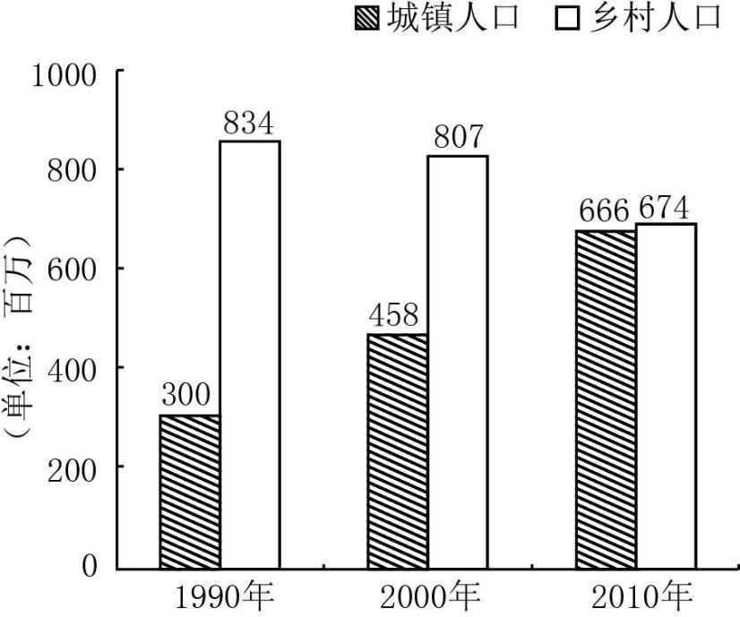

yy-2014-01
📄 原文 · 完整保留，点击展开/收起▾
Read the following text. Choose the best word(s) for each numbered blank and mark A, B, C or D on the ANSWER SHEET.
Thinner isn’t always better. A number of studies have __1__ that normal-weight people are in fact at higher risk of some diseases compared to those who are overweight. And there are health conditions for which being overweight is actually __2__. For example, heavier women are less likely to develop calcium deficiency than thin women. __3__, among the elderly, being somewhat overweight is often an __4__ of good health.
Of even greater __5__ is the fact that obesity turns out to be very difficult to define. It is often defined __6__ body mass index, or BMI. BMI __7__ body mass divided by the square of height. An adult with a BMI of 18 to 25 is often considered to be normal weight. Between 25 and 30 is overweight. And over 30 is considered obese. Obesity, __8__, can be divided into moderately obese, severely obese, and very severely obese.
While such numerical standards seem __9__, they are not. Obesity is probably less a matter of weight than body fat. Some people with a high BMI are in fact extremely fit, __10__ others with a low BMI may be in poor __11__. For example, many collegiate and professional football players __12__ as obese, though their percentage body fat is low. Conversely, someone with a small frame may have high body fat but a __13__ BMI.
Today we have a(n) __14__ to label obesity as a disgrace. The overweight are sometimes __15__ in the media with their faces covered. Stereotypes __16__ with obesity include laziness, lack of will power, and lower prospects for success. Teachers, employers, and health professionals have been shown to harbor biases against the obese. __17__ very young children tend to look down on the overweight, and teasing about body build has long been a problem in schools.
Negative attitudes toward obesity, __18__ in health concerns, have stimulated a number of anti-obesity __19__. My own hospital system has banned sugary drinks from its facilities. Many employers have instituted weight loss and fitness initiatives. Michelle Obama has launched a high-visibility campaign __20__ childhood obesity, even claiming that it represents our greatest national security threat.
第 1 题 · 本题位置已在原文中高亮（完形空位 / 新题型段落），请结合原文选出正确选项
答案：B
本题讲解：2014 完形第 1 空 · “研究 ______ that 从句”——研究对结论只能做什么
答案：B（concluded 得出结论；推断）。
第 0 步：先立机制——动词题先看主语和宾语，再让立场裁决
空格是谓语动词：主语是 A number of studies（多项研究），宾语是 that 引导的宾语从句（内容：与超重者相比，体重正常的人患某些疾病的风险其实更高）。“研究”对一整套 that 从句能做的动作有限：可以得出、否认、怀疑一个结论，但不能“确保”它。这一步先把 D 划出候选圈。
剩下三个词的取舍不由语法决定，而由立场决定：从句内容与全文走向一致还是相悖？
第 1 步：定位原文
A number of studies have __1__ that normal-weight people are in fact at higher risk of some diseases compared to those who are overweight.
空格谓语的宾语是一个完整的判断句：“体重正常者患病风险反而更高”。这句话是全文的论点还是被反驳的对象，决定了动词的正负方向。
第 2 步：找证据——首句立场与下文例证都在从句这一侧
Thinner isn’t always better.
And there are health conditions for which being overweight is actually __2__.
首句 Thinner isn’t always better（更瘦不总是更好）给全文定调；紧随其后的第 2 空所在句仍在说超重的好处，再往后 For example、Likewise 两条例证（不易缺钙、老年人微胖更健康）继续加码。可见从句“正常体重者风险更高”正是文章要立的论点——研究对它的动作只能是“得出”。
第 3 步：逐项排除
| 选项 | 词义 | 判定 | 理由与典型误解 |
|---|---|---|---|
| A denied | 否认 | ✗ 排除 | deny + that 从句 = 断言从句内容为假：若研究“否认”正常体重者风险更高，等于说“瘦更好”，与首句立场正面相撞。（典型误解：只检查“动词 + that 从句”的语法可行性，不核对从句内容与全文立场是否同向。） |
| B concluded | 得出结论；推断 | ✓ 当选 | conclude that... 是“研究得出结论”的标准搭配；从句内容与全文“瘦未必好”的立场完全同向，并被下文例证一路支持。 |
| C doubted | 怀疑 | ✗ 排除 | doubt 表示对从句内容的真实性存疑——但首段下文全是支持性例证（不易缺钙、老年人微胖更健康），文章在立论，不在质疑。（典型误解：把 doubt 与 deny 混为一谈，忘了先看下文的展开方向。） |
| D ensured | 确保 | ✗ 排除 | ensure 指“确保某事发生/属实”，主语通常是人或措施；“研究”只能对结论“得出”判断，不能“担保”从句内容成立——研究是发现者，不是担保人。（典型误解：把中文“研究表明”里的“表明”错配成“确保”。） |
代入后的完整句义：多项研究已得出结论：与超重者相比，体重正常的人其实患某些疾病的风险更高。
第 4 步：预判追问
- 为什么 B、C 都能接 that 从句，还要再挑？：conclude that 呈现的是“研究的结果”，doubt that 呈现的是“对结果的存疑”；判断依据不在语法而在下文走向：首段后面一路在给“超重有益”补充证据，说明这个结论已被研究确立，不处于“被怀疑”状态。
- denied 与 doubted 中文都带“否”意，怎么分？：deny 是断言其为假，doubt 是不能断定真假。本题两个都不成立，但错误路径不同：选 A 是把立场读反，选 C 是把文章性质读错（把立论读成质疑）。
易错点
- 误选 C（doubted）：忽略下文全是支持性例证，把立论文章读成了质疑文章。
- 误选 A（denied）：只机械检查“动词 + that 从句”的语法，没把从句内容放到全文立场里核对。
- 误选 D（ensured）：把“研究表明”里的“表明”脑补成“确保”，混淆了“发现结论”与“担保属实”。
记忆锚点：studies + that 结论 → conclude；deny=断言假，doubt=存疑，ensure=担保；首句 Thinner isn’t always better 定全文立场。
yy-2014-02
📄 原文 · 完整保留，点击展开/收起▾
Read the following text. Choose the best word(s) for each numbered blank and mark A, B, C or D on the ANSWER SHEET.
Thinner isn’t always better. A number of studies have __1__ that normal-weight people are in fact at higher risk of some diseases compared to those who are overweight. And there are health conditions for which being overweight is actually __2__. For example, heavier women are less likely to develop calcium deficiency than thin women. __3__, among the elderly, being somewhat overweight is often an __4__ of good health.
Of even greater __5__ is the fact that obesity turns out to be very difficult to define. It is often defined __6__ body mass index, or BMI. BMI __7__ body mass divided by the square of height. An adult with a BMI of 18 to 25 is often considered to be normal weight. Between 25 and 30 is overweight. And over 30 is considered obese. Obesity, __8__, can be divided into moderately obese, severely obese, and very severely obese.
While such numerical standards seem __9__, they are not. Obesity is probably less a matter of weight than body fat. Some people with a high BMI are in fact extremely fit, __10__ others with a low BMI may be in poor __11__. For example, many collegiate and professional football players __12__ as obese, though their percentage body fat is low. Conversely, someone with a small frame may have high body fat but a __13__ BMI.
Today we have a(n) __14__ to label obesity as a disgrace. The overweight are sometimes __15__ in the media with their faces covered. Stereotypes __16__ with obesity include laziness, lack of will power, and lower prospects for success. Teachers, employers, and health professionals have been shown to harbor biases against the obese. __17__ very young children tend to look down on the overweight, and teasing about body build has long been a problem in schools.
Negative attitudes toward obesity, __18__ in health concerns, have stimulated a number of anti-obesity __19__. My own hospital system has banned sugary drinks from its facilities. Many employers have instituted weight loss and fitness initiatives. Michelle Obama has launched a high-visibility campaign __20__ childhood obesity, even claiming that it represents our greatest national security threat.
第 2 题 · 本题位置已在原文中高亮（完形空位 / 新题型段落），请结合原文选出正确选项
答案：A
本题讲解：2014 完形第 2 空 · “超重对某些健康状况其实是 ______ 的”——actually 的反转信号
答案：A（protective 保护性的）。
第 0 步：先立机制——形容词题先找方向信号：actually + 前句对比
空格是表语形容词：主语 being overweight（超重这种状态），for which 引导定语从句修饰 health conditions——句子说的是“对某些健康问题而言，超重反而 __”。句中两个信号决定方向：actually（实际上）专门出现在“与预期相反”处；前句刚比较过“正常体重者风险更高、超重者更低”。所以空格必须填“有好处”方向的词，一切贬义词先出局。
第 1 步：定位原文
And there are health conditions for which being overweight is actually __2__.
for which 把“超重”和“某些健康状况”绑在一起：要判断的是超重对这些状况起什么作用——是保护、危害，还是别的性质。
第 2 步：找证据——前句对比 + For example 例子，两条证据同向
A number of studies have concluded that normal-weight people are in fact at higher risk of some diseases compared to those who are overweight.
For example, heavier women are less likely to develop calcium deficiency than thin women.
证据一：正常体重者患病风险“更高”，比较的落点是超重者风险更低；证据二：较胖女性更不容易缺钙。两条证据都在描述超重“挡住”了某些健康风险——这正是“保护性”的含义，比笼统的“有好处”更贴原文的防病视角。
第 3 步：逐项排除
| 选项 | 词义 | 判定 | 理由与典型误解 |
|---|---|---|---|
| A protective | 保护性的 | ✓ 当选 | “超重对某些健康状况起保护作用”——protective 精确对应“风险更低、不易缺钙”两条证据，且与 actually 的反转语气吻合。 |
| B dangerous | 危险的 | ✗ 排除 | 代入成“超重其实是危险的”——这恰是常识，可 actually 的反转语气和前后两条证据全在说反话，方向完全相反。（典型误解：凭生活常识直接选词，丢了 actually 的反转信号。） |
| C sufficient | 足够的 | ✗ 排除 | sufficient 评价的是数量多少，而“超重”是一种状态，谈不上“足够”或“不够”——语义落空。（典型误解：只挑褒贬方向，没检查词与主语“状态”是否相容。） |
| D troublesome | 麻烦的 | ✗ 排除 | 同样是负面评价，与“超重有益”的证据链反向；“带来麻烦”也接不上后文“不易缺钙”的例子。（典型误解：漏读 for which 定语从句的指向，没意识到句子在说超重的好处。） |
代入后的完整句义：对某些健康状况而言，超重实际上反而起保护作用。
第 4 步：预判追问
- protective 是“防护的”，为什么不是“有益的”更直白？：选项里没有 beneficial；protective 正是从“风险更低、不易缺钙”这两个防病例子里提炼出的性质：超重像一层保护垫。选词要以原文证据为准，不凭语感另起炉灶。
- dangerous 不就是常识里超重的特点吗？：常识没错，但首句 Thinner isn’t always better 就是要打破这个常识，actually 一词专管“反常识”处。跟着常识选 dangerous，正好掉进出题人设置的立场陷阱。
易错点
- 误选 B（dangerous）：无视 actually 的反转信号与首句立场，凭生活常识选词。
- 误选 C（sufficient）：只挑褒贬，不检查语义兼容——“状态”不能被评价为“足够”。
- 误选 D（troublesome）：漏读 for which 定语从句的指向，没发现句子在说超重的好处。
记忆锚点：actually = 反转信号灯；例证方向定褒贬；“超重防病” → protective（保护性的）。
yy-2014-03
📄 原文 · 完整保留，点击展开/收起▾
Read the following text. Choose the best word(s) for each numbered blank and mark A, B, C or D on the ANSWER SHEET.
Thinner isn’t always better. A number of studies have __1__ that normal-weight people are in fact at higher risk of some diseases compared to those who are overweight. And there are health conditions for which being overweight is actually __2__. For example, heavier women are less likely to develop calcium deficiency than thin women. __3__, among the elderly, being somewhat overweight is often an __4__ of good health.
Of even greater __5__ is the fact that obesity turns out to be very difficult to define. It is often defined __6__ body mass index, or BMI. BMI __7__ body mass divided by the square of height. An adult with a BMI of 18 to 25 is often considered to be normal weight. Between 25 and 30 is overweight. And over 30 is considered obese. Obesity, __8__, can be divided into moderately obese, severely obese, and very severely obese.
While such numerical standards seem __9__, they are not. Obesity is probably less a matter of weight than body fat. Some people with a high BMI are in fact extremely fit, __10__ others with a low BMI may be in poor __11__. For example, many collegiate and professional football players __12__ as obese, though their percentage body fat is low. Conversely, someone with a small frame may have high body fat but a __13__ BMI.
Today we have a(n) __14__ to label obesity as a disgrace. The overweight are sometimes __15__ in the media with their faces covered. Stereotypes __16__ with obesity include laziness, lack of will power, and lower prospects for success. Teachers, employers, and health professionals have been shown to harbor biases against the obese. __17__ very young children tend to look down on the overweight, and teasing about body build has long been a problem in schools.
Negative attitudes toward obesity, __18__ in health concerns, have stimulated a number of anti-obesity __19__. My own hospital system has banned sugary drinks from its facilities. Many employers have instituted weight loss and fitness initiatives. Michelle Obama has launched a high-visibility campaign __20__ childhood obesity, even claiming that it represents our greatest national security threat.
第 3 题 · 本题位置已在原文中高亮（完形空位 / 新题型段落），请结合原文选出正确选项
答案：C
本题讲解：2014 完形第 3 空 · “______, 老年人微胖常是健康的标志”——前后句是什么逻辑关系
答案：C（Likewise 同样地（表类比））。
第 0 步：先立机制——逻辑连接词题：先提炼句意，再判关系，最后选词
空格在句首，考的是句间逻辑。方法固定三步：① 提炼空格前一句说了什么；② 提炼空格所在句说了什么；③ 判断两句话的关系——相反（转折）、相推（因果）还是同向（并列/类比）。本题还有个顺序技巧：空格句里埋着第 4 空（an __ of good health），先做第 4 空把句意补完整，逻辑关系才看得清——先实词后虚词。
第 1 步：定位原文
__3__, among the elderly, being somewhat overweight is often an indicator of good health.
空格句自身：“在老年人中，略微超重往往是身体健康的标志”——又一条“超重有益”的证据。
第 2 步：找证据——前句与空格句是同一论点下的平行例证
For example, heavier women are less likely to develop calcium deficiency than thin women.
前句：较胖的女性比瘦女性更不容易缺钙——超重有益的一个例子（人群：女性；病：缺钙）。空格句：老年人中微胖是健康标志（人群：老年人；结果：健康）。两句话换了人群、换了病症，但方向完全相同——典型的“再举一例”，既非转折也非因果。
第 3 步：逐项排除
| 选项 | 词义 | 判定 | 理由与典型误解 |
|---|---|---|---|
| A Instead | 相反，反而（表转折替代） | ✗ 排除 | Instead 表“用后者取代前者”的转折替代关系；前后两句是并列例证，谁也没取代谁。（典型误解：见到两句都在讲胖与瘦，就误以为句间是转折。） |
| B However | 然而（表转折） | ✗ 排除 | However 表转折，要求前后语义相反；这里两句方向一致（都在说超重的好处），转折无从谈起。（典型误解：However 是完形高频词，凭“眼熟”选它，不先判关系。） |
| C Likewise | 同样地（表类比） | ✓ 当选 | Likewise 表类比/并列，引出同方向的又一例——由“女性不易缺钙”到“老年人微胖是健康标志”，正是“换个人群再举一例”的标准写法。 |
| D Therefore | 因此（表结果） | ✗ 排除 | Therefore 表因果总结；前句只是一个例子，例子推不出结论，更概括不出“老年人”的情况。（典型误解：把并列例证当成“论据 → 结论”的因果链。） |
代入后的完整句义：同样地，在老年人中，略微超重往往是身体健康的标志。
第 4 步：预判追问
- 为什么这题要先做第 4 空？：本空四个选项全是逻辑词，而空格句自身的语义要等 an indicator of good health 填出来才完整；句意立不住，前后关系自然判不准。先实词后虚词，是完形逻辑词题的通用顺序。
- Likewise 和 Also 有什么区别？：都表并列，但 Also 只是把新信息并置；Likewise 强调“同类情况再次发生”——前一个人群（女性）如此，这一人群（老年人）也如此，正合文中“换个人群再举一例”的写法。
易错点
- 误选 B（However）：把“不同人群、不同例子”误读成“语义相反”，没意识到例证方向相同。
- 误选 D（Therefore）：把例证关系错当因果链，忽略了 For example 后面只能接平行例子。
- 误选 A（Instead）：把句内的胖瘦对比错误放大成句间的转折替代。
记忆锚点：逻辑词先判关系再选词：同向并列 → Likewise；反向 → However/Instead；推结论 → Therefore。
yy-2014-04
📄 原文 · 完整保留，点击展开/收起▾
Read the following text. Choose the best word(s) for each numbered blank and mark A, B, C or D on the ANSWER SHEET.
Thinner isn’t always better. A number of studies have __1__ that normal-weight people are in fact at higher risk of some diseases compared to those who are overweight. And there are health conditions for which being overweight is actually __2__. For example, heavier women are less likely to develop calcium deficiency than thin women. __3__, among the elderly, being somewhat overweight is often an __4__ of good health.
Of even greater __5__ is the fact that obesity turns out to be very difficult to define. It is often defined __6__ body mass index, or BMI. BMI __7__ body mass divided by the square of height. An adult with a BMI of 18 to 25 is often considered to be normal weight. Between 25 and 30 is overweight. And over 30 is considered obese. Obesity, __8__, can be divided into moderately obese, severely obese, and very severely obese.
While such numerical standards seem __9__, they are not. Obesity is probably less a matter of weight than body fat. Some people with a high BMI are in fact extremely fit, __10__ others with a low BMI may be in poor __11__. For example, many collegiate and professional football players __12__ as obese, though their percentage body fat is low. Conversely, someone with a small frame may have high body fat but a __13__ BMI.
Today we have a(n) __14__ to label obesity as a disgrace. The overweight are sometimes __15__ in the media with their faces covered. Stereotypes __16__ with obesity include laziness, lack of will power, and lower prospects for success. Teachers, employers, and health professionals have been shown to harbor biases against the obese. __17__ very young children tend to look down on the overweight, and teasing about body build has long been a problem in schools.
Negative attitudes toward obesity, __18__ in health concerns, have stimulated a number of anti-obesity __19__. My own hospital system has banned sugary drinks from its facilities. Many employers have instituted weight loss and fitness initiatives. Michelle Obama has launched a high-visibility campaign __20__ childhood obesity, even claiming that it represents our greatest national security threat.
第 4 题 · 本题位置已在原文中高亮（完形空位 / 新题型段落），请结合原文选出正确选项
答案：A
本题讲解：2014 完形第 4 空 · “微胖是健康的 ______”——状态与结果之间是什么关系
答案：A（indicator 标志，指示）。
第 0 步：先立机制——名词题：四个候选各自预设一种关系，用原文证据裁决
空格结构是 an __ of good health，主语是 being somewhat overweight。四个候选词各预设一种关系：indicator（标志）= 伴随暗示“见微胖推健康”；objective（目标）= 主观追求；origin（起源）= 因果产生；example（例子）= 类别取样。原文证据呈现的是哪一种，答案就是哪一个。
第 1 步：定位原文
Likewise, among the elderly, being somewhat overweight is often an __4__ of good health.
句意骨架：“老年人中，略微超重往往是健康的某种东西”——这个“东西”必须能把“体型”和“健康”连成一条推断链。
第 2 步：找证据——全段证据都是“观察体重 → 推知风险”的相关性叙述
A number of studies have concluded that normal-weight people are in fact at higher risk of some diseases compared to those who are overweight.
For example, heavier women are less likely to develop calcium deficiency than thin women.
两条证据的共同结构：给出体重状态，给出患病风险，两者同向浮动。原文从头到尾没有说“超重产生了健康”，也没说“微胖是健康的样本”——它只提供了一个可观察的信号。所以名词必须取“信号/标志”义。
第 3 步：逐项排除
| 选项 | 词义 | 判定 | 理由与典型误解 |
|---|---|---|---|
| A indicator | 标志，指示 | ✓ 当选 | “微胖往往是身体健康良好的标志”——以外在体型指示内在健康，与前文“体重—风险”的观察角度完全一致。 |
| B objective | 目标，目的 | ✗ 排除 | “微胖是健康的目标”= 把变胖当作追求健康的途径，既不合常理，也与原句的客观陈述语气冲突（objective 带主观追求义）。（典型误解：四个中文释义都抽象，凭语感抓词，不核对关系类型。） |
| C origin | 起源，开端 | ✗ 排除 | “微胖是健康的起源”= 微胖导致健康——把相关性强扭成因果；原文证据只说风险更低，没说超重“制造”了健康。（典型误解：把“同时出现”误读为“前者产生后者”。） |
| D example | 例子，实例 | ✗ 排除 | an example of good health = “健康的一个实例”——主语“微胖”得是健康的样本，可它是一种体型而非健康状况；且前句 For example 已完成举例职能，此处是陈述规律。（典型误解：example 是万能熟词，代入后“读得顺”就不细究主宾逻辑。） |
代入后的完整句义：同样地，在老年人中，略微超重往往是身体健康良好的标志。
第 4 步：预判追问
- indicator 和 example 都有“代表”意味，差别在哪？：example 是“类别中的一个样本”（健康的一个实例）；indicator 是“由这个征兆可推知那件事”（标志）。原文逻辑是“见微胖 → 推健康”，是推断不是取样，所以只能 indicator。
- “超重有益”难道不是因果吗，为什么 origin 不行？：“超重有益”说的是风险对比（更不容易缺钙、风险更低），不是“超重制造健康”；且 an origin of good health 搭配生硬。完形选词要贴原句结构与证据强度，不能替原文升级论断。
易错点
- 误选 D（example）：熟词优先的惯性，不核对“主语能否充当宾语的实例”。
- 误选 C（origin）：把“相关性”升级成“因果性”，替原文多说了话。
- 误选 B（objective）：只凭中文释义相近抓词，忽略原句是客观陈述。
记忆锚点：“见 A 推 B” → indicator；“A 是 B 的样本” → example；“A 造出 B” → origin；objective 要有“追求”语境。
yy-2014-05
📄 原文 · 完整保留，点击展开/收起▾
Read the following text. Choose the best word(s) for each numbered blank and mark A, B, C or D on the ANSWER SHEET.
Thinner isn’t always better. A number of studies have __1__ that normal-weight people are in fact at higher risk of some diseases compared to those who are overweight. And there are health conditions for which being overweight is actually __2__. For example, heavier women are less likely to develop calcium deficiency than thin women. __3__, among the elderly, being somewhat overweight is often an __4__ of good health.
Of even greater __5__ is the fact that obesity turns out to be very difficult to define. It is often defined __6__ body mass index, or BMI. BMI __7__ body mass divided by the square of height. An adult with a BMI of 18 to 25 is often considered to be normal weight. Between 25 and 30 is overweight. And over 30 is considered obese. Obesity, __8__, can be divided into moderately obese, severely obese, and very severely obese.
While such numerical standards seem __9__, they are not. Obesity is probably less a matter of weight than body fat. Some people with a high BMI are in fact extremely fit, __10__ others with a low BMI may be in poor __11__. For example, many collegiate and professional football players __12__ as obese, though their percentage body fat is low. Conversely, someone with a small frame may have high body fat but a __13__ BMI.
Today we have a(n) __14__ to label obesity as a disgrace. The overweight are sometimes __15__ in the media with their faces covered. Stereotypes __16__ with obesity include laziness, lack of will power, and lower prospects for success. Teachers, employers, and health professionals have been shown to harbor biases against the obese. __17__ very young children tend to look down on the overweight, and teasing about body build has long been a problem in schools.
Negative attitudes toward obesity, __18__ in health concerns, have stimulated a number of anti-obesity __19__. My own hospital system has banned sugary drinks from its facilities. Many employers have instituted weight loss and fitness initiatives. Michelle Obama has launched a high-visibility campaign __20__ childhood obesity, even claiming that it represents our greatest national security threat.
第 5 题 · 本题位置已在原文中高亮（完形空位 / 新题型段落），请结合原文选出正确选项
答案：D
本题讲解：2014 完形第 5 空 · Of even greater ______ is the fact that...——倒装句里的过渡名词
答案：D（concern 关切，关注）。
第 0 步：先立机制——倒装句先还原语序，再问 greater 比的是什么
本句是倒装：Of even greater __ is the fact that...，正常语序为 The fact is of even greater __。of + 抽象名词构成“具有某种属性”的表语结构。解题的钥匙是比较级 greater：比较要有对象，而这里的“对象”不是某个同类名词，而是上文整个话题——作者在说，接下来这件事比前面聊的“超重的益处”更值得如何如何。能承接“话题升级”的抽象名词，只有“关注”。
第 1 步：定位原文
Of even greater __5__ is the fact that obesity turns out to be very difficult to define.
还原语序后句意为：“肥胖很难界定这一事实，比（上文的话题）更加 __”——空格填的是作者对这一新话题的态度分量。
第 2 步：找证据——greater 的比较对象是一次话题换轨
...among the elderly, being somewhat overweight is often an indicator of good health.
Of even greater __5__ is the fact that obesity turns out to be very difficult to define.
上段末句给“超重有益”收尾；本句立刻抛出“肥胖 turns out to be 很难界定”。段落交界处的 even greater 是作者的手势：前面说的固然重要，但下面这个“定义难题”更要紧。空格名词必须自带“值得投入注意力”的语义，才接得住这个手势。
第 3 步：逐项排除
| 选项 | 词义 | 判定 | 理由与典型误解 |
|---|---|---|---|
| A impact | 影响 | ✗ 排除 | of great impact = 影响巨大。但下文讲的是“肥胖怎么定义、BMI 是什么”，并没有展开“这个事实造成了什么影响”，比较级落空。（典型误解：greater + impact 是高频搭配，不看下文是否真的在谈影响。） |
| B relevance | 关联 | ✗ 排除 | of greater relevance = 与（前文）关联更大。可这句恰是话题转移的枢纽，下文“如何定义肥胖”与上文“超重有益”并无更大关联。（典型误解：看到 greater 就想“和前文比较”，没读出话题换轨的写作意图。） |
| C assistance | 援助，帮助 | ✗ 排除 | of assistance = 有帮助的，主语通常是人或工具；“肥胖难以界定”这一事实本身谈不上“提供帮助”。（典型误解：只认 of + 抽象名词的格式，不检查名词与主语事实的语义相容。） |
| D concern | 关切，关注 | ✓ 当选 | of even greater concern = 更值得关注——作者亮明“下面这个问题更重要”，承上启下，与 greater 的比较级严丝合缝。 |
代入后的完整句义：更值得关注的是这样一个事实：肥胖被证明很难界定。
第 4 步：预判追问
- 为什么这题必须先认出倒装？：不还原语序就会把 Of even greater
__当成句首状语去找名词搭配，方向全错；还原成 The fact is of even greater__之后，主语是“事实”、比较级指向话题升级，候选名词的范围立刻清晰。倒装句完形的第一步永远是还原语序。 - concern 不是也有“担忧”义吗，取哪个？：此处取“关切、值得关注”义即可；即便偏“担忧”，方向也对——肥胖难以界定确实是个让人头疼的问题。concern 的语义弹性正是它胜出的原因。
易错点
- 误选 A（impact）：把“ greater + 抽象名词”当固定套路，不验证下文是否真的在谈影响。
- 误选 B（relevance）：把话题转移误读成话题延续。
- 误选 C（assistance）：忽略主语是“事实”，事实不能施予帮助。
记忆锚点：倒装句先还原语序；even greater = 话题升级的信号；承上启下引入新问题 → of (even) greater concern。
yy-2014-06
📄 原文 · 完整保留，点击展开/收起▾
Read the following text. Choose the best word(s) for each numbered blank and mark A, B, C or D on the ANSWER SHEET.
Thinner isn’t always better. A number of studies have __1__ that normal-weight people are in fact at higher risk of some diseases compared to those who are overweight. And there are health conditions for which being overweight is actually __2__. For example, heavier women are less likely to develop calcium deficiency than thin women. __3__, among the elderly, being somewhat overweight is often an __4__ of good health.
Of even greater __5__ is the fact that obesity turns out to be very difficult to define. It is often defined __6__ body mass index, or BMI. BMI __7__ body mass divided by the square of height. An adult with a BMI of 18 to 25 is often considered to be normal weight. Between 25 and 30 is overweight. And over 30 is considered obese. Obesity, __8__, can be divided into moderately obese, severely obese, and very severely obese.
While such numerical standards seem __9__, they are not. Obesity is probably less a matter of weight than body fat. Some people with a high BMI are in fact extremely fit, __10__ others with a low BMI may be in poor __11__. For example, many collegiate and professional football players __12__ as obese, though their percentage body fat is low. Conversely, someone with a small frame may have high body fat but a __13__ BMI.
Today we have a(n) __14__ to label obesity as a disgrace. The overweight are sometimes __15__ in the media with their faces covered. Stereotypes __16__ with obesity include laziness, lack of will power, and lower prospects for success. Teachers, employers, and health professionals have been shown to harbor biases against the obese. __17__ very young children tend to look down on the overweight, and teasing about body build has long been a problem in schools.
Negative attitudes toward obesity, __18__ in health concerns, have stimulated a number of anti-obesity __19__. My own hospital system has banned sugary drinks from its facilities. Many employers have instituted weight loss and fitness initiatives. Michelle Obama has launched a high-visibility campaign __20__ childhood obesity, even claiming that it represents our greatest national security threat.
第 6 题 · 本题位置已在原文中高亮（完形空位 / 新题型段落），请结合原文选出正确选项
答案：A
本题讲解：2014 完形第 6 空 · It is often defined ______ body mass index——定义的“依据”怎么表达
答案：A（in terms of 依据，按照）。
第 0 步：先立机制——介词短语题：先明确空格要表达的逻辑，再用下文验证
空格两端的逻辑关系先想清楚：defined（定义）与 BMI 之间缺的是“依据”关系——肥胖凭什么被界定？带着这个预设去下文找验证：下一句给算法，再下几句给分级界值。若下文证实“BMI 就是那把标尺”，空格短语就必须表达“按照、依据”；四个选项里语义场对不上的逐一出局。
第 1 步：定位原文
It is often defined __6__ body mass index, or BMI.
It（指 obesity）is often defined __ BMI：主语是被定义项，宾语位置放的是候选标尺，中间的短语决定“标尺”与“定义”的关系。
第 2 步：找证据——下文公式与分级证实“BMI 是标尺”
BMI __7__ body mass divided by the square of height.
An adult with a BMI of 18 to 25 is often considered to be normal weight.
作者紧接着给出 BMI = 体重 ÷ 身高²，又按数值划出正常/超重/肥胖三档——这一整段就是“依据 BMI 定义肥胖”的操作手册。反过来说，若空格填“万一/支持/方面”，下文这套数值系统就失去了着落点。
第 3 步：逐项排除
| 选项 | 词义 | 判定 | 理由与典型误解 |
|---|---|---|---|
| A in terms of | 依据，按照 | ✓ 当选 | defined in terms of BMI = 依据 BMI 来定义——in terms of 的本义是“用……（单位/术语）来表述”，引申为“以……为衡量尺度”，与下文“公式 + 分级”的写法严丝合缝。 |
| B in case of | 万一，如果发生 | ✗ 排除 | in case of 表假设条件；“定义万一 BMI”语义不通——原句是一般性陈述，不存在“万一”的假设句式。（典型误解：四个短语都含 in，凭对单个介词的印象选词。） |
| C in favor of | 支持，有利于 | ✗ 排除 | in favor of 表立场倾向；“定义”不存在支持谁、反对谁的立场问题——“依据 BMI”与“支持 BMI”是两回事。（典型误解：见到 favor 想到“选择它”，把“依据”和“支持”混为一谈。） |
| D in respects of | 关于，在……方面 | ✗ 排除 | “在 BMI 方面定义肥胖”含糊其辞——没说清 BMI 是定义的标尺；该搭配本身也不规范（标准说法是 in this respect）。（典型误解：语义含糊的选项看似“都能沾边”，实则没说中要害。） |
代入后的完整句义：肥胖通常依据身体质量指数（即 BMI）来定义。
第 4 步：预判追问
- in terms of 为什么能表“依据”？：它的本义是“用……（单位/术语）来表述”，引申为“以……为衡量尺度”：define sth in terms of X 就是“拿 X 当尺子来界定某物”，正合“BMI 是标尺”的语境。
- 怎么快速排除 in case of？：问一句：句子里有“条件/假设”的影子吗？defined 是一般性陈述，不是“万一发生什么”的假设句式，语义场直接对不上——介词短语排除靠整体意义，不靠首词 in。
易错点
- 误选 B（in case of）：只盯 in，不记完整短语的意义。
- 误选 C（in favor of）：把“衡量的依据”错当成“选择的立场”。
- 误选 D（in respects of）：被“方面”义的含糊表述蒙混过关，未检验是否说中“标尺”要害。
记忆锚点：defined / measured + in terms of X = 以 X 为依据；in case of 表万一、in favor of 表支持，都与“定义”无关。
yy-2014-07
📄 原文 · 完整保留，点击展开/收起▾
Read the following text. Choose the best word(s) for each numbered blank and mark A, B, C or D on the ANSWER SHEET.
Thinner isn’t always better. A number of studies have __1__ that normal-weight people are in fact at higher risk of some diseases compared to those who are overweight. And there are health conditions for which being overweight is actually __2__. For example, heavier women are less likely to develop calcium deficiency than thin women. __3__, among the elderly, being somewhat overweight is often an __4__ of good health.
Of even greater __5__ is the fact that obesity turns out to be very difficult to define. It is often defined __6__ body mass index, or BMI. BMI __7__ body mass divided by the square of height. An adult with a BMI of 18 to 25 is often considered to be normal weight. Between 25 and 30 is overweight. And over 30 is considered obese. Obesity, __8__, can be divided into moderately obese, severely obese, and very severely obese.
While such numerical standards seem __9__, they are not. Obesity is probably less a matter of weight than body fat. Some people with a high BMI are in fact extremely fit, __10__ others with a low BMI may be in poor __11__. For example, many collegiate and professional football players __12__ as obese, though their percentage body fat is low. Conversely, someone with a small frame may have high body fat but a __13__ BMI.
Today we have a(n) __14__ to label obesity as a disgrace. The overweight are sometimes __15__ in the media with their faces covered. Stereotypes __16__ with obesity include laziness, lack of will power, and lower prospects for success. Teachers, employers, and health professionals have been shown to harbor biases against the obese. __17__ very young children tend to look down on the overweight, and teasing about body build has long been a problem in schools.
Negative attitudes toward obesity, __18__ in health concerns, have stimulated a number of anti-obesity __19__. My own hospital system has banned sugary drinks from its facilities. Many employers have instituted weight loss and fitness initiatives. Michelle Obama has launched a high-visibility campaign __20__ childhood obesity, even claiming that it represents our greatest national security threat.
第 7 题 · 本题位置已在原文中高亮（完形空位 / 新题型段落），请结合原文选出正确选项
答案：C
本题讲解：2014 完形第 7 空 · BMI ______ body mass divided by the square of height——主语与算式的关系
答案：C（equals 等于）。
第 0 步：先立机制——先认出表语是算式，主宾关系就只剩两种可能
表语 body mass divided by the square of height 是一个完整算式，其值是一个数值；主语 BMI 是一个指数——指数也是数值。数值对算式，谓语要么表达“等于”（等号关系），要么表达“算出/决定”（派生关系）。再看方向：算式（体重、身高）是原始量，BMI 是派生量——若选“决定”类动词，方向就反了；唯有等号两端对等，不区分先后。
第 1 步：定位原文
BMI __7__ body mass divided by the square of height.
本句在段落里的任务：上句宣布“依据 BMI 定义”，本句必须交代 BMI 是什么——交代一个指数，就是给出它的公式。
第 2 步：找证据——上下句夹逼出“本句 = 公式”
It is often defined in terms of body mass index, or BMI.
An adult with a BMI of 18 to 25 is often considered to be normal weight.
上句：肥胖依据 BMI 定义；下句：按 BMI 数值分级。中间这一句只能是对 BMI 本身的数学交代。公式语言里“定义”与“等于”同义：说 X is defined as ... 等价于 X equals ...。四个选项里唯一承担此职的是 equals。
第 3 步：逐项排除
| 选项 | 词义 | 判定 | 理由与典型误解 |
|---|---|---|---|
| A measures | 测量 | ✗ 排除 | measures 要求主语是测量工具或人；BMI 是算出来的结果，不是拿去测体重的仪器——“BMI 测量体重”主宾颠倒。（典型误解：中文“BMI 测肥胖”说顺了嘴，把中文语感直移英文。） |
| B determines | 决定 | ✗ 排除 | 决定关系方向反了——是“体重 ÷ 身高²”这个算式决定 BMI 的值，不是 BMI 决定算式；determine 需要原因做主语，此处主语是结果。（典型误解：determine 显得“学术”，语感加分就选，没核对谁是因谁是果。） |
| C equals | 等于 | ✓ 当选 | BMI equals body mass divided by the square of height——BMI 等于体重除以身高的平方，数值对数值的等号关系。 |
| D modifies | 修改 | ✗ 排除 | BMI 不修改算式，动宾关系完全不成立，纯属凑数项。（典型误解：四个动词里挑最生僻的，以为“不熟的才是答案”。） |
代入后的完整句义：BMI 等于体重除以身高的平方。
第 4 步：预判追问
- measures 与 equals 怎么一步分清？：看表语类型：表语是“名词性算式/数值”时用 equals；若表语是“属性”（如 BMI measures body fatness 检测体脂水平），才轮到 measures。本句表语是 divided by 引出的算式，等号关系一目了然。
- “谁决定谁”才对？：Body mass and height determine BMI（体重和身高决定 BMI）——原始量做主语。原句把 BMI 放主语位、算式放表语位，结构本身就排除了 determine。
易错点
- 误选 A（measures）：把中文语感“BMI 测肥胖”直移英文，主宾颠倒。
- 误选 B（determines）：因果方向没核对，派生量当起了原因。
- 误选 D（modifies）：动宾关系不通，纯属凑数项。
记忆锚点：主语是数值、表语是算式 → equals；measures 要工具做主语，determines 要原因做主语。
yy-2014-08
📄 原文 · 完整保留，点击展开/收起▾
Read the following text. Choose the best word(s) for each numbered blank and mark A, B, C or D on the ANSWER SHEET.
Thinner isn’t always better. A number of studies have __1__ that normal-weight people are in fact at higher risk of some diseases compared to those who are overweight. And there are health conditions for which being overweight is actually __2__. For example, heavier women are less likely to develop calcium deficiency than thin women. __3__, among the elderly, being somewhat overweight is often an __4__ of good health.
Of even greater __5__ is the fact that obesity turns out to be very difficult to define. It is often defined __6__ body mass index, or BMI. BMI __7__ body mass divided by the square of height. An adult with a BMI of 18 to 25 is often considered to be normal weight. Between 25 and 30 is overweight. And over 30 is considered obese. Obesity, __8__, can be divided into moderately obese, severely obese, and very severely obese.
While such numerical standards seem __9__, they are not. Obesity is probably less a matter of weight than body fat. Some people with a high BMI are in fact extremely fit, __10__ others with a low BMI may be in poor __11__. For example, many collegiate and professional football players __12__ as obese, though their percentage body fat is low. Conversely, someone with a small frame may have high body fat but a __13__ BMI.
Today we have a(n) __14__ to label obesity as a disgrace. The overweight are sometimes __15__ in the media with their faces covered. Stereotypes __16__ with obesity include laziness, lack of will power, and lower prospects for success. Teachers, employers, and health professionals have been shown to harbor biases against the obese. __17__ very young children tend to look down on the overweight, and teasing about body build has long been a problem in schools.
Negative attitudes toward obesity, __18__ in health concerns, have stimulated a number of anti-obesity __19__. My own hospital system has banned sugary drinks from its facilities. Many employers have instituted weight loss and fitness initiatives. Michelle Obama has launched a high-visibility campaign __20__ childhood obesity, even claiming that it represents our greatest national security threat.
第 8 题 · 本题位置已在原文中高亮（完形空位 / 新题型段落），请结合原文选出正确选项
答案：C
本题讲解：2014 完形第 8 空 · Obesity, ______, can be divided into...——插入语标识的推进方式
答案：C（in turn 转而，相应地）。
第 0 步：先立机制——插入语题：问清本句对上一句做的是哪种动作
插入语的功能是给句子贴“推进方式”标签：本质化（in essence）、对比（in contrast）、递进细化（in turn）、部分限定（in part）。判断依据只有一个——本句对上一句的内容做了什么。上句把体重分成三档，本句对其中的 obese 档再分三级：这是细化，不是对比（没有另一套说法），不是本质化（没有抽象升级），也不是限定（三级划分完整无遗）。
第 1 步：定位原文
Obesity, __8__, can be divided into moderately obese, severely obese, and very severely obese.
本句的谓语 can be divided into + 三个并列宾语，本身就是“再分一次级”的动作；插入语要给这个动作配上正确的推进语气。
第 2 步：找证据——上句落定分档，本句顺势细化
And over 30 is considered obese.
Obesity, __8__, can be divided into moderately obese, severely obese, and very severely obese.
上句的落点是“30 以上为肥胖”，本句主语顺势接住 obesity 继续切分——两句之间是水到渠成的顺承。若插 in contrast，读者会期待“另一套相反的分级标准”；若插 in essence，读者会期待“抛开分级谈本质”——都与下文的三个并列级别对不上。
第 3 步：逐项排除
| 选项 | 词义 | 判定 | 理由与典型误解 |
|---|---|---|---|
| A in essence | 本质上 | ✗ 排除 | 本句讲的是分级结果这一事实，没有上升到本质探讨；插上它反而暗示前文都是非本质描述，与段落写作不符。（典型误解：in essence 听着“学术”，在名词句前凭语感加分。） |
| B in contrast | 相比之下 | ✗ 排除 | contrast 需要一个对照面——本句与前文是细化关系，不是把肥胖和别的概念对着比。（典型误解：见到“又出现一套分类”，误当成“另一套对立说法”。） |
| C in turn | 转而，相应地 | ✓ 当选 | in turn 正是“接着上一级往下分”的递进衔接：体重分三档 → 肥胖这一档再分三级，层层推进。 |
| D in part | 部分地 | ✗ 排除 | 本句把肥胖完整分成三级、无遗漏，不是“部分肥胖如此”；in part 的模糊限定还会削弱 can be divided 的断言力度。（典型误解：拿“某种程度上”的模糊语气兜底。） |
代入后的完整句义：而肥胖相应地又可再分为中度肥胖、重度肥胖和极重度肥胖。
第 4 步：预判追问
- in turn 不是也有“依次、轮流”义吗，取哪个？：两义相通：本句既有“承上转而细分”的递进义，又暗含“逐级依次划分”的秩序感。in turn 出现在“分类/因果链”语境时基本取这两义，此处都顺。
- 它与 in essence 怎么一句话切开？：做删除测试：删掉 in turn，句子事实不变，只是少了“递进”提示；删掉 in essence，句子口吻大变（从摆事实变成谈本质）。本段只在摆分级事实，故取 in turn。
易错点
- 误选 B（in contrast）：把“分级细化”误判为“对比”，找不到真正的对照面。
- 误选 A（in essence）：被学术腔迷惑，不看段落是否真的在谈本质。
- 误选 D（in part）：拿模糊语气兜底，忽视“三级完整划分”的语境。
记忆锚点：分级之后再分级 → in turn；有对照面才 in contrast；谈本质才 in essence；话说一半才 in part。
yy-2014-09
📄 原文 · 完整保留，点击展开/收起▾
Read the following text. Choose the best word(s) for each numbered blank and mark A, B, C or D on the ANSWER SHEET.
Thinner isn’t always better. A number of studies have __1__ that normal-weight people are in fact at higher risk of some diseases compared to those who are overweight. And there are health conditions for which being overweight is actually __2__. For example, heavier women are less likely to develop calcium deficiency than thin women. __3__, among the elderly, being somewhat overweight is often an __4__ of good health.
Of even greater __5__ is the fact that obesity turns out to be very difficult to define. It is often defined __6__ body mass index, or BMI. BMI __7__ body mass divided by the square of height. An adult with a BMI of 18 to 25 is often considered to be normal weight. Between 25 and 30 is overweight. And over 30 is considered obese. Obesity, __8__, can be divided into moderately obese, severely obese, and very severely obese.
While such numerical standards seem __9__, they are not. Obesity is probably less a matter of weight than body fat. Some people with a high BMI are in fact extremely fit, __10__ others with a low BMI may be in poor __11__. For example, many collegiate and professional football players __12__ as obese, though their percentage body fat is low. Conversely, someone with a small frame may have high body fat but a __13__ BMI.
Today we have a(n) __14__ to label obesity as a disgrace. The overweight are sometimes __15__ in the media with their faces covered. Stereotypes __16__ with obesity include laziness, lack of will power, and lower prospects for success. Teachers, employers, and health professionals have been shown to harbor biases against the obese. __17__ very young children tend to look down on the overweight, and teasing about body build has long been a problem in schools.
Negative attitudes toward obesity, __18__ in health concerns, have stimulated a number of anti-obesity __19__. My own hospital system has banned sugary drinks from its facilities. Many employers have instituted weight loss and fitness initiatives. Michelle Obama has launched a high-visibility campaign __20__ childhood obesity, even claiming that it represents our greatest national security threat.
第 9 题 · 本题位置已在原文中高亮（完形空位 / 新题型段落），请结合原文选出正确选项
答案：D
本题讲解：2014 完形第 9 空 · While such numerical standards seem ______, they are not——让步否定槽位里填什么
答案：D（straightforward 直接明了的）。
第 0 步：先立机制——让步否定结构：空格装的是“被推翻的表面印象”
While...seem __, they are not 的分工非常明确：while 引出让步，seem 给出表面印象，they are not 一票否决。因此空格词是作者准备推翻的那个印象，不是作者的真实观点。作者的真实观点在下文：BMI 量体重不量体脂、并不可靠。被推翻的印象必须“诱人轻信”——一张干净利落的数值分级表给人的第一印象，正是“直接明了”。
第 1 步：定位原文
While such numerical standards seem __9__, they are not.
such numerical standards 指代上段那一整套 BMI 公式与界值——空格词要概括的是这套标准摆在纸面上的观感。
第 2 步：找证据——上段的分级表 + 下句的拆台
An adult with a BMI of 18 to 25 is often considered to be normal weight. Between 25 and 30 is overweight. And over 30 is considered obese.
Obesity is probably less a matter of weight than body fat.
上一段的三句话把 BMI 标准摆得清清楚楚：三个区间、三条界线，任何人都能照着自查——这就是“直接明了”的印象来源。下一句立刻反转：肥胖更多关乎体脂而非体重，标准其实靠不住。空格必须站在“被反转”的位置上。
第 3 步：逐项排除
| 选项 | 词义 | 判定 | 理由与典型误解 |
|---|---|---|---|
| A complicated | 复杂的 | ✗ 排除 | 若填 complicated，句意成“虽然看着复杂、其实并不复杂”——与 they are not 之后要引出的“标准不可靠”接不上，也与分级表“一眼看清”的直观印象相反。（典型误解：把段落主旨词直接填进“表面印象”槽位，方向颠倒。） |
| B conservative | 保守的 | ✗ 排除 | 界值 18/25/30 谈不上“保守或激进”，conservative 与“数值标准”不构成自然的直观印象搭配。（典型误解：想到“医学标准谨慎保守”，强行代入。） |
| C variable | 可变的，易变的 | ✗ 排除 | 分级界值是固定的，标准并不“易变”；且“看似易变、实则不变”也与下文“看似可靠、实则不准”的主旨错位。（典型误解：把“不同人有不同 BMI”曲解成“标准易变”。） |
| D straightforward | 直接明了的 | ✓ 当选 | “看似直接明了，实则不然”——让步否定结构成立，“实则不然”恰好引出下文对 BMI 标准的反驳。 |
代入后的完整句义：虽然这样的数值标准看上去直接明了，但其实不然。
第 4 步：预判追问
- 为什么空格必须填褒义/中性词，不能填贬义词？：they are not 否定的是空格词；作者要先让读者看到标准“诱人”的一面（简单好用），再说它靠不住。填 complicated 等于“先贬后扬”，与下文的反驳方向相反——主旨词不能反着填进让步槽。
- they are not 到底否定什么？：否定“标准真的 straightforward”这一表面印象，即“其实并不那么直接明了”——因为 BMI 衡量的是体重不是体脂。这句是全段的论点句，下文例子都在为“实则不然”服务。
易错点
- 误选 A（complicated）：把段落主旨（BMI 不准）错放进“表面印象”槽位，方向颠倒。
- 误选 C（variable）：凭“个体差异”的联想硬塞词，忽略界值固定的事实。
- 误选 B（conservative）：语义场与“数值标准”不搭。
记忆锚点：While..., they are not = 先立表面印象再推翻；数值分级表的第一印象 → straightforward；主旨词不能反着填进让步槽。
yy-2014-10
📄 原文 · 完整保留，点击展开/收起▾
Read the following text. Choose the best word(s) for each numbered blank and mark A, B, C or D on the ANSWER SHEET.
Thinner isn’t always better. A number of studies have __1__ that normal-weight people are in fact at higher risk of some diseases compared to those who are overweight. And there are health conditions for which being overweight is actually __2__. For example, heavier women are less likely to develop calcium deficiency than thin women. __3__, among the elderly, being somewhat overweight is often an __4__ of good health.
Of even greater __5__ is the fact that obesity turns out to be very difficult to define. It is often defined __6__ body mass index, or BMI. BMI __7__ body mass divided by the square of height. An adult with a BMI of 18 to 25 is often considered to be normal weight. Between 25 and 30 is overweight. And over 30 is considered obese. Obesity, __8__, can be divided into moderately obese, severely obese, and very severely obese.
While such numerical standards seem __9__, they are not. Obesity is probably less a matter of weight than body fat. Some people with a high BMI are in fact extremely fit, __10__ others with a low BMI may be in poor __11__. For example, many collegiate and professional football players __12__ as obese, though their percentage body fat is low. Conversely, someone with a small frame may have high body fat but a __13__ BMI.
Today we have a(n) __14__ to label obesity as a disgrace. The overweight are sometimes __15__ in the media with their faces covered. Stereotypes __16__ with obesity include laziness, lack of will power, and lower prospects for success. Teachers, employers, and health professionals have been shown to harbor biases against the obese. __17__ very young children tend to look down on the overweight, and teasing about body build has long been a problem in schools.
Negative attitudes toward obesity, __18__ in health concerns, have stimulated a number of anti-obesity __19__. My own hospital system has banned sugary drinks from its facilities. Many employers have instituted weight loss and fitness initiatives. Michelle Obama has launched a high-visibility campaign __20__ childhood obesity, even claiming that it represents our greatest national security threat.
第 10 题 · 本题位置已在原文中高亮（完形空位 / 新题型段落），请结合原文选出正确选项
答案：B
本题讲解：2014 完形第 10 空 · Some... extremely fit, ______ others... in poor shape——分句之间什么关系
答案：B（while 然而，而（表对比））。
第 0 步：先立机制——连接词题：先提炼两个分句的核心信息，再判关系
前分句：BMI 高的人体格极好（high BMI → fit）；后分句：BMI 低的人身材不佳（low BMI → poor shape）。主语 some / others 互补，内容一正一反——这是对照关系：把两组“指标与实际不符”的事实并排摆出来，反差越大，越能说明“BMI 这把尺子不可靠”。因果、条件在结构上都不成立。
第 1 步：定位原文
Some people with a high BMI are in fact extremely fit, __10__ others with a low BMI may be in poor __11__.
空格处于两个逗号隔开的并列分句之间，只承担“关系词”职能——它不改变任何分句的内部语义，只决定读者该用哪种关系去读后句。
第 2 步：找证据——论点句先行，本句是论点的对照式展开
Obesity is probably less a matter of weight than body fat.
论点句说“肥胖关乎体脂多于体重”。要论证“体重指标（BMI）不可靠”，最有力的写法就是给出两极反例：高 BMI 却健壮、低 BMI 却身材差——两组事实并置，不加因果、不设条件。while 的对比义恰好承担这种并置。
第 3 步：逐项排除
| 选项 | 词义 | 判定 | 理由与典型误解 |
|---|---|---|---|
| A so | 因此（表结果） | ✗ 排除 | “高 BMI 者很 fit”推不出“低 BMI 者身材差”——前者不是后者的原因，两句是并列事实。（典型误解：some...others 结构见多了，习惯性找因果串联。） |
| B while | 然而，而（表对比） | ✓ 当选 | while 取对比义“然而/而”：把“高 BMI 却 fit”与“低 BMI 却 poor shape”并置，反差立现——正是论点需要的对照。 |
| C since | 因为，既然（表原因） | ✗ 排除 | 表原因时同样立不住：两句无因果链条，取“自从”的时间义也毫无着落。（典型误解：since 引导原因状语从句是高频语法点，见到就往因果上靠。） |
| D unless | 除非（表条件） | ✗ 排除 | unless 表“如果不”的假设条件；两句都是对现实的陈述，不存在任何假设情境。（典型误解：没抓 some/others 的对照结构，把句子读成了条件假设。） |
代入后的完整句义：有些 BMI 高的人实际上体格极好，而另一些 BMI 低的人却可能身材不佳。
第 4 步：预判追问
- while 既可表“当……时”又可表“虽然”，这里是哪个？：都不是：这里取对比义“然而/而”。判据是两句结构完全对称（some / others），语义一正一反；让步义（= although）需要“主句意外于从句”的单向依附，此处是平级并置，不满足。
- 为什么建议放在第 11 空之后做？：后分句的表语 in poor shape 没确定时，后分句语义不完整，“对比”关系无从谈起。先实词后虚词——与第 3 空先做第 4 空是同一原则。
易错点
- 误选 A（so）：强行给并列事实造因果。
- 误选 C（since）：把并列事实读成因果论证。
- 误选 D（unless）：忽略 some/others 的对称对照结构，误造假设条件。
记忆锚点：some...others 两分句一正一反 → while（对比）；so/since 要因果、unless 要假设，三者都缺语境。
yy-2014-11
📄 原文 · 完整保留，点击展开/收起▾
Read the following text. Choose the best word(s) for each numbered blank and mark A, B, C or D on the ANSWER SHEET.
Thinner isn’t always better. A number of studies have __1__ that normal-weight people are in fact at higher risk of some diseases compared to those who are overweight. And there are health conditions for which being overweight is actually __2__. For example, heavier women are less likely to develop calcium deficiency than thin women. __3__, among the elderly, being somewhat overweight is often an __4__ of good health.
Of even greater __5__ is the fact that obesity turns out to be very difficult to define. It is often defined __6__ body mass index, or BMI. BMI __7__ body mass divided by the square of height. An adult with a BMI of 18 to 25 is often considered to be normal weight. Between 25 and 30 is overweight. And over 30 is considered obese. Obesity, __8__, can be divided into moderately obese, severely obese, and very severely obese.
While such numerical standards seem __9__, they are not. Obesity is probably less a matter of weight than body fat. Some people with a high BMI are in fact extremely fit, __10__ others with a low BMI may be in poor __11__. For example, many collegiate and professional football players __12__ as obese, though their percentage body fat is low. Conversely, someone with a small frame may have high body fat but a __13__ BMI.
Today we have a(n) __14__ to label obesity as a disgrace. The overweight are sometimes __15__ in the media with their faces covered. Stereotypes __16__ with obesity include laziness, lack of will power, and lower prospects for success. Teachers, employers, and health professionals have been shown to harbor biases against the obese. __17__ very young children tend to look down on the overweight, and teasing about body build has long been a problem in schools.
Negative attitudes toward obesity, __18__ in health concerns, have stimulated a number of anti-obesity __19__. My own hospital system has banned sugary drinks from its facilities. Many employers have instituted weight loss and fitness initiatives. Michelle Obama has launched a high-visibility campaign __20__ childhood obesity, even claiming that it represents our greatest national security threat.
第 11 题 · 本题位置已在原文中高亮（完形空位 / 新题型段落），请结合原文选出正确选项
答案：A
本题讲解：2014 完形第 11 空 · in poor ______——与 extremely fit 对仗的那个词
答案：A（shape 身材，外形）。
第 0 步：先立机制——搭配题先找对照轴：空格词要与 fit 反向呼应
本空由两层约束共同锁定：其一，句内对仗——some...extremely fit 与 others...in poor __ 同句对举，空格词必须落进“身材/体格”语义场才能与 fit 反向呼应；其二，固定搭配——in poor shape（= out of shape）是惯用表达，反义是 in shape / in good shape。两层约束交叉，答案唯一。
第 1 步：定位原文
Some people with a high BMI are in fact extremely fit, while others with a low BMI may be in poor __11__.
句意骨架：“有些 BMI 高的人其实非常健壮，而另一些 BMI 低的人可能 __ 不佳”——空格与 fit 一荣一损，共用“体格”这根轴。
第 2 步：找证据——对仗轴 + 全文话题双重锁定
Obesity is probably less a matter of weight than body fat.
全段乃至全文的话题是体重、体脂与体格：肥胖是否肥胖看体脂，人是否健壮看 fit。空格词要描述的是“BMI 低的人实际体格可能很差”——只有 shape 同时满足话题与搭配两个条件。
第 3 步：逐项排除
| 选项 | 词义 | 判定 | 理由与典型误解 |
|---|---|---|---|
| A shape | 身材，外形 | ✓ 当选 | in poor shape 身材不佳——与 extremely fit 精确对仗，与全文“体重 vs 体脂”话题严丝合缝。 |
| B spirit | 情绪，精神 | ✗ 排除 | “情绪不佳”与 BMI 高低无关，也接不上 fit 的体格对照——心理话题闯进了体格句。（典型误解：spirit 有抽象“状态”义（team spirit），误把“状态”套进身体话题。） |
| C balance | 平衡 | ✗ 排除 | “平衡感差”属运动能力话题，与 fit 不构成对照，全文也从未讨论协调性。（典型误解：想到“身体协调性”自行扩义，脱离对照轴。） |
| D taste | 品位，审美 | ✗ 排除 | in poor taste 是固定短语，但义为“品味差、不雅”，评价的对象是言行而不是人的身材——话题彻底跑偏。（典型误解：只认 in poor taste 是“搭配”，没看它评价的对象是言行不是人。） |
代入后的完整句义：而另一些 BMI 低的人却可能身材不佳。
第 4 步：预判追问
- in poor shape 与 out of shape 一样吗？：同族：out of shape / in poor shape 都指“身材走样、体质不佳”，反义是 in shape / in good shape。填 shape 后，句内构成 fit ↔ poor shape 的反义对照，正是作者要的“错位感”。
- spirit 译成“状态”不行吗？：in poor spirits（注意复数）才表“情绪低落”，且属心理状态；原文对比的是体格（fit）不是心理。完形选词要看它服务的对照轴，不能只译个大意。
易错点
- 误选 D（taste）：只背短语不看对象，in poor taste 评价言行而非身材。
- 误选 B（spirit）：把抽象“状态”义错套到身体话题。
- 误选 C（balance）：自行扩义到“协调性”，脱离 fit 的对仗轴。
记忆锚点：extremely fit ↔ in poor shape 对仗；in poor taste 评言行不评人；选词先锁定句内的对照轴。
yy-2014-12
📄 原文 · 完整保留，点击展开/收起▾
Read the following text. Choose the best word(s) for each numbered blank and mark A, B, C or D on the ANSWER SHEET.
Thinner isn’t always better. A number of studies have __1__ that normal-weight people are in fact at higher risk of some diseases compared to those who are overweight. And there are health conditions for which being overweight is actually __2__. For example, heavier women are less likely to develop calcium deficiency than thin women. __3__, among the elderly, being somewhat overweight is often an __4__ of good health.
Of even greater __5__ is the fact that obesity turns out to be very difficult to define. It is often defined __6__ body mass index, or BMI. BMI __7__ body mass divided by the square of height. An adult with a BMI of 18 to 25 is often considered to be normal weight. Between 25 and 30 is overweight. And over 30 is considered obese. Obesity, __8__, can be divided into moderately obese, severely obese, and very severely obese.
While such numerical standards seem __9__, they are not. Obesity is probably less a matter of weight than body fat. Some people with a high BMI are in fact extremely fit, __10__ others with a low BMI may be in poor __11__. For example, many collegiate and professional football players __12__ as obese, though their percentage body fat is low. Conversely, someone with a small frame may have high body fat but a __13__ BMI.
Today we have a(n) __14__ to label obesity as a disgrace. The overweight are sometimes __15__ in the media with their faces covered. Stereotypes __16__ with obesity include laziness, lack of will power, and lower prospects for success. Teachers, employers, and health professionals have been shown to harbor biases against the obese. __17__ very young children tend to look down on the overweight, and teasing about body build has long been a problem in schools.
Negative attitudes toward obesity, __18__ in health concerns, have stimulated a number of anti-obesity __19__. My own hospital system has banned sugary drinks from its facilities. Many employers have instituted weight loss and fitness initiatives. Michelle Obama has launched a high-visibility campaign __20__ childhood obesity, even claiming that it represents our greatest national security threat.
第 12 题 · 本题位置已在原文中高亮（完形空位 / 新题型段落），请结合原文选出正确选项
答案：B
本题讲解：2014 完形第 12 空 · many football players ______ as obese——动词与 as 的搭配及句意
答案：B（qualify 可算作是）。
第 0 步：先立机制——两道闸门：先定句意方向，再查 as 的硬约束
本题有两道闸门。第一道是句意方向：though 让步从句说“体脂率其实很低”，说明主句必须表达“按 BMI 标准被算作肥胖”——反差才有意义。第二道是as 的约束：四个候选里 start as、retire as 要求 as 宾语是职业身份（a captain、a trainee），stay 干脆不接 as；而空格后是 obese——一个形容词性状态。两道闸门叠加，只有 qualify 通过。
第 1 步：定位原文
For example, many collegiate and professional football players __12__ as obese, though their percentage body fat is low.
For example 表明本句是上句论点（高 BMI 未必 fit）的例证；though 表明主句与“体脂低”构成让步反差。
第 2 步：找证据——例证身份 + 让步反差，共同指向“被算作”
Some people with a high BMI are in fact extremely fit, while others with a low BMI may be in poor shape.
论点：BMI 与真实体格可以错位。例证选了最有冲击力的一群人——职业球员：肌肉密度大、体重沉，BMI 直奔“肥胖”区间，体脂率却很低。要写出这种“被尺子冤枉”的效果，谓语必须是“够上标准/被算作”（qualify as），而非职业起止（start/retire）。
第 3 步：逐项排除
| 选项 | 词义 | 判定 | 理由与典型误解 |
|---|---|---|---|
| A start | 开始 | ✗ 排除 | start as 指“从……（职业/身份）做起”（start as a trainee），as 宾语必须是身份；“以肥胖状态做起”搭配断裂。（典型误解：start as 是常见搭配，忽略 as 宾语必须是“身份”。） |
| B qualify | 可算作是 | ✓ 当选 | qualify as obese = 符合肥胖标准、被算作肥胖——按 BMI 的标准归类；有了“算作”，though“体脂其实很低”的让步反差才成立。 |
| C retire | 退休 | ✗ 排除 | retire as 指“以……身份退役”（retire as captain），同样要求身份宾语；“以肥胖身份退役”荒谬。（典型误解：与 start as 同型，误把状态词当身份词。） |
| D stay | 保持 | ✗ 排除 | stay 后直接接形容词（stay healthy / stay obese），不接 as；本空位置强制 as，搭配直接断裂。（典型误解：stay obese 单看成立，漏看了 as 这个硬约束。） |
代入后的完整句义：例如，许多大学和职业足球运动员按标准可算作肥胖，但他们的体脂率其实很低。
第 4 步：预判追问
- qualify as 与 be classified as 差在哪？：qualify as 强调“满足条件从而够格被归入”（主动够格义），be classified as 强调“被归入”的动作。原文视角是“按 BMI 这把尺子量下来够上了肥胖线”，qualify as 更传神，也解释了为什么 though 体脂低——尺子本身有问题。
- 为什么 start/retire 错得这么整齐？：它们共享“as + 身份”的语法约束：as 宾语是职业角色，而 obese 是形容词性状态。看见 as 就检查宾语类型，一次排除两个。
易错点
- 误选 A（start）：记搭配不查 as 宾语类型。
- 误选 D（stay）：忽略 as 的强制存在，stay 不接 as。
- 误选 C（retire）：与 start 同型的错误：把状态词当身份词。
记忆锚点：__ as obese：身份词才能配 start/retire as；stay 不接 as；“够上标准” → qualify as。yy-2014-13
📄 原文 · 完整保留，点击展开/收起▾
Read the following text. Choose the best word(s) for each numbered blank and mark A, B, C or D on the ANSWER SHEET.
Thinner isn’t always better. A number of studies have __1__ that normal-weight people are in fact at higher risk of some diseases compared to those who are overweight. And there are health conditions for which being overweight is actually __2__. For example, heavier women are less likely to develop calcium deficiency than thin women. __3__, among the elderly, being somewhat overweight is often an __4__ of good health.
Of even greater __5__ is the fact that obesity turns out to be very difficult to define. It is often defined __6__ body mass index, or BMI. BMI __7__ body mass divided by the square of height. An adult with a BMI of 18 to 25 is often considered to be normal weight. Between 25 and 30 is overweight. And over 30 is considered obese. Obesity, __8__, can be divided into moderately obese, severely obese, and very severely obese.
While such numerical standards seem __9__, they are not. Obesity is probably less a matter of weight than body fat. Some people with a high BMI are in fact extremely fit, __10__ others with a low BMI may be in poor __11__. For example, many collegiate and professional football players __12__ as obese, though their percentage body fat is low. Conversely, someone with a small frame may have high body fat but a __13__ BMI.
Today we have a(n) __14__ to label obesity as a disgrace. The overweight are sometimes __15__ in the media with their faces covered. Stereotypes __16__ with obesity include laziness, lack of will power, and lower prospects for success. Teachers, employers, and health professionals have been shown to harbor biases against the obese. __17__ very young children tend to look down on the overweight, and teasing about body build has long been a problem in schools.
Negative attitudes toward obesity, __18__ in health concerns, have stimulated a number of anti-obesity __19__. My own hospital system has banned sugary drinks from its facilities. Many employers have instituted weight loss and fitness initiatives. Michelle Obama has launched a high-visibility campaign __20__ childhood obesity, even claiming that it represents our greatest national security threat.
第 13 题 · 本题位置已在原文中高亮（完形空位 / 新题型段落），请结合原文选出正确选项
答案：C
本题讲解：2014 完形第 13 空 · high body fat but a ______ BMI——Conversely 的镜像要求
答案：C（normal 正常的）。
第 0 步：先立机制——Conversely 是指令：把前句的两个量对调，再填反像
前句与本题由 Conversely 绑成一对：前句“BMI 高（算作肥胖）、体脂低”，本句要求反像——把两个量对调，即“体脂高、BMI 不高”。但选项里没有 low；而且“正常”比“低”更有力：这类人体脂超标、按体脂算该算肥胖，BMI 却落在 18-25 的正常区间——“看着正常”与“实则肥胖”的反差最大化，正是作者拆 BMI 的用意。
第 1 步：定位原文
Conversely, someone with a small frame may have high body fat but a __13__ BMI.
本句骨架：small frame（小骨架）的人 may have high body fat（体脂高）but a __ BMI。but 连接的前后必须形成反差：体脂高 vs BMI __。
第 2 步：找证据——两句合成一对反例，共同证明“BMI 与体脂不对应”
For example, many collegiate and professional football players qualify as obese, though their percentage body fat is low.
Conversely, someone with a small frame may have high body fat but a __13__ BMI.
第一例：BMI 超标、体脂正常（被冤枉的瘦子）；第二例：体脂超标、BMI 正常（被漏掉的胖子）。For example 与 Conversely 一正一反，把“BMI 不可靠”论证成镜子的两面。空格词必须完成这面镜子——只有 normal 能让两个例子严格对称。
第 3 步：逐项排除
| 选项 | 词义 | 判定 | 理由与典型误解 |
|---|---|---|---|
| A strange | 奇怪的 | ✗ 排除 | “BMI 很奇怪”不构成前句的镜像，反而把规律性反例降格成猎奇个案；strange 是主观评价词，与全文客观论证语气不符。（典型误解：没抓住 Conversely 的镜像要求，随手挑个贬义词。） |
| B changeable | 易变的 | ✗ 排除 | 句意变成“BMI 变来变去”——原文没有任何变化线索：反例讲的是 BMI 数值与体脂错位，不是数值随时间波动。（典型误解：联想到体重天天变，把“个体差异”偷换成“时间变化”。） |
| C normal | 正常的 | ✓ 当选 | “体脂高但 BMI 正常”——与前句“BMI 高但体脂低”构成精确镜像；normal BMI（18-25）还呼应上段的界值设定。 |
| D constant | 恒定的 | ✗ 排除 | “BMI 恒定”同样不构成镜像反例，也无上下文支撑——它与 changeable 是同一条歧路上的两个方向。（典型误解：在 changeable/constant 之间犹豫，忘了先问“哪种情况才是前句的反像”。） |
代入后的完整句义：相反，一些小骨架的人可能体脂很高，BMI 却正常。
第 4 步：预判追问
- 为什么镜像必须是“正常”而不是“低”？：选项里没有 low；且“正常”更有力：体脂超标者按体脂算该算肥胖，BMI 却落在 18-25 的“正常”区间——“看似正常、实则肥胖”的错位感最强，最能支撑“BMI 与体脂不对应”的论点。
- Conversely 和 In contrast 差别大吗？：都可引对比，但 Conversely 更强：指“把前句的两个量对调后依然成立”（BMI 高→体脂低；体脂高→BMI 正常不高）。识别出“对调”结构，空格词就被唯一确定。
易错点
- 误选 A（strange）：用主观评价词代替结构要求的镜像词。
- 误选 B（changeable）：把“数值与体脂的错位”误解成“数值随时间波动”。
- 误选 D（constant）：反向的另一头，同样不构成镜像。
记忆锚点：Conversely = 把前句两个量对调再看；high body fat 的反像 = BMI normal；mirror 结构定词义。
yy-2014-14
📄 原文 · 完整保留，点击展开/收起▾
Read the following text. Choose the best word(s) for each numbered blank and mark A, B, C or D on the ANSWER SHEET.
Thinner isn’t always better. A number of studies have __1__ that normal-weight people are in fact at higher risk of some diseases compared to those who are overweight. And there are health conditions for which being overweight is actually __2__. For example, heavier women are less likely to develop calcium deficiency than thin women. __3__, among the elderly, being somewhat overweight is often an __4__ of good health.
Of even greater __5__ is the fact that obesity turns out to be very difficult to define. It is often defined __6__ body mass index, or BMI. BMI __7__ body mass divided by the square of height. An adult with a BMI of 18 to 25 is often considered to be normal weight. Between 25 and 30 is overweight. And over 30 is considered obese. Obesity, __8__, can be divided into moderately obese, severely obese, and very severely obese.
While such numerical standards seem __9__, they are not. Obesity is probably less a matter of weight than body fat. Some people with a high BMI are in fact extremely fit, __10__ others with a low BMI may be in poor __11__. For example, many collegiate and professional football players __12__ as obese, though their percentage body fat is low. Conversely, someone with a small frame may have high body fat but a __13__ BMI.
Today we have a(n) __14__ to label obesity as a disgrace. The overweight are sometimes __15__ in the media with their faces covered. Stereotypes __16__ with obesity include laziness, lack of will power, and lower prospects for success. Teachers, employers, and health professionals have been shown to harbor biases against the obese. __17__ very young children tend to look down on the overweight, and teasing about body build has long been a problem in schools.
Negative attitudes toward obesity, __18__ in health concerns, have stimulated a number of anti-obesity __19__. My own hospital system has banned sugary drinks from its facilities. Many employers have instituted weight loss and fitness initiatives. Michelle Obama has launched a high-visibility campaign __20__ childhood obesity, even claiming that it represents our greatest national security threat.
第 14 题 · 本题位置已在原文中高亮（完形空位 / 新题型段落），请结合原文选出正确选项
答案：D
本题讲解：2014 完形第 14 空 · we have a(n) ______ to label obesity as a disgrace——下文列举的是“什么”的表现
答案：D（tendency 倾向，趋势）。
第 0 步：先立机制——名词题看证据性质：是主动选择，还是不自觉的社会惯性
空格结构 have a(n) __ to do 给出四个候选：option（选择权）、reason（理由）、opportunity（机会）、tendency（倾向）。前三者共享同一个预设——人主动行事：能选、有据、有机；第四个预设相反——不自觉、习惯性。判断依据是下文证据的性质：下文列举的现象是“谁在主动安排”，还是“全社会不约而同”？
第 1 步：定位原文
Today we have a(n) __14__ to label obesity as a disgrace.
本句是第四段的首句，也是全段的“总起”：空格名词决定读者用什么视角去读后面的例子。
第 2 步：找证据——四类现象层层加码，全是社会惯性的证据
The overweight are sometimes __15__ in the media with their faces covered.
Teachers, employers, and health professionals have been shown to harbor biases against the obese.
__17__ very young children tend to look down on the overweight...
证据覆盖面从媒体呈现、大众刻板印象，到教师/雇主/健康专业人士的职业偏见，再到连儿童都轻视胖人——范围越广、年龄越小，越说明这是弥漫性的社会倾向，而非某个主体的选择、理由或机会。tendency 是唯一能收拢这组证据的名词。
第 3 步：逐项排除
| 选项 | 词义 | 判定 | 理由与典型误解 |
|---|---|---|---|
| A option | 选择权 | ✗ 排除 | 偏见不是“我们可以选”的能力——下文现象是自发弥漫的，没有人开出选项清单。（典型误解：凭“have a(n) + 名词 + to do”的“有能力做”语感选词。） |
| B reason | 理由 | ✗ 排除 | have reason to do = 有理由做某事，通常暗含“做得有依据”；作者显然不赞同羞辱肥胖者，不会为它背书“理由”。（典型误解：忽视作者立场，只看结构成立就选。） |
| C opportunity | 机会 | ✗ 排除 | 羞辱不是“机会”，下文没有任何“时机出现”的线索；作者批判这一现象，更不会说它提供了机会。（典型误解：在三个“中性偏积极”名词里挑最顺口的。） |
| D tendency | 倾向，趋势 | ✓ 当选 | have a tendency to do = 往往会、习惯性地做——精准概括下文全社会的习惯性偏见。 |
代入后的完整句义：如今，我们往往倾向于把肥胖视作一件丢脸的事。
第 4 步：预判追问
- have a tendency to 和 tend to 有什么关系？：同源：tend to do 是动词表达，a tendency to do 是其名词化。原文第 5 段还出现 tend to look down on...（17 空句），同族词前后互相印证——完形里“复现”常是暗线索。
- 为什么 reason/option/opportunity 一起错？：它们共享“主语有主动权”的预设：能选择、有理由、有机会都是“人主动行事”；而下文呈现的是社会惯性与偏见，是不由自主的集体倾向。结构同、语义场不同——这正是出题人设的三连坑。
易错点
- 误选 B（reason）：没读出作者的批判立场，为偏见背书“理由”。
- 误选 A（option）：把社会惯性误读成个人选择。
- 误选 C（opportunity）：用“顺口”代替语义场核对。
记忆锚点：下文列举定名词：集体不自觉 → tendency；option/reason/opportunity 都预设“主动权”；a tendency to do = tend to do 的名词化。
yy-2014-15
📄 原文 · 完整保留，点击展开/收起▾
Read the following text. Choose the best word(s) for each numbered blank and mark A, B, C or D on the ANSWER SHEET.
Thinner isn’t always better. A number of studies have __1__ that normal-weight people are in fact at higher risk of some diseases compared to those who are overweight. And there are health conditions for which being overweight is actually __2__. For example, heavier women are less likely to develop calcium deficiency than thin women. __3__, among the elderly, being somewhat overweight is often an __4__ of good health.
Of even greater __5__ is the fact that obesity turns out to be very difficult to define. It is often defined __6__ body mass index, or BMI. BMI __7__ body mass divided by the square of height. An adult with a BMI of 18 to 25 is often considered to be normal weight. Between 25 and 30 is overweight. And over 30 is considered obese. Obesity, __8__, can be divided into moderately obese, severely obese, and very severely obese.
While such numerical standards seem __9__, they are not. Obesity is probably less a matter of weight than body fat. Some people with a high BMI are in fact extremely fit, __10__ others with a low BMI may be in poor __11__. For example, many collegiate and professional football players __12__ as obese, though their percentage body fat is low. Conversely, someone with a small frame may have high body fat but a __13__ BMI.
Today we have a(n) __14__ to label obesity as a disgrace. The overweight are sometimes __15__ in the media with their faces covered. Stereotypes __16__ with obesity include laziness, lack of will power, and lower prospects for success. Teachers, employers, and health professionals have been shown to harbor biases against the obese. __17__ very young children tend to look down on the overweight, and teasing about body build has long been a problem in schools.
Negative attitudes toward obesity, __18__ in health concerns, have stimulated a number of anti-obesity __19__. My own hospital system has banned sugary drinks from its facilities. Many employers have instituted weight loss and fitness initiatives. Michelle Obama has launched a high-visibility campaign __20__ childhood obesity, even claiming that it represents our greatest national security threat.
第 15 题 · 本题位置已在原文中高亮（完形空位 / 新题型段落），请结合原文选出正确选项
答案：B
本题讲解：2014 完形第 15 空 · The overweight are sometimes ______ in the media with their faces covered——媒体场景里的熟词僻义
答案：B（pictured 拍摄（熟词僻义））。
第 0 步：先立机制——动词题先锁场景：谁的动作才需要“遮脸”
句子给出三个硬条件：被动语态（超重者是承受者）、in the media（公开传播场景）、with their faces covered（脸被遮住）。其中“遮脸”是最锋利的筛子——只有出镜才需要遮脸：雇佣、模仿、监控三个动作都不产生“遮脸”的需求。再看场景一致性：公开媒体上的呈现，只能是“被拍摄/登照片”。两把筛子都指向 picture 的动词义。
第 1 步：定位原文
The overweight are sometimes __15__ in the media with their faces covered.
with 独立主格结构（with their faces covered）是伴随状态——它描述的是“呈现方式”，这个方式必须与空格动作兼容。
第 2 步：找证据——“肥胖是耻辱”解释遮脸的动机
Today we have a tendency to label obesity as a disgrace.
上一句刚立论：社会习惯于把肥胖当丢脸的事。本句给出的第一个证据就是：超重者媒体出镜要遮脸——连脸都不给看，羞耻程度可见一斑。“遮脸”的动机（耻辱）由上句提供，“遮脸”的对象（镜头）由本句空格提供——只有 pictured 能把两句缝起来。
第 3 步：逐项排除
| 选项 | 词义 | 判定 | 理由与典型误解 |
|---|---|---|---|
| A employed | 雇佣 | ✗ 排除 | be employed in/by 表“受聘于”；“被媒体雇佣且脸被遮”逻辑断裂——雇佣与遮脸之间没有因果。（典型误解：in the media 让人想到“媒体行业工作”，场景跑偏。） |
| B pictured | 拍摄（熟词僻义） | ✓ 当选 | picture 作动词 = 拍摄、登载照片——超重者上镜时脸部被遮，与“肥胖是耻辱”的语境严丝合缝。 |
| C imitated | 模仿 | ✗ 排除 | 模仿与遮脸无关；“被模仿时遮脸”不成逻辑。（典型误解：只查“能被动”，不查动作与遮脸的语义关联。） |
| D monitored | 监控 | ✗ 排除 | 监控不公开、不属媒体报道语境；“监控画面遮脸”也牵强——原文说的是媒体报道中的呈现方式。（典型误解：把 media 联想成“监控录像”，语境错位。） |
代入后的完整句义：超重者有时出现在媒体报道中时，脸部都是被遮住的。
第 4 步：预判追问
- picture 不是“图画”吗，怎么能当动词？：名词转动词是英语常态：picture sb doing = 设想；picture sb = 给……拍照、登载照片。此处取“拍摄/刊出照片”义——完形爱考这类熟词僻义，见到眼熟词反而要多想一层。
- monitored 有“监测肥胖人群”的合理联想，为什么不行？：语义上勉强可通，但场景不对：with their faces covered 是“公开出镜”的特征，监控不公开、与 in the media（大众传播）冲突。完形排除时“场景一致性”比“联想合理性”更硬。
易错点
- 误选 D（monitored）：被“肥胖监测”的合理联想带走，忽略媒体场景。
- 误选 A（employed）：把 in the media 误读成“在媒体工作”。
- 误选 C（imitated）：只查被动可行，不查动作与遮脸的逻辑关联。
记忆锚点：in the media + 遮脸 → pictured（拍摄，熟词僻义）；picture 可作动词“拍摄/设想”；场景一致性优先于联想合理性。
yy-2014-16
📄 原文 · 完整保留，点击展开/收起▾
Read the following text. Choose the best word(s) for each numbered blank and mark A, B, C or D on the ANSWER SHEET.
Thinner isn’t always better. A number of studies have __1__ that normal-weight people are in fact at higher risk of some diseases compared to those who are overweight. And there are health conditions for which being overweight is actually __2__. For example, heavier women are less likely to develop calcium deficiency than thin women. __3__, among the elderly, being somewhat overweight is often an __4__ of good health.
Of even greater __5__ is the fact that obesity turns out to be very difficult to define. It is often defined __6__ body mass index, or BMI. BMI __7__ body mass divided by the square of height. An adult with a BMI of 18 to 25 is often considered to be normal weight. Between 25 and 30 is overweight. And over 30 is considered obese. Obesity, __8__, can be divided into moderately obese, severely obese, and very severely obese.
While such numerical standards seem __9__, they are not. Obesity is probably less a matter of weight than body fat. Some people with a high BMI are in fact extremely fit, __10__ others with a low BMI may be in poor __11__. For example, many collegiate and professional football players __12__ as obese, though their percentage body fat is low. Conversely, someone with a small frame may have high body fat but a __13__ BMI.
Today we have a(n) __14__ to label obesity as a disgrace. The overweight are sometimes __15__ in the media with their faces covered. Stereotypes __16__ with obesity include laziness, lack of will power, and lower prospects for success. Teachers, employers, and health professionals have been shown to harbor biases against the obese. __17__ very young children tend to look down on the overweight, and teasing about body build has long been a problem in schools.
Negative attitudes toward obesity, __18__ in health concerns, have stimulated a number of anti-obesity __19__. My own hospital system has banned sugary drinks from its facilities. Many employers have instituted weight loss and fitness initiatives. Michelle Obama has launched a high-visibility campaign __20__ childhood obesity, even claiming that it represents our greatest national security threat.
第 16 题 · 本题位置已在原文中高亮（完形空位 / 新题型段落），请结合原文选出正确选项
答案：D
本题讲解：2014 完形第 16 空 · Stereotypes ______ with obesity include laziness...——刻板印象与肥胖的关系
答案：D（associated 相关联）。
第 0 步：先立机制——四个 -ed 语法全通，胜负手在搭配语义
句法骨架：主语 Stereotypes + __ with obesity 后置定语 + include + 三个并列宾语。四个候选都是过去分词，作后置定语的语法身份完全相同——所以本题排除的依据只能是搭配语义：include 后的懒惰、缺乏意志力、成功前景差，都是社会观念里“附加在肥胖身上”的标签。观念层面的“把两者联系起来”，用的正是 associate。
第 1 步：定位原文
Stereotypes __16__ with obesity include laziness, lack of will power, and lower prospects for success.
本句是第 16 空所在段的核心句：Stereotypes（刻板印象）是被定义的对象，with obesity 限定“哪些刻板印象”，include 引出具体内容。
第 2 步：找证据——列举宾语 + 段落语境双重验证“关联”关系
The overweight are sometimes pictured in the media with their faces covered.
Teachers, employers, and health professionals have been shown to harbor biases against the obese.
本段在论证社会对肥胖的偏见：媒体遮脸、刻板印象、职业偏见环环相扣。刻板印象不是与肥胖“相比”的对象（比较需同类）、不是与肥胖“合并”的产物（合并出的是新东西）、更不与肥胖“和解”——它们是观念里与肥胖挂钩的一组标签。associated 的“联想、关联”义正中要害。
第 3 步：逐项排除
| 选项 | 词义 | 判定 | 理由与典型误解 |
|---|---|---|---|
| A compared | 与……相比 | ✗ 排除 | compared with obesity = 与肥胖相比——刻板印象是与肥胖“作比较”的对象？比较需要同类，“懒惰”与“肥胖”无从比起。（典型误解：compared with 是高频搭配，凭眼熟直接选。） |
| B combined | 与……结合 | ✗ 排除 | combined with = 与……联合、叠加；“与肥胖结合的刻板印象”读得勉强但逻辑错位——刻板印象不是与肥胖“合并”出来的新东西，而是“关于肥胖的”。（典型误解：combined with 能通读就放过，不深究“结合”是否真的成立。） |
| C settled | 与……和解 | ✗ 排除 | settle with sb 表“与某人和解/结清”；“与肥胖和解的刻板印象”完全不通。（典型误解：对 settle with 的义项不熟，被四个 -ed 词形带偏。） |
| D associated | 相关联 | ✓ 当选 | stereotypes associated with obesity = 与肥胖相关的刻板印象——associate A with B 是固定表达，过去分词作后置定语用法极常见。 |
代入后的完整句义：与肥胖相关的刻板印象包括懒惰、缺乏意志力和较渺茫的成功前景。
第 4 步：预判追问
- associate with 与 combine with 都可译“和……有关/一起”，怎么分？：associate with = 在观念上“把两者联系起来”（联想、关联）；combine with = 物理或抽象地“合并成一体”。刻板印象是观念里的联想，不是合并物，必选 associated。
- 这个空的语法身份是什么？：过去分词短语作后置定语，等价于定语从句 stereotypes which are associated with obesity。四个选项语法上全部可行，排除只能靠语义场——这正是“语法通 ≠ 语义对”的典型题。
易错点
- 误选 A（compared）：高频搭配的“眼熟陷阱”。
- 误选 B（combined）：以“能读通”代替“逻辑成立”。
- 误选 C（settled）：义项不清，被词形一致性迷惑。
记忆锚点：stereotypes associated with（与……相关的刻板印象）固定表达；compare=相比、combine=合并、settle=和解；-ed 后置定语四选一靠语义场。
yy-2014-17
📄 原文 · 完整保留，点击展开/收起▾
Read the following text. Choose the best word(s) for each numbered blank and mark A, B, C or D on the ANSWER SHEET.
Thinner isn’t always better. A number of studies have __1__ that normal-weight people are in fact at higher risk of some diseases compared to those who are overweight. And there are health conditions for which being overweight is actually __2__. For example, heavier women are less likely to develop calcium deficiency than thin women. __3__, among the elderly, being somewhat overweight is often an __4__ of good health.
Of even greater __5__ is the fact that obesity turns out to be very difficult to define. It is often defined __6__ body mass index, or BMI. BMI __7__ body mass divided by the square of height. An adult with a BMI of 18 to 25 is often considered to be normal weight. Between 25 and 30 is overweight. And over 30 is considered obese. Obesity, __8__, can be divided into moderately obese, severely obese, and very severely obese.
While such numerical standards seem __9__, they are not. Obesity is probably less a matter of weight than body fat. Some people with a high BMI are in fact extremely fit, __10__ others with a low BMI may be in poor __11__. For example, many collegiate and professional football players __12__ as obese, though their percentage body fat is low. Conversely, someone with a small frame may have high body fat but a __13__ BMI.
Today we have a(n) __14__ to label obesity as a disgrace. The overweight are sometimes __15__ in the media with their faces covered. Stereotypes __16__ with obesity include laziness, lack of will power, and lower prospects for success. Teachers, employers, and health professionals have been shown to harbor biases against the obese. __17__ very young children tend to look down on the overweight, and teasing about body build has long been a problem in schools.
Negative attitudes toward obesity, __18__ in health concerns, have stimulated a number of anti-obesity __19__. My own hospital system has banned sugary drinks from its facilities. Many employers have instituted weight loss and fitness initiatives. Michelle Obama has launched a high-visibility campaign __20__ childhood obesity, even claiming that it represents our greatest national security threat.
第 17 题 · 本题位置已在原文中高亮（完形空位 / 新题型段落），请结合原文选出正确选项
答案：A
本题讲解：2014 完形第 17 空 · "连幼儿都看不起超重者"——句首逻辑词的递进信号
答案：A（Even 甚至）。
第 0 步：先立机制——句首连接词的职责是"标注两句话的方向关系"
逻辑连接词题不考词义背诵，考一个动作：把空格前一句、后一句各自说成一句大白话，再判断两句是"顺着说"（递进）、"反着说"（转折）还是"挑着说"（限定）。空格里的词必须准确标注这个方向。
第 1 步：定位原文
Teachers, employers, and health professionals have been shown to harbor biases against the obese. __17__ very young children tend to look down on the overweight, and teasing about body build has long been a problem in schools.
前句主语是教师、雇主、健康专业人士——有话语权的成年人；后句主语是 very young children——最年幼、最不该有偏见的孩子。本段在列举"对肥胖的偏见无处不在"，正从成年人一路说到幼儿。
第 2 步：找证据——主语的"下沉"就是递进
偏见人群从"老师、雇主、健康专业人士"下沉到"非常年幼的儿童"：范围不减反增、程度不浅反深——连本该天真的幼儿都看不起超重者。句尾 and teasing about body build has long been a problem in schools（以体型取笑人早已是校园问题）再补一刀，证明这不是孤立现象：作者在同一方向上加码。
第 3 步：逐项排除
| 选项 | 词义 | 判定 | 理由与典型误解 |
|---|---|---|---|
| A Even | 甚至 | ✓ 当选 | 递进词：连幼儿都如此，与前句"成年人也偏见"同向加码，方向、力度双合。 |
| B Still | 尽管如此 | ✗ 排除 | 转折词：要求后句与前句反向，但"幼儿也偏见"与"成人有偏见"方向一致。（典型误解：把 still 当成万能过渡词。） |
| C Yet | 然而 | ✗ 排除 | 同为转折：本段通篇铺陈"偏见之普遍"，前后不存在语义逆转。（典型误解：见句首空格就默认"转折"。） |
| D Only | 只有 | ✗ 排除 | 限定词：读成"只有幼儿看不起超重者"，与上句"成年人已被证明怀有偏见"直接矛盾。（典型误解：只读空格所在句，不看前句。） |
代入后的完整句义：甚至非常年幼的儿童也往往看不起超重的人，而以体型取笑人在校园里早已是个问题。
第 4 步：预判追问
- Still 表"仍然"，不也有延续前文的意思吗？：still 的核心是"让步后状态持续"，用在"原以为会改变、但没改变"的语境。这里没有任何"预期改变"的铺垫——作者在把偏见名单越列越长，是加码而非让步。
- 为什么不能是 Yet？：Yet 需要前后句意思相对（如"成人本该明理，然而他们歧视"）。实际前句已确立"人人有偏见"，本句只是把范围推到更极端的人群——同向推进，不是反向。
易错点
- 误选 B/C：把句首连接词当语气填充词，凭语感塞一个"然而/仍然"，没先给前后两句定性。
- 误选 D（Only）：只读空格所在句——"只有幼儿看不起超重者"单句能通，但与上句"教师、雇主、健康专业人士已被证明有偏见"相撞；逻辑题必须两句一起读。
记忆锚点：句首逻辑词先给前后句各写一句大白话再定性；"成人 → 幼儿"主语下沉 = 递进（Even）；Still/Yet 表转折、Only 表限定。
yy-2014-18
📄 原文 · 完整保留，点击展开/收起▾
Read the following text. Choose the best word(s) for each numbered blank and mark A, B, C or D on the ANSWER SHEET.
Thinner isn’t always better. A number of studies have __1__ that normal-weight people are in fact at higher risk of some diseases compared to those who are overweight. And there are health conditions for which being overweight is actually __2__. For example, heavier women are less likely to develop calcium deficiency than thin women. __3__, among the elderly, being somewhat overweight is often an __4__ of good health.
Of even greater __5__ is the fact that obesity turns out to be very difficult to define. It is often defined __6__ body mass index, or BMI. BMI __7__ body mass divided by the square of height. An adult with a BMI of 18 to 25 is often considered to be normal weight. Between 25 and 30 is overweight. And over 30 is considered obese. Obesity, __8__, can be divided into moderately obese, severely obese, and very severely obese.
While such numerical standards seem __9__, they are not. Obesity is probably less a matter of weight than body fat. Some people with a high BMI are in fact extremely fit, __10__ others with a low BMI may be in poor __11__. For example, many collegiate and professional football players __12__ as obese, though their percentage body fat is low. Conversely, someone with a small frame may have high body fat but a __13__ BMI.
Today we have a(n) __14__ to label obesity as a disgrace. The overweight are sometimes __15__ in the media with their faces covered. Stereotypes __16__ with obesity include laziness, lack of will power, and lower prospects for success. Teachers, employers, and health professionals have been shown to harbor biases against the obese. __17__ very young children tend to look down on the overweight, and teasing about body build has long been a problem in schools.
Negative attitudes toward obesity, __18__ in health concerns, have stimulated a number of anti-obesity __19__. My own hospital system has banned sugary drinks from its facilities. Many employers have instituted weight loss and fitness initiatives. Michelle Obama has launched a high-visibility campaign __20__ childhood obesity, even claiming that it represents our greatest national security threat.
第 18 题 · 本题位置已在原文中高亮（完形空位 / 新题型段落），请结合原文选出正确选项
答案：D
本题讲解：2014 完形第 18 空 · "根植于健康担忧的负面态度"——插入的分词短语在修饰谁
答案：D（grounded 以……为根据）。
第 0 步：先立机制——双逗号之间的过去分词短语是"插入的定语"
Negative attitudes toward obesity, __18__ in health concerns, have stimulated a number of anti-obesity policies.
主干是 Negative attitudes ... have stimulated a number of anti-obesity policies（负面态度已催生一批抗肥胖政策）。两个逗号之间的 "__ in health concerns" 是过去分词短语作插入语，功能上等于定语从句 which are __ in health concerns——它要回答的问题只有一个：这些负面态度从哪里来、立足点是什么？
第 1 步：找证据——主干谓语已经宣判了态度的"状态"
谓语 have stimulated（已经催生）：下文医院禁售含糖饮料、雇主推行减肥健身计划、第一夫人发起高调运动——一连串真实存在的行动证明这份负面态度不但存在，还相当有力量。能"催生行动"的态度，插入语只能填"支撑/来源"类动词：这份态度立足于对健康的担忧。
第 2 步：逐项排除
| 选项 | 词义 | 判定 | 理由与典型误解 |
|---|---|---|---|
| D grounded | 以……为根据 | ✓ 当选 | be grounded in health concerns = "根植于健康担忧"，交代态度的来源，与 have stimulated 的力度严丝合缝。 |
| A despised | 轻视 | ✗ 排除 | "被轻视的态度"不会有号召力，与"已催生一堆政策"矛盾。（典型误解：全文在批"歧视肥胖"，条件反射填贬义动词。） |
| B corrected | 纠正 | ✗ 排除 | "被纠正的态度"应已消退，下文政策却正是它的产物。（典型误解：把"抗肥胖政策"误当成"纠正态度"的证据。） |
| C ignored | 忽视 | ✗ 排除 | "被忽视的态度"激不起任何行动，同样与 stimulated 冲突。（典型误解：只盯空格句，不读主干谓语的力度。） |
代入后的完整句义：出于健康担忧的对肥胖的负面态度，已经催生了一系列抗肥胖政策。
第 3 步：预判追问
- grounded 凭什么赢？只靠固定搭配吗？：不止搭配。be grounded in 的意象是"以……为地基"——担忧是地基，态度是建筑，政策是建筑盖出的产物。下文政策成串出现，说明地基确实存在，整条因果链完整。
- A/B/C 都是"态度被削弱"的方向，会不会反而呼应 anti-obesity？：方向别搞反——anti-obesity policies 是被负面态度催生的（态度 → 政策），不是用来削弱态度的（政策 → 消灭态度）；"被轻视/被纠正/被忽视"三种状态都撑不起 have stimulated。
易错点
- 误选 B（corrected）：把下文的"抗肥胖政策"误读成"在纠正对肥胖的负面态度"；实际政策恰恰源于这些态度。
- 误选 A/C：没抓住主干谓语 have stimulated 这条最硬的证据——被轻视、被忽视的态度不可能催生行动。
记忆锚点：双逗号 + 过去分词 = 插入定语，先找修饰对象、再问"它给主干补什么"；grounded in = 根植于；have stimulated 是"态度真实有力"的最硬证据。
yy-2014-19
📄 原文 · 完整保留，点击展开/收起▾
Read the following text. Choose the best word(s) for each numbered blank and mark A, B, C or D on the ANSWER SHEET.
Thinner isn’t always better. A number of studies have __1__ that normal-weight people are in fact at higher risk of some diseases compared to those who are overweight. And there are health conditions for which being overweight is actually __2__. For example, heavier women are less likely to develop calcium deficiency than thin women. __3__, among the elderly, being somewhat overweight is often an __4__ of good health.
Of even greater __5__ is the fact that obesity turns out to be very difficult to define. It is often defined __6__ body mass index, or BMI. BMI __7__ body mass divided by the square of height. An adult with a BMI of 18 to 25 is often considered to be normal weight. Between 25 and 30 is overweight. And over 30 is considered obese. Obesity, __8__, can be divided into moderately obese, severely obese, and very severely obese.
While such numerical standards seem __9__, they are not. Obesity is probably less a matter of weight than body fat. Some people with a high BMI are in fact extremely fit, __10__ others with a low BMI may be in poor __11__. For example, many collegiate and professional football players __12__ as obese, though their percentage body fat is low. Conversely, someone with a small frame may have high body fat but a __13__ BMI.
Today we have a(n) __14__ to label obesity as a disgrace. The overweight are sometimes __15__ in the media with their faces covered. Stereotypes __16__ with obesity include laziness, lack of will power, and lower prospects for success. Teachers, employers, and health professionals have been shown to harbor biases against the obese. __17__ very young children tend to look down on the overweight, and teasing about body build has long been a problem in schools.
Negative attitudes toward obesity, __18__ in health concerns, have stimulated a number of anti-obesity __19__. My own hospital system has banned sugary drinks from its facilities. Many employers have instituted weight loss and fitness initiatives. Michelle Obama has launched a high-visibility campaign __20__ childhood obesity, even claiming that it represents our greatest national security threat.
第 19 题 · 本题位置已在原文中高亮（完形空位 / 新题型段落），请结合原文选出正确选项
答案：C
本题讲解：2014 完形第 19 空 · anti-obesity ______——名词题让下文的例子投票
答案：C（policies 政策）。
第 0 步：先立机制——空格名词是"总称"，下文全是"分例"
完形名词题里，若空格处在"总起位"、后面紧跟一连串具体例子，空格名词就必须能同时装下所有例子——像选口袋：口袋的形状由要装的东西决定。本空 anti-obesity __19__ 的下文就是三个例子，一个不少地读。
第 1 步：定位原文
Negative attitudes toward obesity, grounded in health concerns, have stimulated a number of anti-obesity __19__. My own hospital system has banned sugary drinks from its facilities. Many employers have instituted weight loss and fitness initiatives. Michelle Obama has launched a high-visibility campaign __20__ childhood obesity...
第 2 步：找证据——三个例子各投一票
- 医院系统禁止含糖饮料 → 一条规定；
- 雇主推行减肥与健身计划 → 一项举措；
- 第一夫人发起高调运动 → 一项行动。
三者的共性：机构或权威方制定并推行的行动方案——这正是 policy 的画像。再看主语：医院、雇主、第一夫人——只有"政策"这个中性机构名词能通吃三类主体。
第 3 步：逐项排除
| 选项 | 词义 | 判定 | 理由与典型误解 |
|---|---|---|---|
| C policies | 政策 | ✓ 当选 | 禁令、计划、运动皆为"机构推行的行动方案"，policy 一词全包。 |
| A discussions | 讨论 | ✗ 排除 | 禁售、推行、发起都是已落地的行动，不是"纸上谈论"。（典型误解：把"担忧引发反响"粗化成"引发讨论"。） |
| B businesses | 业务，生意 | ✗ 排除 | 医院禁糖、第一夫人发起运动不是商业行为，主体错位。（典型误解：见 employers 就联想"生意"。） |
| D studies | 研究 | ✗ 排除 | 全段没有一个研究证据（无数据、无实验）可供对应。（典型误解：被首段"studies have __1__ that"的画面串场。） |
代入后的完整句义：出于健康担忧的对肥胖的负面态度，已经催生了一系列抗肥胖政策。
第 4 步：预判追问
- studies 不正是全文开头的词吗，算不算前后呼应？：开头说"许多研究表明体重超标者患病风险……"，那是罗列现象背后的研究；本空下文给的是政策行动，类别不同，呼应不上。
- 为什么不是 discussions？"担忧引发讨论、讨论再引发政策"，不对吗？：题目问的是 have stimulated 的直接产物。三个例子清一色是行动，没有一处"人们正在争论"的画面——"讨论"这个中间环节是多余的脑补。
易错点
- 误选 D（studies）：被第一段"许多研究表明"的印象带跑，忽略本空后面是政策例子而非研究证据。
- 误选 B（businesses）：employers（雇主）一词的近因干扰；这里的雇主是以机构身份推行健康倡议，不是在做生意。
记忆锚点：名词题看下文"分例投票"——禁令 + 计划 + 运动 = policies；discussions 停在嘴上、businesses 错在主体、studies 无例可援。
yy-2014-20
📄 原文 · 完整保留，点击展开/收起▾
Read the following text. Choose the best word(s) for each numbered blank and mark A, B, C or D on the ANSWER SHEET.
Thinner isn’t always better. A number of studies have __1__ that normal-weight people are in fact at higher risk of some diseases compared to those who are overweight. And there are health conditions for which being overweight is actually __2__. For example, heavier women are less likely to develop calcium deficiency than thin women. __3__, among the elderly, being somewhat overweight is often an __4__ of good health.
Of even greater __5__ is the fact that obesity turns out to be very difficult to define. It is often defined __6__ body mass index, or BMI. BMI __7__ body mass divided by the square of height. An adult with a BMI of 18 to 25 is often considered to be normal weight. Between 25 and 30 is overweight. And over 30 is considered obese. Obesity, __8__, can be divided into moderately obese, severely obese, and very severely obese.
While such numerical standards seem __9__, they are not. Obesity is probably less a matter of weight than body fat. Some people with a high BMI are in fact extremely fit, __10__ others with a low BMI may be in poor __11__. For example, many collegiate and professional football players __12__ as obese, though their percentage body fat is low. Conversely, someone with a small frame may have high body fat but a __13__ BMI.
Today we have a(n) __14__ to label obesity as a disgrace. The overweight are sometimes __15__ in the media with their faces covered. Stereotypes __16__ with obesity include laziness, lack of will power, and lower prospects for success. Teachers, employers, and health professionals have been shown to harbor biases against the obese. __17__ very young children tend to look down on the overweight, and teasing about body build has long been a problem in schools.
Negative attitudes toward obesity, __18__ in health concerns, have stimulated a number of anti-obesity __19__. My own hospital system has banned sugary drinks from its facilities. Many employers have instituted weight loss and fitness initiatives. Michelle Obama has launched a high-visibility campaign __20__ childhood obesity, even claiming that it represents our greatest national security threat.
第 20 题 · 本题位置已在原文中高亮（完形空位 / 新题型段落），请结合原文选出正确选项
答案：B
本题讲解：2014 完形第 20 空 · campaign ______ childhood obesity——介词题先定方向再验搭配
答案：B（against 反对）。
第 0 步：先立机制——"中性名词 + 介词短语"先问方向
campaign（运动）是中性名词，本身不表态；它对 childhood obesity（儿童肥胖）是支持、反对还是无关，全看介词。介词题两步走：第一步由上下文定方向（正 / 负），第二步用搭配筛掉凑数的选项。
第 1 步：定位原文
Michelle Obama has launched a high-visibility campaign __20__ childhood obesity, even claiming that it represents our greatest national security threat.
句尾 even claiming that it represents our greatest national security threat（甚至称它是我们最大的国家安全威胁）——把肥胖称作"国家安全威胁"是敌人式语言，立场已经写在半句外。
第 2 步：找证据——本空的"户口"在上一句
Negative attitudes toward obesity ... have stimulated a number of anti-obesity policies. My own hospital system has banned sugary drinks... Many employers have instituted weight loss and fitness initiatives. Michelle Obama has launched a high-visibility campaign __20__ ...
空格句是上一句"一系列抗肥胖政策"的第三个例子：例一医院禁糖、例二雇主推健身、例三就是米歇尔·奥巴马的运动。前两个例子都在"打肥胖"，第三个不可能突然变成"支持肥胖"——方向定为反对。
第 3 步：逐项排除
| 选项 | 词义 | 判定 | 理由与典型误解 |
|---|---|---|---|
| B against | 反对 | ✓ 当选 | campaign against sth 是固定搭配，"反对……的运动"，方向、搭配双合。 |
| A for | 支持 | ✗ 排除 | 方向反了：campaign for childhood obesity = "支持儿童肥胖的运动"，与 anti-obesity 政策链矛盾。（典型误解：只记 for/against 成对，忘核对方向。） |
| C with | 和……一起 | ✗ 排除 | campaign 不与 with 搭出"针对某目标"的含义，语义也不成立。（典型误解：把"与某人并肩"的 with 套在"某现象"上。） |
| D without | 没有 | ✗ 排除 | "没有儿童肥胖的运动"歧义且荒诞，搭配同样不成立。（典型误解：纯凑数项靠乱猜。） |
第 4 步：预判追问
- 为什么这么肯定方向是"反对"，而不是中性的"关于肥胖"？：四个选项里根本没有 about——for/against 是立场词，with/without 不成话；而例子链（禁糖 → 健身 → 运动）已把方向钉死。
- even claiming... 这半句在起什么作用？：把"反对"再推高一格——称儿童肥胖是"最大国家安全威胁"，敌我关系明确，against 无可动摇。
易错点
- 误选 A（for）：只做搭配核对（campaign for 确实成立），不做方向核对——把"抗肥胖政策链"的第三个例子读成"支持肥胖"，荒谬却常被选中，因为 for 与 campaign 的搭配太熟。
- 误选 C/D：见介词就蒙，没有先问"运动对肥胖的态度"。
记忆锚点：介词题先定方向（本段 = anti-obesity）再验搭配；campaign for/against sth 是一对方向词；例子链（禁糖 → 健身 → 运动）决定第三个例子同向。
yy-2014-21
📄 原文 · 完整保留，点击展开/收起▾
Read the following four texts. Answer the questions after each text by choosing A, B, C or D. Mark your answers on the ANSWER SHEET.
What would you do with $590m? This is now a question for Gloria MacKenzie, an 84-year-old widow who recently emerged from her small, tin-roofed house in Florida to collect the biggest undivided lottery jackpot in history. If she hopes her new-found fortune will yield lasting feelings of fulfilment, she could do worse than read Happy Money by Elizabeth Dunn and Michael Norton.
These two academics use an array of behavioral research to show that the most rewarding ways to spend money can be counterintuitive. Fantasies of great wealth often involve visions of fancy cars and extravagant homes. Yet satisfaction with these material purchases wears off fairly quickly. What was once exciting and new becomes old-hat; regret creeps in. It is far better to spend money on experiences, say Ms Dunn and Mr Norton, like interesting trips, unique meals or even going to the cinema. These purchases often become more valuable with time – as stories or memories – particularly if they involve feeling more connected to others.
This slim volume is packed with tips to help wage slaves as well as lottery winners get the most “happiness bang for your buck.” It seems most people would be better off if they could shorten their commutes to work, spend more time with friends and family and less of it watching television (something the average American spends a whopping two months a year doing, and is hardly jollier for it). Buying gifts or giving to charity is often more pleasurable than purchasing things for oneself, and luxuries are most enjoyable when they are consumed sparingly. This is apparently the reason McDonald’s restricts the availability of its popular McRib – a marketing trick that has turned the pork sandwich into an object of obsession.
Readers of Happy Money are clearly a privileged lot, anxious about fulfilment, not hunger. Money may not quite buy happiness, but people in wealthier countries are generally happier than those in poor ones. Yet the link between feeling good and spending money on others can be seen among rich and poor people around the world, and scarcity enhances the pleasure of most things for most people. Not everyone will agree with the authors’ policy ideas, which range from mandating more holiday time to reducing tax incentives for American homebuyers. But most people will come away from this book believing it was money well spent.
According to Dunn and Norton, which of the following is the most rewarding purchase?
答案：B
本题讲解：2014 阅读第 21 题 · "最值得的购买"——先分清观点归属
答案：B（A special tour）。
第 0 步：先立机制——According to sb 锁死观点主人，选项一半来自"别人"
细节题第一问不是找原词，而是分归属。题干 According to Dunn and Norton 锁定发言人；第二段同时存在两套声音："人们直觉认为的"（fantasies of great wealth → fancy cars and extravagant homes）和"邓恩与诺顿认为的"（It is far better to...）。四个选项一半来自前者、一半来自后者——先分归属，再谈对错。
第 1 步：定位原文
These two academics use an array of behavioral research to show that the most rewarding ways to spend money can be counterintuitive.
It is far better to spend money on experiences, say Ms Dunn and Mr Norton, like interesting trips, unique meals or even going to the cinema.
the most rewarding ways to spend money 与题干 the most rewarding purchase 对应；say Ms Dunn and Mr Norton 点名发言人；far better to spend money on experiences（购买体验）——两位学者的答案已和盘托出。
第 2 步：同义替换
购买体验的三个例子：interesting trips（有趣的旅行）、unique meals（独特的就餐）、going to the cinema。B 项 a special tour ↔ interesting trips——"特别的一次旅行"正是"体验型购买"。
第 3 步：逐项排除
| 选项 | 内容 | 判定 | 理由与典型误解 |
|---|---|---|---|
| B A special tour | 一次特别的旅行 | ✓ 当选 | = interesting trips，属于 Dunn/Norton 推荐的"体验型购买"。 |
| A A big house | 一所大房子 | ✗ 排除 | 张冠李戴：extravagant homes 属于"人们的财富幻想"清单，且 Yet satisfaction with these material purchases wears off fairly quickly 已宣判其满足感很快消退。（典型误解：凭常识认为"买大件最值"。） |
| C A stylish car | 一辆时髦汽车 | ✗ 排除 | 同为 fancy cars 幻想清单成员，是被否定的"物质购买"。（典型误解：未分清两套观点的归属。） |
| D A rich meal | 一顿丰盛大餐 | ✗ 排除 | 最强干扰：源自 unique meals，但 unique（独特、体验性）被偷换成 rich（丰盛、物质性）——豪华大餐是消费物质，独特就餐才是留下记忆的体验。（典型误解：见 meal 就选，不核对形容词。） |
第 4 步：预判追问
- D 和 unique meals 不都指吃饭吗？：方向不同。作者举例的重点是"体验带来长久满足"（These purchases often become more valuable with time – as stories or memories）；unique 强调"经历独特、可变成故事和记忆"，rich 强调"档次丰盛"，恰恰滑回被否定的物质享受。
- 房子汽车也是花钱，为什么不能选？：题干问的是 Dunn/Norton 眼中最值得的买法；③④句已给出他们的判决——物质购买的满足感很快消退、由新变旧、徒留后悔。
易错点
- 误选 D（最强干扰）：锁定 meals 却放走 unique——形容词才是区分"体验 / 物质"的开关。
- 误选 A/C：把"人们幻想中花钱 = 快乐"的直觉清单当成学者结论。
记忆锚点：According to sb → 先分观点归属再排除；experiences（trips / cinema / unique meals）↔ 物质（cars / homes）；unique ≠ rich——形容词定生死。
yy-2014-22
📄 原文 · 完整保留，点击展开/收起▾
Read the following four texts. Answer the questions after each text by choosing A, B, C or D. Mark your answers on the ANSWER SHEET.
What would you do with $590m? This is now a question for Gloria MacKenzie, an 84-year-old widow who recently emerged from her small, tin-roofed house in Florida to collect the biggest undivided lottery jackpot in history. If she hopes her new-found fortune will yield lasting feelings of fulfilment, she could do worse than read Happy Money by Elizabeth Dunn and Michael Norton.
These two academics use an array of behavioral research to show that the most rewarding ways to spend money can be counterintuitive. Fantasies of great wealth often involve visions of fancy cars and extravagant homes. Yet satisfaction with these material purchases wears off fairly quickly. What was once exciting and new becomes old-hat; regret creeps in. It is far better to spend money on experiences, say Ms Dunn and Mr Norton, like interesting trips, unique meals or even going to the cinema. These purchases often become more valuable with time – as stories or memories – particularly if they involve feeling more connected to others.
This slim volume is packed with tips to help wage slaves as well as lottery winners get the most “happiness bang for your buck.” It seems most people would be better off if they could shorten their commutes to work, spend more time with friends and family and less of it watching television (something the average American spends a whopping two months a year doing, and is hardly jollier for it). Buying gifts or giving to charity is often more pleasurable than purchasing things for oneself, and luxuries are most enjoyable when they are consumed sparingly. This is apparently the reason McDonald’s restricts the availability of its popular McRib – a marketing trick that has turned the pork sandwich into an object of obsession.
Readers of Happy Money are clearly a privileged lot, anxious about fulfilment, not hunger. Money may not quite buy happiness, but people in wealthier countries are generally happier than those in poor ones. Yet the link between feeling good and spending money on others can be seen among rich and poor people around the world, and scarcity enhances the pleasure of most things for most people. Not everyone will agree with the authors’ policy ideas, which range from mandating more holiday time to reducing tax incentives for American homebuyers. But most people will come away from this book believing it was money well spent.
The author’s attitude toward Americans’ watching TV is .
答案：A
本题讲解：2014 阅读第 22 题 · 作者对"美国人看电视"的态度——拆括号里的评价词
答案：A（critical 批评的）。
第 0 步：先立机制——态度题找"评价词"，不找事实
态度题的答案藏在作者选词的情感色彩里："美国人每年看两个月电视"是中性事实，态度藏在修饰语上（whopping？hardly？）。把定位句里的评价性零件逐个拆出来读温度，态度就现形了。
第 1 步：定位原文
It seems most people would be better off if they could shorten their commutes to work, spend more time with friends and family and less of it watching television (something the average American spends a whopping two months a year doing, and is hardly jollier for it).
作者的建议结构：少通勤、多陪家人、少看电视（less of it watching television）——"少看"本身已是负面立场。括号里补证据：a whopping two months a year（一年多达两个月，whopping = 大得惊人的，斥责语气）+ and is hardly jollier for it（却并未因此更快乐，hardly 全盘否定回报）。
第 2 步：评价零件拆读
| 零件 | 温度 | 说明 |
|---|---|---|
| less of it watching television | 负 | 建议少看——作者立场先行 |
| whopping two months a year | 负 | "整整两个月"是斥责数量，不是陈述数字 |
| hardly jollier for it | 负 | 花了海量时间却毫无快乐回报 |
三处评价全负且方向一致 → 态度 = 批评。
第 3 步：逐项排除
| 选项 | 词义 | 判定 | 理由与典型误解 |
|---|---|---|---|
| A critical | 批评的 | ✓ 当选 | "少看 + 斥责耗时 + 否定回报"三处负面评价的概括。 |
| B supportive | 支持的 | ✗ 排除 | 方向相反：better off 是"少看电视才过得更好"，不是"看电视好"。（典型误解：断章取义 better off。） |
| C sympathetic | 同情的 | ✗ 排除 | hardly jollier 说的是"不值得"，不是"可怜他们"。（典型误解：见美国人辛苦两月就联想同情。） |
| D ambiguous | 模糊的 | ✗ 排除 | 三处评价方向一致，态度毫不含糊。（典型误解：用"看电视有利有弊"的常识去猜作者。） |
第 4 步：预判追问
- 态度题需要通读全文吗？：不需要。题干锁定 watching TV，全文只有第三段②句谈它；态度题的功夫在"拆评价词"，不在"扫全文"。
- 为什么 C 不对？hardly jollier 不是很惨吗？：惨不惨不重要，重要的是作者的归因——作者把锅扣在"看电视"这个行为上（浪费两个月还没换来快乐），语气是责备而非怜悯：同情的落点是"遭遇"，批评的落点是"行为"。
易错点
- 误选 C：把"没得到快乐"读成"作者心疼美国人"，错把批评当怜悯。
- 误选 D：找不到明确态度词就选"模糊"——本题评价词密集且方向一致，恰是最不含糊的一类。
记忆锚点：态度题拆定位句的评价零件（形容词 / 副词 / 比较级）；less of it + whopping + hardly jollier = 三连负 → critical。
yy-2014-23
📄 原文 · 完整保留，点击展开/收起▾
Read the following four texts. Answer the questions after each text by choosing A, B, C or D. Mark your answers on the ANSWER SHEET.
What would you do with $590m? This is now a question for Gloria MacKenzie, an 84-year-old widow who recently emerged from her small, tin-roofed house in Florida to collect the biggest undivided lottery jackpot in history. If she hopes her new-found fortune will yield lasting feelings of fulfilment, she could do worse than read Happy Money by Elizabeth Dunn and Michael Norton.
These two academics use an array of behavioral research to show that the most rewarding ways to spend money can be counterintuitive. Fantasies of great wealth often involve visions of fancy cars and extravagant homes. Yet satisfaction with these material purchases wears off fairly quickly. What was once exciting and new becomes old-hat; regret creeps in. It is far better to spend money on experiences, say Ms Dunn and Mr Norton, like interesting trips, unique meals or even going to the cinema. These purchases often become more valuable with time – as stories or memories – particularly if they involve feeling more connected to others.
This slim volume is packed with tips to help wage slaves as well as lottery winners get the most “happiness bang for your buck.” It seems most people would be better off if they could shorten their commutes to work, spend more time with friends and family and less of it watching television (something the average American spends a whopping two months a year doing, and is hardly jollier for it). Buying gifts or giving to charity is often more pleasurable than purchasing things for oneself, and luxuries are most enjoyable when they are consumed sparingly. This is apparently the reason McDonald’s restricts the availability of its popular McRib – a marketing trick that has turned the pork sandwich into an object of obsession.
Readers of Happy Money are clearly a privileged lot, anxious about fulfilment, not hunger. Money may not quite buy happiness, but people in wealthier countries are generally happier than those in poor ones. Yet the link between feeling good and spending money on others can be seen among rich and poor people around the world, and scarcity enhances the pleasure of most things for most people. Not everyone will agree with the authors’ policy ideas, which range from mandating more holiday time to reducing tax incentives for American homebuyers. But most people will come away from this book believing it was money well spent.
McRib is mentioned in Paragraph 3 to show that .
答案：D
本题讲解：2014 阅读第 23 题 · 提 McRib 干什么——例证题的答案在例子上一句
答案：D（rarity generally increases pleasure）。
第 0 步：先立机制——例子本身不是考点，例子服务的观点才是
例证题的固定结构：观点句在前、例子句在后，中间常有 This is the reason / such / that's why 这类"回指胶水"。McRib 所在的④句开头正是 This is apparently the reason...——它自报家门：我只是③句观点的例子。答案去③句找，不去麦当劳找。
第 1 步：定位原文
...and luxuries are most enjoyable when they are consumed sparingly. This is apparently the reason McDonald's restricts the availability of its popular McRib — a marketing trick that has turned the pork sandwich into an object of obsession.
③句观点：奢侈品只有节制地消费（consumed sparingly = 偶尔买、限量买）才最享受；④句例子：麦当劳限制供应（restricts the availability）McRib，把它变成令人痴迷之物（an object of obsession）。
第 2 步：同义替换
consumed sparingly / restricts the availability → 稀缺、难得；most enjoyable / an object of obsession → 愉悦感提升。D 项 rarity generally increases pleasure（稀缺通常提升愉悦感）= ③句观点句的改写。
第 3 步：逐项排除
| 选项 | 内容 | 判定 | 理由与典型误解 |
|---|---|---|---|
| D rarity generally increases pleasure | 稀缺通常提升愉悦感 | ✓ 当选 | 例证句 This is the reason 指回③句"节制消费才最享受"。 |
| A consumers are sometimes irrational | 消费者有时不理智 | ✗ 排除 | 过度引申：难得的东西更让人渴望、得到后更愉悦，是作者认可的心理规律，作者没说这"不理智"。（典型误解：给"排队抢购"贴上"非理性"标签。） |
| B popularity usually comes after quality | 流行往往来自品质 | ✗ 排除 | 无中生有：McRib 走红靠饥饿营销，全文没碰"品质"二字。（典型误解：由 popular 一词脑补质量逻辑。） |
| C marketing tricks are often effective | 营销策略通常会起效 | ✗ 排除 | 偷换考点：营销确实成功了，但那是例子的字面内容；题目问例子说明什么观点——本文主题是"怎么花钱更快乐"，不是"怎么营销"。（典型误解：把例子的原词当答案。） |
第 4 步：预判追问
- 例证题为什么不能选例子里的事实？：例子是作者请来的证人，问题问的是证人证明的"论点"——问 to show that，就答观点句。
- an object of obsession 不是"疯狂"吗？能推出 irrational？：obsession 描述"稀缺放大渴望"的效果，作者对这种心理是中性的、甚至是利用的态度（建议读者节制消费以享受愉悦），没有批评消费者。
易错点
- 误选 C（最强干扰）：marketing trick 是原文原词——例证题里，原词照搬的选项往往是"例子本身"而非"被证明的观点"。
- 误选 A：把"稀缺 → 渴望"的正常心理读成"不理智"，替作者加了道德判断。
记忆锚点：This is the reason... = 例证句自报家门，观点在上一句；consumed sparingly ↔ restricts availability ↔ rarity；例证题选"观点改写"，警惕"例子原词"。
yy-2014-24
📄 原文 · 完整保留，点击展开/收起▾
Read the following four texts. Answer the questions after each text by choosing A, B, C or D. Mark your answers on the ANSWER SHEET.
What would you do with $590m? This is now a question for Gloria MacKenzie, an 84-year-old widow who recently emerged from her small, tin-roofed house in Florida to collect the biggest undivided lottery jackpot in history. If she hopes her new-found fortune will yield lasting feelings of fulfilment, she could do worse than read Happy Money by Elizabeth Dunn and Michael Norton.
These two academics use an array of behavioral research to show that the most rewarding ways to spend money can be counterintuitive. Fantasies of great wealth often involve visions of fancy cars and extravagant homes. Yet satisfaction with these material purchases wears off fairly quickly. What was once exciting and new becomes old-hat; regret creeps in. It is far better to spend money on experiences, say Ms Dunn and Mr Norton, like interesting trips, unique meals or even going to the cinema. These purchases often become more valuable with time – as stories or memories – particularly if they involve feeling more connected to others.
This slim volume is packed with tips to help wage slaves as well as lottery winners get the most “happiness bang for your buck.” It seems most people would be better off if they could shorten their commutes to work, spend more time with friends and family and less of it watching television (something the average American spends a whopping two months a year doing, and is hardly jollier for it). Buying gifts or giving to charity is often more pleasurable than purchasing things for oneself, and luxuries are most enjoyable when they are consumed sparingly. This is apparently the reason McDonald’s restricts the availability of its popular McRib – a marketing trick that has turned the pork sandwich into an object of obsession.
Readers of Happy Money are clearly a privileged lot, anxious about fulfilment, not hunger. Money may not quite buy happiness, but people in wealthier countries are generally happier than those in poor ones. Yet the link between feeling good and spending money on others can be seen among rich and poor people around the world, and scarcity enhances the pleasure of most things for most people. Not everyone will agree with the authors’ policy ideas, which range from mandating more holiday time to reducing tax incentives for American homebuyers. But most people will come away from this book believing it was money well spent.
According to the last paragraph, Happy Money .
答案：B
本题讲解：2014 阅读第 24 题 · 末段评《快乐金钱》——money well spent 的同义改写
答案：B（may prove to be a worthwhile purchase）。
第 0 步：先立机制——According to the last paragraph → 答案是末段评价句的改写
题干点名"末段 + Happy Money 这本书"。末段是作者对书的集中评价：④句让步（并非人人赞同其政策理念）、⑤句转折（但多数人读完觉得物有所值）。让步句永远让位于转折句——But 之后才是作者的真实评价，同义替换就在⑤句。
第 1 步：定位原文
Not everyone will agree with the authors' policy ideas, which range from mandating more holiday time to reducing tax incentives for American homebuyers. But most people will come away from this book believing it was money well spent.
it was money well spent（这笔钱花得值）说的就是"买这本书"这件事本身——书值得买 ↔ B 项 a worthwhile purchase。
第 2 步：同义替换
money well spent ↔ worthwhile purchase；most people will come away from this book believing（多数读者的读后感）↔ may prove to be（可能被证实）。
第 3 步：逐项排除
| 选项 | 内容 | 判定 | 理由与典型误解 |
|---|---|---|---|
| B may prove to be a worthwhile purchase | 可能被证实是值得的购买 | ✓ 当选 | = it was money well spent，且说的正是"买书"这笔消费。 |
| A has left much room for readers' criticism | 给读者留下许多批评空间 | ✗ 排除 | 夸大：④句只是"并非人人赞同某些政策理念"，属正常保留意见，作者整体认同；"并非人人同意" ≠ "留下大量批评空间"。（典型误解：把一句让步放大成总评。） |
| C has predicted a wider income gap in the US | 预言了美国更大的收入差距 | ✗ 排除 | 拼凑：②句 wealthier countries / poor ones 讲的是"富国比穷国人更幸福"，与美国国内收入差距无关。（典型误解：见 rich/poor 就联想收入差距。） |
| D may give its readers a sense of achievement | 可能给读者成就感 | ✗ 排除 | 拼凑：①句 readers、③句 feeling good 碎片重组；书的目的是教人"花钱买满足"，不是"给读者成就感"。（典型误解：见正向词就收。） |
第 4 步：预判追问
- ④句"并非人人赞同"算不算书的缺点？：算轻微保留，但题干问末段对书的定位——⑤句 But 之后"多数人认为钱花得值"才是段落结论；让步句不是结论句。
- D 里的"满足感"不是书里的核心词吗？：是，但原文说的是读者渴望 fulfilment（满足感）、作者建议把钱花在能带来满足感的地方；"成就感（achievement）"是另一个词，且主语错位——是"读者从花钱中获得满足"，不是"书给读者成就感"。
易错点
- 误选 A：只看到 Not everyone will agree 就判书"充满争议"，忽略 But 的转折力度。
- 误选 D：被 fulfilment 这类原文词汇吸引；词对、意思错位。
记忆锚点：末段评价看 But 之后——it was money well spent ↔ worthwhile purchase；让步句（Not everyone...）不是结论；fulfilment ≠ achievement。
yy-2014-25
📄 原文 · 完整保留，点击展开/收起▾
Read the following four texts. Answer the questions after each text by choosing A, B, C or D. Mark your answers on the ANSWER SHEET.
What would you do with $590m? This is now a question for Gloria MacKenzie, an 84-year-old widow who recently emerged from her small, tin-roofed house in Florida to collect the biggest undivided lottery jackpot in history. If she hopes her new-found fortune will yield lasting feelings of fulfilment, she could do worse than read Happy Money by Elizabeth Dunn and Michael Norton.
These two academics use an array of behavioral research to show that the most rewarding ways to spend money can be counterintuitive. Fantasies of great wealth often involve visions of fancy cars and extravagant homes. Yet satisfaction with these material purchases wears off fairly quickly. What was once exciting and new becomes old-hat; regret creeps in. It is far better to spend money on experiences, say Ms Dunn and Mr Norton, like interesting trips, unique meals or even going to the cinema. These purchases often become more valuable with time – as stories or memories – particularly if they involve feeling more connected to others.
This slim volume is packed with tips to help wage slaves as well as lottery winners get the most “happiness bang for your buck.” It seems most people would be better off if they could shorten their commutes to work, spend more time with friends and family and less of it watching television (something the average American spends a whopping two months a year doing, and is hardly jollier for it). Buying gifts or giving to charity is often more pleasurable than purchasing things for oneself, and luxuries are most enjoyable when they are consumed sparingly. This is apparently the reason McDonald’s restricts the availability of its popular McRib – a marketing trick that has turned the pork sandwich into an object of obsession.
Readers of Happy Money are clearly a privileged lot, anxious about fulfilment, not hunger. Money may not quite buy happiness, but people in wealthier countries are generally happier than those in poor ones. Yet the link between feeling good and spending money on others can be seen among rich and poor people around the world, and scarcity enhances the pleasure of most things for most people. Not everyone will agree with the authors’ policy ideas, which range from mandating more holiday time to reducing tax incentives for American homebuyers. But most people will come away from this book believing it was money well spent.
This text mainly discusses how to .
答案：C
本题讲解：2014 阅读第 25 题 · 主旨题——把全文高频词缝成一句话
答案：C（obtain lasting satisfaction from money spent）。
第 0 步：先立机制——主旨题三步：抓对象、抓反复出现的词、抓作者立场
This text mainly discusses how to... 要的是全文都在回答的那一个问题。操作：① 确认讨论对象（怎么花钱买快乐）；② 找全文反复出现的核心词；③ 排除"只覆盖一段"或"偷换对象关系"的选项。
第 1 步：全文结构
- 第一段：彩票巨奖引出《快乐金钱》——希望财富带来 lasting feelings of fulfilment（持久的满足感）；
- 第二段：建议一——钱买体验（体验随时间更珍贵）；
- 第三段：建议二三四——买时间（少通勤、少看电视）、买他人（送礼慈善）、有节制地买（稀缺提升愉悦）；
- 末段：作者总评——多数人觉得"这钱花得值"。
第 2 步：全文高频词投票
lasting feelings of fulfilment（首段）→ more valuable with time（二段）→ happiness bang for your buck（三段）→ money well spent（末段）。四个不同位置的句子在说同一件事：让花出去的钱换回持久的满足——这正是 C 项 obtain lasting satisfaction from money spent。
第 3 步：逐项排除
| 选项 | 内容 | 判定 | 理由与典型误解 |
|---|---|---|---|
| C obtain lasting satisfaction from money spent | 从花出的钱中获得持久满足 | ✓ 当选 | 对象（money spent）与标准（lasting satisfaction）双双来自全文高频词。 |
| A balance feeling good and spending money | 平衡"感觉良好"与"花钱" | ✗ 排除 | 偷换关系：文章不是在二者间找平衡，而是研究"怎么花钱才能感觉良好"。（典型误解：把两个高频名词塞进一个"平衡"框架。） |
| B spend large sums of money won in lotteries | 花掉彩票赢来的巨款 | ✗ 排除 | 以偏概全：5.9 亿美元彩票只是开篇引子，书写给 wage slaves as well as lottery winners（薪奴与彩票赢家）所有人。（典型误解：把切入点当主题。） |
| D become more reasonable in spending on luxuries | 更理性地在奢侈品上花钱 | ✗ 排除 | 以偏概全：consumed sparingly 只是第三段建议之一，撑不起全文。（典型误解：记住最后读到的细节。） |
第 4 步：预判追问
- "花钱买快乐"会不会太宽泛、C 会不会太具体？：C 的落点是"持久满足（lasting satisfaction）"——这正是与"物质购买快感快速消退"相对的全文关键词；宽泛的是"花钱"这个行为，具体的是"持久"这个标准，C 恰好卡在文章的分辨率上。
- 主旨题要每段细读吗？：段首句 + 高频词就够；二、三段是"建议"，末段是"评价"，建议与评价共同服务同一目标。
易错点
- 误选 A："A and B 的平衡"是主旨题常见陷阱——文章立场从不中立，而是明确推荐"体验 / 他人 / 节制"。
- 误选 B：开头的故事印象太深；引子在主旨题里分值最轻。
记忆锚点：主旨 = 对象（money spent）+ 反复出现的标准（lasting satisfaction）；引子 ≠ 主题、单条建议 ≠ 全文、"平衡 A and B"多为陷阱。
yy-2014-26
📄 原文 · 完整保留，点击展开/收起▾
Read the following four texts. Answer the questions after each text by choosing A, B, C or D. Mark your answers on the ANSWER SHEET.
An article in Scientific American has pointed out that empirical research says that, actually, you think you’re more beautiful than you are. We have a deep-seated need to feel good about ourselves and we naturally employ a number of self-enhancing strategies to achieve this. Social psychologists have amassed oceans of research into what they call the “above average effect”, or “illusory superiority”, and shown that, for example, 70% of us rate ourselves as above average in leadership, 93% in driving and 85% at getting on well with others – all obviously statistical impossibilities.
We rose-tint our memories and put ourselves into self-affirming situations. We become defensive when criticised, and apply negative stereotypes to others to boost our own esteem. We stalk around thinking we’re hot stuff.
Psychologist and behavioural scientist Nicholas Epley oversaw a key study into self-enhancement and attractiveness. Rather than have people simply rate their beauty compared with others, he asked them to identify an original photograph of themselves from a lineup including versions that had been altered to appear more and less attractive. Visual recognition, reads the study, is “an automatic psychological process, occurring rapidly and intuitively with little or no apparent conscious deliberation”. If the subjects quickly chose a falsely flattering image – which most did – they genuinely believed it was really how they looked.
Epley found no significant gender difference in responses. Nor was there any evidence that those who self-enhanced the most (that is, the participants who thought the most positively doctored pictures were real) were doing so to make up for profound insecurities. In fact, those who thought that the images higher up the attractiveness scale were real directly corresponded with those who showed other markers for having higher self-esteem. “I don’t think the findings that we have are any evidence of personal delusion,” says Epley. “It’s a reflection simply of people generally thinking well of themselves.” If you are depressed, you won’t be self-enhancing.
Knowing the results of Epley’s study, it makes sense that many people hate photographs of themselves viscerally – on one level, they don’t even recognise the person in the picture as themselves. Facebook, therefore, is a self-enhancer’s paradise, where people can share only the most flattering photos, the cream of their wit, style, beauty, intellect and lifestyles. It’s not that people’s profiles are dishonest, says Catalina Toma of Wisconsin-Madison University, “but they portray an idealised version of themselves.”
According to the first paragraph, social psychologists have found that .
答案：A
本题讲解：2014 阅读第 26 题 · 三个"统计上不可能"的百分比——have found that 的宾语才是发现
答案：A（our self-ratings are unrealistically high）。
第 0 步：先立机制——题干问"发现"，答案就在 shown that 的宾语从句里
According to the first paragraph, social psychologists have found that... 问的是心理学家的研究结论。首段里 and shown that 引出的宾语从句才是答案区：三个百分比是论据，破折号后的评语是点睛之笔。
第 1 步：定位原文
Social psychologists have amassed oceans of research into what they call the "above average effect", or "illusory superiority", and shown that, for example, 70% of us rate ourselves as above average in leadership, 93% in driving and 85% at getting on well with others – all obviously statistical impossibilities.
70% 自评领导力高于平均、93% 自评驾驶技术高于平均、85% 自评与人相处高于平均——破折号后作者盖章：all obviously statistical impossibilities（全是统计上不可能的事——不可能七成人都在"前一半"里）。
第 2 步：推理链
自评"高于平均"（rate ourselves as above average）→ 高于平均的人不可能超过一半 → 这些自评必然高得不真实（unrealistically high）→ A。
第 3 步：逐项排除
| 选项 | 内容 | 判定 | 理由与典型误解 |
|---|---|---|---|
| A our self-ratings are unrealistically high | 我们的自我评价高得不切实际 | ✓ 当选 | self-ratings ↔ rate ourselves；unrealistically high ↔ above average + statistical impossibilities。 |
| B illusory superiority is a baseless effect | 虚幻优越感是无根据的效应 | ✗ 排除 | 杂糅：illusory superiority 是 above average effect 的别称（文中 or 连接），是"效应的名字"，不是"发现的内容"；baseless 更是从 illusory 臆造——效应名叫"虚幻"，但现象本身被海量研究证实（amassed oceans of research）。（典型误解：拿术语里的词当结论。） |
| C our need for leadership is unnatural | 我们对领导力的需求不正常 | ✗ 排除 | 杂糅：leadership 只是三个例子之一，原文说"自评领导力高于平均"，没说"需要领导力"，更没给"需求"定性。（典型误解：把例子的领域词当成论述对象。） |
| D self-enhancing strategies are ineffective | 自我拉抬策略无效 | ✗ 排除 | 与文意相反：②句说人们"自然使用"这些策略（naturally employ），③句数据证明它们很"见效"——正因为见效，自评才虚高。（典型误解：把"评价失真"误读成"策略失灵"。） |
第 4 步：预判追问
- "统计上不可能"为什么等于"自评虚高"？：逻辑是硬的——高于平均者最多占 50%，70% 都自称高于平均，多出的那 20% 以上必然是自我拔高；这是首段最硬的证据，也是 A 最准的改写。
- illusory superiority 不就是"虚假优越"吗，B 何错？：B 错在 baseless（无根据）。"虚幻"说的是评价偏离真实，不指现象本身不存在——心理学家正是用大量研究证实了这个效应。
易错点
- 误选 B：被术语迷惑——术语是效应的"名字"，不是研究发现的那句话。
- 误选 D：把作者描述现象（自评虚高）当成否定策略（策略无效），方向反了。
记忆锚点：have found that → 找宾语从句；above average + statistical impossibility → 自评虚高；术语（illusory superiority）≠ 结论。
yy-2014-27
📄 原文 · 完整保留，点击展开/收起▾
Read the following four texts. Answer the questions after each text by choosing A, B, C or D. Mark your answers on the ANSWER SHEET.
An article in Scientific American has pointed out that empirical research says that, actually, you think you’re more beautiful than you are. We have a deep-seated need to feel good about ourselves and we naturally employ a number of self-enhancing strategies to achieve this. Social psychologists have amassed oceans of research into what they call the “above average effect”, or “illusory superiority”, and shown that, for example, 70% of us rate ourselves as above average in leadership, 93% in driving and 85% at getting on well with others – all obviously statistical impossibilities.
We rose-tint our memories and put ourselves into self-affirming situations. We become defensive when criticised, and apply negative stereotypes to others to boost our own esteem. We stalk around thinking we’re hot stuff.
Psychologist and behavioural scientist Nicholas Epley oversaw a key study into self-enhancement and attractiveness. Rather than have people simply rate their beauty compared with others, he asked them to identify an original photograph of themselves from a lineup including versions that had been altered to appear more and less attractive. Visual recognition, reads the study, is “an automatic psychological process, occurring rapidly and intuitively with little or no apparent conscious deliberation”. If the subjects quickly chose a falsely flattering image – which most did – they genuinely believed it was really how they looked.
Epley found no significant gender difference in responses. Nor was there any evidence that those who self-enhanced the most (that is, the participants who thought the most positively doctored pictures were real) were doing so to make up for profound insecurities. In fact, those who thought that the images higher up the attractiveness scale were real directly corresponded with those who showed other markers for having higher self-esteem. “I don’t think the findings that we have are any evidence of personal delusion,” says Epley. “It’s a reflection simply of people generally thinking well of themselves.” If you are depressed, you won’t be self-enhancing.
Knowing the results of Epley’s study, it makes sense that many people hate photographs of themselves viscerally – on one level, they don’t even recognise the person in the picture as themselves. Facebook, therefore, is a self-enhancer’s paradise, where people can share only the most flattering photos, the cream of their wit, style, beauty, intellect and lifestyles. It’s not that people’s profiles are dishonest, says Catalina Toma of Wisconsin-Madison University, “but they portray an idealised version of themselves.”
Visual recognition is believed to be people’s .
答案：C
本题讲解：2014 阅读第 27 题 · visual recognition 是什么——定义题抄定义句关键词
答案：C（intuitive response）。
第 0 步：先立机制——被定义术语的答案就在带引号的定义句里
Visual recognition is believed to be people's ____ 是定义题：术语在文中被如何界定。定位句直接给出带引号的定义，定义里的三个关键词（automatic / rapidly and intuitively / little or no conscious deliberation）就是选项的取材库——选与三者全部兼容的那一个。
第 1 步：定位原文
Visual recognition, reads the study, is "an automatic psychological process, occurring rapidly and intuitively with little or no apparent conscious deliberation".
逐词拆定义：automatic（自动的）、occurring rapidly and intuitively（快速且凭直觉地发生）、with little or no apparent conscious deliberation（几乎没有明显的刻意思考）。
第 2 步：同义替换
"自动 + 快速 + 凭直觉 + 无刻意思考"的心理过程 → 一次直觉反应：C intuitive response（intuitive ↔ intuitively；response ↔ psychological process 的通俗化）。
第 3 步：逐项排除
| 选项 | 内容 | 判定 | 理由与典型误解 |
|---|---|---|---|
| C intuitive response | 直觉反应 | ✓ 当选 | 与定义三关键词全部兼容：凭直觉（intuitively）、无刻意思考（little conscious deliberation）。 |
| A rapid matching | 迅速匹配 | ✗ 排除 | 杂糅：rapidly 只是速度修饰语；"识别"是心理过程，不是"配对"动作——被试在辨认自己，不是在配对。（典型误解：抓住 rapid 就收。） |
| B conscious choice | 刻意选择 | ✗ 排除 | 与定义正相反：with little or no apparent conscious deliberation 明说"没有刻意思考"。（典型误解：把"自己选照片"的实验操作当成"刻意"。） |
| D automatic self-defence | 无意识的自我防护 | ✗ 排除 | 杂糅：automatic 来自本句定义，defensive 来自第一段"被批评时变得戒备"（become defensive when criticised）——跨段拼词，"视觉识别"与"自我防护"无关。（典型误解：原词重现即有好感。） |
第 4 步：预判追问
- automatic 为什么不能直接当选？：四个选项里没有单独的 automatic；D 把它和 self-defence 捆绑贩卖——捆绑即掺假，捆绑项里任何一半错，整项就错。
- 被试"选择照片"不是选择吗？：那是实验操作（identify an original photograph from a lineup），不是视觉识别本身的性质；题干问的是"视觉识别被认为是人们的什么心理特质"。
易错点
- 误选 D（最强干扰）：automatic 原词重现的诱惑；defensive 是第一段谈"被批评时"的词，跟"看照片认自己"无关。
- 误选 A：速度词永远是定义题的边缘信息，核心是"直觉 + 无意识"。
记忆锚点：定义题抄定义句关键词：automatic / rapidly and intuitively / little conscious deliberation → intuitive response；跨段拼词（automatic + defensive）= 掺假。
yy-2014-28
📄 原文 · 完整保留，点击展开/收起▾
Read the following four texts. Answer the questions after each text by choosing A, B, C or D. Mark your answers on the ANSWER SHEET.
An article in Scientific American has pointed out that empirical research says that, actually, you think you’re more beautiful than you are. We have a deep-seated need to feel good about ourselves and we naturally employ a number of self-enhancing strategies to achieve this. Social psychologists have amassed oceans of research into what they call the “above average effect”, or “illusory superiority”, and shown that, for example, 70% of us rate ourselves as above average in leadership, 93% in driving and 85% at getting on well with others – all obviously statistical impossibilities.
We rose-tint our memories and put ourselves into self-affirming situations. We become defensive when criticised, and apply negative stereotypes to others to boost our own esteem. We stalk around thinking we’re hot stuff.
Psychologist and behavioural scientist Nicholas Epley oversaw a key study into self-enhancement and attractiveness. Rather than have people simply rate their beauty compared with others, he asked them to identify an original photograph of themselves from a lineup including versions that had been altered to appear more and less attractive. Visual recognition, reads the study, is “an automatic psychological process, occurring rapidly and intuitively with little or no apparent conscious deliberation”. If the subjects quickly chose a falsely flattering image – which most did – they genuinely believed it was really how they looked.
Epley found no significant gender difference in responses. Nor was there any evidence that those who self-enhanced the most (that is, the participants who thought the most positively doctored pictures were real) were doing so to make up for profound insecurities. In fact, those who thought that the images higher up the attractiveness scale were real directly corresponded with those who showed other markers for having higher self-esteem. “I don’t think the findings that we have are any evidence of personal delusion,” says Epley. “It’s a reflection simply of people generally thinking well of themselves.” If you are depressed, you won’t be self-enhancing.
Knowing the results of Epley’s study, it makes sense that many people hate photographs of themselves viscerally – on one level, they don’t even recognise the person in the picture as themselves. Facebook, therefore, is a self-enhancer’s paradise, where people can share only the most flattering photos, the cream of their wit, style, beauty, intellect and lifestyles. It’s not that people’s profiles are dishonest, says Catalina Toma of Wisconsin-Madison University, “but they portray an idealised version of themselves.”
Epley found that people with higher self-esteem tended to .
答案：B
本题讲解：2014 阅读第 28 题 · 高自尊的人倾向于做什么——一个 corresponded with 对齐的长句
答案：B（believe in their attractiveness）。
第 0 步：先立机制——Epley found + higher self-esteem 定位到"对应"句
题干给两个人物条件：Epley found + people with higher self-esteem。第四段的证据链用一个 corresponded with 把两群人焊在一起：把美化照片当真的人 ↔ 在其他方面显示更高自尊的人。焊点拆开就是答案——自尊更高的人，相信自己真的更有吸引力。
第 1 步：定位原文
In fact, those who thought that the images higher up the attractiveness scale were real directly corresponded with those who showed other markers for having higher self-esteem.
直译：认为"吸引力刻度上更靠上（更美化）的照片才是真实自己"的人，恰恰与"在其他指标上表现出更高自尊"的人重合。对应关系是双向的：高自尊 ↔ 把美化照当真 ↔ 相信自己更有吸引力。
第 2 步：同义替换
thought the images higher up the attractiveness scale were real ↔ believe in their attractiveness（相信自身的吸引力）。Epley 自己的注释也印证：It's a reflection simply of people generally thinking well of themselves（人们普遍对自己感觉良好）。
第 3 步：逐项排除
| 选项 | 内容 | 判定 | 理由与典型误解 |
|---|---|---|---|
| B believe in their attractiveness | 相信自身的吸引力 | ✓ 当选 | = 认为美化照是真实自己 ↔ 更高自尊，双向对齐。 |
| A underestimate their insecurities | 低估自身的不安全感 | ✗ 排除 | 反向：上一句刚说 Nor was there any evidence that those who self-enhanced the most were doing so to make up for profound insecurities——"没有任何证据表明自我拉抬是为了弥补不安全感"，他们并不缺安全感，谈不上"低估不安全感"。（典型误解：见自我拉抬就配"内心不安"的大众心理学直觉。） |
| C cover up their depressions | 掩饰抑郁情绪 | ✗ 排除 | 断章：段末 If you are depressed, you won't be self-enhancing 说的是"抑郁的人不会自我拉抬"——抑郁与自我拉抬互斥，不是掩饰关系。（典型误解：见 depressed 就往"遮掩"上靠。） |
| D oversimplify their illusions | 过于简化自己的错觉 | ✗ 排除 | 拼凑：delusion 出自 Epley 的否定句"I don't think the findings ... are any evidence of personal delusion"（这不是个人妄想）+ simply（"只是人们对自己评价不错"）——两个碎片缝出的选项，本身不成义。（典型误解：原词出现就有好感。） |
第 4 步：预判追问
- corresponded with 为什么能反推？：X corresponded with Y = 两组人重合，A ↔ B 双向成立。题干从 B 端（higher self-esteem）发问，答 A 端的内容（把美化照当真 = 相信吸引力）。
- Epley 怎么定性这现象？：I don't think the findings ... are any evidence of personal delusion——不是"个人妄想"，只是"人们普遍对自己感觉良好"，这恰是 B 的作者版注释。
易错点
- 误选 A（次强干扰）："自我拉抬 = 掩饰自卑"是常识直觉，原文用 Nor was there any evidence 明确否决。
- 误选 C/D：原词（depressed / delusion）出现即抓，不看句子是让步还是否定。
记忆锚点：X corresponded with Y = 两组人重合、可双向推；把美化照当真 ↔ 高自尊 ↔ believe in attractiveness；"弥补不安全感"已被 no evidence 否决。
yy-2014-29
📄 原文 · 完整保留，点击展开/收起▾
Read the following four texts. Answer the questions after each text by choosing A, B, C or D. Mark your answers on the ANSWER SHEET.
An article in Scientific American has pointed out that empirical research says that, actually, you think you’re more beautiful than you are. We have a deep-seated need to feel good about ourselves and we naturally employ a number of self-enhancing strategies to achieve this. Social psychologists have amassed oceans of research into what they call the “above average effect”, or “illusory superiority”, and shown that, for example, 70% of us rate ourselves as above average in leadership, 93% in driving and 85% at getting on well with others – all obviously statistical impossibilities.
We rose-tint our memories and put ourselves into self-affirming situations. We become defensive when criticised, and apply negative stereotypes to others to boost our own esteem. We stalk around thinking we’re hot stuff.
Psychologist and behavioural scientist Nicholas Epley oversaw a key study into self-enhancement and attractiveness. Rather than have people simply rate their beauty compared with others, he asked them to identify an original photograph of themselves from a lineup including versions that had been altered to appear more and less attractive. Visual recognition, reads the study, is “an automatic psychological process, occurring rapidly and intuitively with little or no apparent conscious deliberation”. If the subjects quickly chose a falsely flattering image – which most did – they genuinely believed it was really how they looked.
Epley found no significant gender difference in responses. Nor was there any evidence that those who self-enhanced the most (that is, the participants who thought the most positively doctored pictures were real) were doing so to make up for profound insecurities. In fact, those who thought that the images higher up the attractiveness scale were real directly corresponded with those who showed other markers for having higher self-esteem. “I don’t think the findings that we have are any evidence of personal delusion,” says Epley. “It’s a reflection simply of people generally thinking well of themselves.” If you are depressed, you won’t be self-enhancing.
Knowing the results of Epley’s study, it makes sense that many people hate photographs of themselves viscerally – on one level, they don’t even recognise the person in the picture as themselves. Facebook, therefore, is a self-enhancer’s paradise, where people can share only the most flattering photos, the cream of their wit, style, beauty, intellect and lifestyles. It’s not that people’s profiles are dishonest, says Catalina Toma of Wisconsin-Madison University, “but they portray an idealised version of themselves.”
The word “viscerally” (Line 2, Para.5) is closest in meaning to .
答案：A
本题讲解：2014 阅读第 29 题 · viscerally 词义题——"承上"与"启下"两路合围
答案：A（instinctively）。
第 0 步：先立机制——词义题不背词典，抄上下文的双向线索
猜词题的规则：被猜词在句中必有替代线索。viscerally 修饰 hate photographs of themselves——"人们以____的方式讨厌自己的照片"。线索有两个方向：向上一句（Knowing the results of Epley's study 承接什么结论）与向下一句（破折号后补什么细节）。
第 1 步：定位原文
Knowing the results of Epley's study, it makes sense that many people hate photographs of themselves viscerally – on one level, they don't even recognise the person in the picture as themselves.
第 2 步：双向线索合围
- 承上：Epley 的结论是"视觉识别是自动的、直觉的、无刻意思考的心理过程"——既然"认照片"发生在无意识层面，那么"讨厌照片"也在同一层面发生；
- 启下：破折号后 on one level, they don't even recognise the person in the picture as themselves——他们意识层面根本没认出那是自己，这是"无意识、本能"层面的注脚。
两路线索同指"本能地、发自内心地"→ A instinctively。viscerally 本义"发自内脏地"（visceral ↔ viscera 内脏），英语里正表"本能的、不经大脑的"。
第 3 步：逐项排除
| 选项 | 词义 | 判定 | 理由与典型误解 |
|---|---|---|---|
| A instinctively | 本能地 | ✓ 当选 | 与承上（无意识本能过程）、启下（认不出是自己）两条线索同频。 |
| B occasionally | 偶尔地 | ✗ 排除 | 频率错位：many people hate... 说的是普遍倾向，不是"偶尔讨厌"。（典型误解：把词义题当语气题，选弱化词求稳。） |
| C particularly | 特别地 | ✗ 排除 | 只表达程度加深，丢掉了"无意识"这一核心线索。（典型误解：把 hate 前的修饰词一律当程度词。） |
| D aggressively | 极力地，攻击性地 | ✗ 排除 | 同为程度词且带攻击色彩：厌恶自己的照片谈不上"攻击"。（典型误解：凭 visceral 的"内脏血腥"联想"凶狠"。） |
第 4 步：预判追问
- viscerally 不是"强烈地"吗？C/D 不是更贴近"强烈厌恶"？：visceral 的重点不在"强烈"而在"不经大脑"——内脏反应先于思考。若是纯程度词，破折号后"甚至认不出是自己"的注释就对不上号：认不出，恰说明反应发生在意识之下。
- 词义题什么时候用构词法？：辅助手段。visceral ↔ viscera（内脏），"内脏的" = 不受意识控制的，与上下文线索互相印证，比单靠语感稳。
易错点
- 误选 C/D：把词义题做成"程度排序题"，忽略 Knowing the results of Epley's study 这个承上启下的路标。
- 误选 B：被 many people 的模糊印象干扰，未核对原文的普遍性表述。
记忆锚点：词义题双向抄线索——承上（Epley：无意识本能过程）+ 启下（认不出是自己）→ viscerally = instinctively；visceral = 内脏的 = 不经大脑。
yy-2014-30
📄 原文 · 完整保留，点击展开/收起▾
Read the following four texts. Answer the questions after each text by choosing A, B, C or D. Mark your answers on the ANSWER SHEET.
An article in Scientific American has pointed out that empirical research says that, actually, you think you’re more beautiful than you are. We have a deep-seated need to feel good about ourselves and we naturally employ a number of self-enhancing strategies to achieve this. Social psychologists have amassed oceans of research into what they call the “above average effect”, or “illusory superiority”, and shown that, for example, 70% of us rate ourselves as above average in leadership, 93% in driving and 85% at getting on well with others – all obviously statistical impossibilities.
We rose-tint our memories and put ourselves into self-affirming situations. We become defensive when criticised, and apply negative stereotypes to others to boost our own esteem. We stalk around thinking we’re hot stuff.
Psychologist and behavioural scientist Nicholas Epley oversaw a key study into self-enhancement and attractiveness. Rather than have people simply rate their beauty compared with others, he asked them to identify an original photograph of themselves from a lineup including versions that had been altered to appear more and less attractive. Visual recognition, reads the study, is “an automatic psychological process, occurring rapidly and intuitively with little or no apparent conscious deliberation”. If the subjects quickly chose a falsely flattering image – which most did – they genuinely believed it was really how they looked.
Epley found no significant gender difference in responses. Nor was there any evidence that those who self-enhanced the most (that is, the participants who thought the most positively doctored pictures were real) were doing so to make up for profound insecurities. In fact, those who thought that the images higher up the attractiveness scale were real directly corresponded with those who showed other markers for having higher self-esteem. “I don’t think the findings that we have are any evidence of personal delusion,” says Epley. “It’s a reflection simply of people generally thinking well of themselves.” If you are depressed, you won’t be self-enhancing.
Knowing the results of Epley’s study, it makes sense that many people hate photographs of themselves viscerally – on one level, they don’t even recognise the person in the picture as themselves. Facebook, therefore, is a self-enhancer’s paradise, where people can share only the most flattering photos, the cream of their wit, style, beauty, intellect and lifestyles. It’s not that people’s profiles are dishonest, says Catalina Toma of Wisconsin-Madison University, “but they portray an idealised version of themselves.”
It can be inferred that Facebook is a self-enhancer’s paradise because people can .
答案：D
本题讲解：2014 阅读第 30 题 · Facebook 为什么是自我拉抬者的天堂——because ↔ therefore 因果对齐
答案：D（withhold their unflattering sides）。
第 0 步：先立机制——题干 because ↔ 原文 therefore，因果两头对齐
推断题的题干已给出"果"（Facebook is a self-enhancer's paradise），问"因"。原文里 therefore 就是这道因果题的路标：therefore 前的①句是因，therefore 后的②句是果。把①句读透，答案直接改写出来。
第 1 步：定位原文
Knowing the results of Epley's study, it makes sense that many people hate photographs of themselves viscerally – on one level, they don't even recognise the person in the picture as themselves. Facebook, therefore, is a self-enhancer's paradise, where people can share only the most flattering photos, the cream of their wit, style, beauty, intellect and lifestyles.
①句（因）：人们本能地讨厌自己的真实照片，甚至在意识层面认不出那是自己——真实相片是"不讨喜的一面"；②句（果）：Facebook 让人们只分享最上镜的照片、最精华的才智、风格、美貌与生活方式。
第 2 步：同义替换
"讨厌真实照片 + 只分享最上镜内容" → 把不好看的一面藏起来：D withhold their unflattering sides（withhold ↔ 只分享 the most flattering、扣下其余；unflattering sides ↔ 不被自己认出的真实照片）。
第 3 步：逐项排除
| 选项 | 内容 | 判定 | 理由与典型误解 |
|---|---|---|---|
| D withhold their unflattering sides | 掩藏不吸引人的一面 | ✓ 当选 | ①句（回避真实照片）+ ②句（只分享精华）合并改写。 |
| A present their dishonest profiles | 展示具有欺骗性的个人形象 | ✗ 排除 | 原文明确否认：末句 It's not that people's profiles are dishonest... but they portray an idealised version of themselves——是"理想化"，不是"欺骗"。（典型误解：把"只发美照"道德化为"造假"。） |
| B define their traditional lifestyles | 定义传统生活方式 | ✗ 排除 | 杂糅：lifestyles 是②句"精华清单"里的词，traditional 无出处。（典型误解：清单词 + 任意形容词的自由组合。） |
| C share their intellectual pursuits | 分享对知识的追求 | ✗ 排除 | 以偏概全：intellect 只是②句"晒精华"清单中的一项，是手段的例子，不是"天堂"成立的原因。（典型误解：把例举项当因果项。） |
第 4 步：预判追问
- "只分享最上镜的照片"不就是 A 的"不诚实"吗？边界在哪？：Toma 的原话划了界——portray an idealised version：挑选、美化 = 理想化；编造不存在的东西 = 欺骗。Facebook 用户做的是前者，A 偷换成后者。
- 晒才智不也是自我拉抬吗，为什么不是 C？：晒才智确实是表现之一，但题干问"天堂之所以成立"的共同前提——无论晒什么，前提都是"可以不晒不好看的"；C 只是其中一种晒法，撑不起因果。
易错点
- 误选 A：把"理想化版本"升级成"欺骗性形象"，与末句 It's not that ... are dishonest 直接相撞。
- 误选 C：清单词复现的好感效应；"分享 X"是行为实例，不是"成为天堂"的原因。
记忆锚点：because ↔ therefore 两头对齐；hate real photos + share only the most flattering → withhold unflattering sides；idealised ≠ dishonest。
yy-2014-31
📄 原文 · 完整保留，点击展开/收起▾
Read the following four texts. Answer the questions after each text by choosing A, B, C or D. Mark your answers on the ANSWER SHEET.
The concept of man versus machine is at least as old as the industrial revolution, but this phenomenon tends to be most acutely felt during economic downturns and fragile recoveries. And yet, it would be a mistake to think we are right now simply experiencing the painful side of a boom and bust cycle. Certain jobs have gone away for good, outmoded by machines. Since technology has such an insatiable appetite for eating up human jobs, this phenomenon will continue to restructure our economy in ways we cannot immediately foresee.
When there is rapid improvement in the price and performance of technology, jobs that were once thought to be immune from automation suddenly become threatened. This argument has attracted a lot of attention, via the success of the book Race Against the Machine, by Erik Brynjolfsson and Andrew McAfee, who both hail from MIT’s Center for Digital Business.
This is a powerful argument, and a scary one. And yet, John Hagel, author of The Power of Pull and other books, says Brynjolfsson and McAfee miss the reason why these jobs are so vulnerable to technology in the first place.
Hagel says we have designed jobs in the U.S. that tend to be “tightly scripted” and “highly standardized” ones that leave no room for “individual initiative or creativity”. In short, these are the types of jobs that machines can perform much better at than human beings. That is how we have put a giant target sign on the backs of American workers, Hagel says.
It’s time to reinvent the formula for how work is conducted, since we are still relying on a very 20th century notion of work, Hagel says. In our rapidly changing economy, we more than ever need people in the workplace who can take initiative and exercise their imagination “to respond to unexpected events”. That is not something machines are good at. They are designed to perform very predictable activities.
As Hagel notes, Brynjolfsson and McAfee indeed touched on this point in their book. We need to reframe race against the machine as race with the machine. In other words, we need to look at the ways in which machines can augment human labor rather than replace it. So then the problem is not really about technology, but rather, “how do we innovate our institutions and our work practices?”
According to the first paragraph, economic downturns would .
答案：B
本题讲解：2014 阅读第 31 题 · 经济下滑会怎样——"感受最尖锐"改写成 highlight
答案：B（highlight machines' threat to human jobs）。
第 0 步：先立机制——economic downturns 定位到带最高级的谓语
首段谈"人机矛盾（man versus machine）在什么时候感受最强烈"。题干 economic downturns 出现在带最高级意义的谓语里：tend to be most acutely felt during economic downturns——经济下滑是人机矛盾感受最尖锐的时间窗。"感受最尖锐"翻成选项语言，就是 B 的 highlight（凸显、放大）。
第 1 步：定位原文
The concept of man versus machine is at least as old as the industrial revolution, but this phenomenon tends to be most acutely felt during economic downturns and fragile recoveries.
man versus machine（人机之争，即机器对人类工作的威胁）在 economic downturns（经济下滑）期间被感受得最尖锐（most acutely felt）。
第 2 步：同义替换
economic downturns 原词保留；most acutely felt ↔ highlight（把威胁凸显到最大）；man versus machine（抽象概念）→ machines' threat to human jobs（具体化）。题干 + B = 首句的概括改写。
第 3 步：逐项排除
| 选项 | 内容 | 判定 | 理由与典型误解 |
|---|---|---|---|
| B highlight machines' threat to human jobs | 凸显机器对人类工作的威胁 | ✓ 当选 | most acutely felt ↔ highlight；man versus machine → threat to jobs 具体化。 |
| A ease the competition of man vs. machine | 缓解人机竞争 | ✗ 排除 | 方向相反：acutely felt（感受尖锐）是"加剧凸显"，不是"缓解"。（典型误解：想当然认为"经济差机器也停下"。） |
| C provoke a painful technological revolution | 激起一场痛苦的技术革命 | ✗ 排除 | 杂糅：industrial revolution（首句）+ painful（后文 painful side）+ technology 三个碎片缝合；首句说的是"感受"，没说经济下滑会"激起革命"。（典型误解：原词都在就敢选。） |
| D outmode our current economic structure | 使现行经济结构过时 | ✗ 排除 | 杂糅：outmoded by machines（机器淘汰岗位）、restructure our economy（这一现象将重构经济）的主语都是技术与机器，不是 economic downturns——张冠李戴。（典型误解：不核对主语。） |
第 4 步：预判追问
- ②句 would be a mistake to think we are right now simply experiencing the painful side of a boom and bust cycle 不也在谈经济周期吗？：那句是作者提醒"别把当前景象仅当作普通的繁荣—萧条周期"，服务于"这次不一样"的立论，不是"经济下滑"的行为描述。
- "重构经济"不就是经济下滑的后果吗？：重构经济的主语是"机器吞掉人类工作"这一现象（this phenomenon），且是"无法立刻预见的未来"；题干问 economic downturns 的直接行为——别把主语挂错。
易错点
- 误选 C/D：细节词（revolution / outmode / restructure）段内都有出处，但拼起来的命题不是定位句说的那件事——细节题必须回定位句核对主语与谓语。
- 误选 A：ease 与 acutely felt 的方向核对是本题最便宜的一分。
记忆锚点：经济下滑 = 人机矛盾"感受最尖锐"的窗口 → highlight；man versus machine 具体化 = threat to jobs；主语核对（phenomenon ≠ downturns）防杂糅。
yy-2014-32
📄 原文 · 完整保留，点击展开/收起▾
Read the following four texts. Answer the questions after each text by choosing A, B, C or D. Mark your answers on the ANSWER SHEET.
The concept of man versus machine is at least as old as the industrial revolution, but this phenomenon tends to be most acutely felt during economic downturns and fragile recoveries. And yet, it would be a mistake to think we are right now simply experiencing the painful side of a boom and bust cycle. Certain jobs have gone away for good, outmoded by machines. Since technology has such an insatiable appetite for eating up human jobs, this phenomenon will continue to restructure our economy in ways we cannot immediately foresee.
When there is rapid improvement in the price and performance of technology, jobs that were once thought to be immune from automation suddenly become threatened. This argument has attracted a lot of attention, via the success of the book Race Against the Machine, by Erik Brynjolfsson and Andrew McAfee, who both hail from MIT’s Center for Digital Business.
This is a powerful argument, and a scary one. And yet, John Hagel, author of The Power of Pull and other books, says Brynjolfsson and McAfee miss the reason why these jobs are so vulnerable to technology in the first place.
Hagel says we have designed jobs in the U.S. that tend to be “tightly scripted” and “highly standardized” ones that leave no room for “individual initiative or creativity”. In short, these are the types of jobs that machines can perform much better at than human beings. That is how we have put a giant target sign on the backs of American workers, Hagel says.
It’s time to reinvent the formula for how work is conducted, since we are still relying on a very 20th century notion of work, Hagel says. In our rapidly changing economy, we more than ever need people in the workplace who can take initiative and exercise their imagination “to respond to unexpected events”. That is not something machines are good at. They are designed to perform very predictable activities.
As Hagel notes, Brynjolfsson and McAfee indeed touched on this point in their book. We need to reframe race against the machine as race with the machine. In other words, we need to look at the ways in which machines can augment human labor rather than replace it. So then the problem is not really about technology, but rather, “how do we innovate our institutions and our work practices?”
The authors of Race Against the Machine argue that .
答案：A
本题讲解：2014 阅读第 32 题 · 《与机器赛跑》作者的观点——This argument 的回指
答案：A（technology is diminishing man's job opportunities）。
第 0 步：先立机制——书的观点藏在"被指代的论点"里
题干 The authors of Race Against the Machine argue that... 问书中观点。第二段开头说：This argument has attracted a lot of attention, via the success of the book Race Against the Machine——这本书让"这个论点"走红。所以书中观点 = This argument 所指的内容 = 上一段末句。
第 1 步：定位原文
When there is rapid improvement in the price and performance of technology, jobs that were once thought to be immune from automation suddenly become threatened. This argument has attracted a lot of attention, via the success of the book Race Against the Machine...
回指关系：This argument = "当技术价格与性能快速改进时，曾被认为免疫于自动化的工作也会突然受到威胁"。
第 2 步：推理链
技术快速进步（rapid improvement in price and performance）→ 连"免疫岗位"都突然受威胁（suddenly become threatened）→ 技术进步正在压缩人的工作机会 → A technology is diminishing man's job opportunities。
第 3 步：逐项排除
| 选项 | 内容 | 判定 | 理由与典型误解 |
|---|---|---|---|
| A technology is diminishing man's job opportunities | 技术正减少人们的工作机会 | ✓ 当选 | = jobs ... suddenly become threatened 的改写：技术改进 → 岗位受威胁。 |
| B automation is accelerating technological development | 自动化正加速技术发展 | ✗ 排除 | 因果倒置：自动化是技术进步的结果（技术改进 → 更多岗位被自动化），不是技术发展的推动力。（典型误解：把两个高频名词搭一个"加速"了事。） |
| C certain jobs will remain intact after automation | 某些工作将不受自动化影响 | ✗ 排除 | 与定位句相反：immune from automation 原文说的是"曾被认为免疫"的工作"突然受威胁"——免疫是作者推翻的错觉，不是结局。（典型误解：见 immune 原词就往反方向选。） |
| D man will finally win the race against machine | 人最终会赢得与机器的竞赛 | ✗ 排除 | 无中生有 + 常识干扰：这是生活里的乐观直觉，与书名 Race Against the Machine 的对抗意味及书中论点相反。（典型误解：用常识替代原文。） |
第 4 步：预判追问
- This argument 一定指上一句吗？：argument 需要一个"有内容的主张"作先行对象，上一段末句正是全文第一个完整主张；且书名"与机器赛跑"的对抗语义与该主张吻合——双重验证。
- 第三段 This is a powerful argument, and a scary one 里的 scary 说明什么？：可怕之处正在于"被机器夺走工作的范围在扩大"——连免疫岗位都不保，印证 A 的"工作机会正在减少"。
易错点
- 误选 C（最强干扰）：immune from automation 原词重现——原文语义是"曾被以为免疫、其实不然"，选 C 恰好把作者推翻的错觉当成结论。
- 误选 B：automation 与 technology 同句出现、搭配随意；核对方向（谁推动谁）即可排掉。
记忆锚点：This argument / such a view = 往上一句找内容；immune...suddenly threatened → 技术压缩就业（A）；自动化是技术进步的果不是因；C 是被作者推翻的错觉。
yy-2014-33
📄 原文 · 完整保留，点击展开/收起▾
Read the following four texts. Answer the questions after each text by choosing A, B, C or D. Mark your answers on the ANSWER SHEET.
The concept of man versus machine is at least as old as the industrial revolution, but this phenomenon tends to be most acutely felt during economic downturns and fragile recoveries. And yet, it would be a mistake to think we are right now simply experiencing the painful side of a boom and bust cycle. Certain jobs have gone away for good, outmoded by machines. Since technology has such an insatiable appetite for eating up human jobs, this phenomenon will continue to restructure our economy in ways we cannot immediately foresee.
When there is rapid improvement in the price and performance of technology, jobs that were once thought to be immune from automation suddenly become threatened. This argument has attracted a lot of attention, via the success of the book Race Against the Machine, by Erik Brynjolfsson and Andrew McAfee, who both hail from MIT’s Center for Digital Business.
This is a powerful argument, and a scary one. And yet, John Hagel, author of The Power of Pull and other books, says Brynjolfsson and McAfee miss the reason why these jobs are so vulnerable to technology in the first place.
Hagel says we have designed jobs in the U.S. that tend to be “tightly scripted” and “highly standardized” ones that leave no room for “individual initiative or creativity”. In short, these are the types of jobs that machines can perform much better at than human beings. That is how we have put a giant target sign on the backs of American workers, Hagel says.
It’s time to reinvent the formula for how work is conducted, since we are still relying on a very 20th century notion of work, Hagel says. In our rapidly changing economy, we more than ever need people in the workplace who can take initiative and exercise their imagination “to respond to unexpected events”. That is not something machines are good at. They are designed to perform very predictable activities.
As Hagel notes, Brynjolfsson and McAfee indeed touched on this point in their book. We need to reframe race against the machine as race with the machine. In other words, we need to look at the ways in which machines can augment human labor rather than replace it. So then the problem is not really about technology, but rather, “how do we innovate our institutions and our work practices?”
Hagel argues that jobs in the U.S. are often .
答案：D
本题讲解：人物观点题——Hagel 怎么评价美国的工作
答案：D。
第 0 步：先立方法——观点题的答案藏在观点动词之后
题干问 Hagel argues that jobs in the U.S. are often ____。人物观点题的铁律：观点动词（says / argues / notes）后面的宾语从句才是观点本体，作者转述的背景、书名、例子都只是外壳。全文有两个观点人物：Brynjolfsson 与 McAfee（第二段出场）和 John Hagel（第三段出场）。题干点名 Hagel、点名 jobs in the U.S.，而第四段首句恰好是 "Hagel says we have designed jobs in the U.S. ..."——定位即成。
第 1 步：定位原文，先找"否定开关"
Hagel says we have designed jobs in the U.S. that tend to be "tightly scripted" and "highly standardized" ones that leave no room for "individual initiative or creativity".（译：哈格尔说，我们把美国的工作设计成了"高度按剧本走、高度标准化"的类型，没有给"个人主动性与创造力"留出空间。）
这句话的枢纽是 leave no room for（不留空间给）——它是个否定开关：工作被设计得僵化，创造力被关在门外。而这恰好是机器比人干得好的那种工作，所以美国工人背上被贴了"靶子"（a giant target sign）。
第 2 步：同义替换对号入座
| 原文 | 选项 D | 替换关系 |
|---|---|---|
| we have designed jobs | designed against human creativity | designed 原词复现 |
| leave no room for ... creativity | against（不利于）creativity | "不留空间" 即 "与之相悖" |
第 3 步：逐项排除（每个错误项对应哪种误解）
| 选项 | 判定 | 归因 |
|---|---|---|
| A performed by innovative minds | ✗ | 与原文 creativity 词汇相关，却忽略 leave no room for 已把该内容否定；还把"工作缺创造性"偷换成"由创新的人完成"——连主语都换了 |
| B scripted with an individual style | ✗ | scripted 与 individual 两词拼凑；tightly scripted 的本义是"按剧本走 = 僵化"，却被反向改成"具有个性风采" |
| C standardized without a clear target | ✗ | standardized 原词复现是诱饵；without a clear target 无处推出。原文 giant target sign 里的 target 是"靶子"（比喻被动挨打），不是"清晰目标" |
预判追问：为什么 C 看起来最像？
因为它是唯一复现原词的选项。但观点题的正确答案往往不用原词（D 的 against 正是对 leave no room for 的改写），干扰项最爱原词 + 编造半句。看到半真半假的选项，先问一句：后半句在原文哪里？
记忆锚点：观点题盯住 says / argues 之后的从句；leave no room for = 否定开关 = against。
yy-2014-34
📄 原文 · 完整保留，点击展开/收起▾
Read the following four texts. Answer the questions after each text by choosing A, B, C or D. Mark your answers on the ANSWER SHEET.
The concept of man versus machine is at least as old as the industrial revolution, but this phenomenon tends to be most acutely felt during economic downturns and fragile recoveries. And yet, it would be a mistake to think we are right now simply experiencing the painful side of a boom and bust cycle. Certain jobs have gone away for good, outmoded by machines. Since technology has such an insatiable appetite for eating up human jobs, this phenomenon will continue to restructure our economy in ways we cannot immediately foresee.
When there is rapid improvement in the price and performance of technology, jobs that were once thought to be immune from automation suddenly become threatened. This argument has attracted a lot of attention, via the success of the book Race Against the Machine, by Erik Brynjolfsson and Andrew McAfee, who both hail from MIT’s Center for Digital Business.
This is a powerful argument, and a scary one. And yet, John Hagel, author of The Power of Pull and other books, says Brynjolfsson and McAfee miss the reason why these jobs are so vulnerable to technology in the first place.
Hagel says we have designed jobs in the U.S. that tend to be “tightly scripted” and “highly standardized” ones that leave no room for “individual initiative or creativity”. In short, these are the types of jobs that machines can perform much better at than human beings. That is how we have put a giant target sign on the backs of American workers, Hagel says.
It’s time to reinvent the formula for how work is conducted, since we are still relying on a very 20th century notion of work, Hagel says. In our rapidly changing economy, we more than ever need people in the workplace who can take initiative and exercise their imagination “to respond to unexpected events”. That is not something machines are good at. They are designed to perform very predictable activities.
As Hagel notes, Brynjolfsson and McAfee indeed touched on this point in their book. We need to reframe race against the machine as race with the machine. In other words, we need to look at the ways in which machines can augment human labor rather than replace it. So then the problem is not really about technology, but rather, “how do we innovate our institutions and our work practices?”
According to the last paragraph, Brynjolfsson and McAfee discussed .
答案：D
本题讲解：指代题——this point 到底指什么
答案：D。
第 0 步：先立方法——先弄清 who did what
题干问 According to the last paragraph, Brynjolfsson and McAfee discussed ____。看似送分：找到末段、找到两个人名就行。但末段首句是 As Hagel notes, Brynjolfsson and McAfee indeed touched on this point in their book.——句子的主角是 Hagel，B&M 只是被提及。真正能回答"B&M 讨论了什么"的，是 this point 指代的内容。指代题答错了，全题就错了。
第 1 步：定位原文，拆解"下指"
As Hagel notes, Brynjolfsson and McAfee indeed touched on this point in their book. We need to reframe race against the machine as race with the machine. In other words, we need to look at the ways in which machines can augment human labor rather than replace it.（译：正如哈格尔所指出的，B&M 二人在书中确实触及了这一点。我们需要把"与机器赛跑"重新定义为"与机器同跑"——也就是说，要看机器如何增强而非取代人类劳动。）
this point 在首句句尾，它往前找不到先行词（末段之前这句还没说过话）——它是下指（cataphora）：指后面两句，即 "race with the machine" 与 "augment human labor rather than replace it"。再结合上一段末句——需要能 "take initiative and exercise their imagination to respond to unexpected events" 的人，而机器只擅长可预测的活动——"这一点"就是：人的参与不可或缺。
第 2 步：同义替换对号入座
| 原文 | 选项 D | 替换关系 |
|---|---|---|
| machines can augment human labor | necessity of human involvement in the workplace | 机器"增强人力"反推 = 人必须在场 |
| people ... to respond to unexpected events | human involvement | 机器干不了的活靠人，同为正向概括 |
第 3 步：逐项排除（干扰项归因）
| 选项 | 判定 | 归因 |
|---|---|---|
| A the predictability of machine behavior | ✗ | 误读了指代方向：predictable activities 是第五段 Hagel 的论据，恰是 B&M "未触及、Hagel 特别提出"的内容——拿错人的观点答题 |
| B the formula for how work is conducted | ✗ | 过于宽泛：relies on a very 20th century notion of work 是 Hagel 的话；且"如何开展工作"什么都装得下，标题级选项当不了细节题答案 |
| C the ways machines replace human labor | ✗ | 取舍关系反向：原文是 augment rather than replace（增强而非取代），C 只留 replace 丢掉 rather than |
| D the necessity of human involvement | ✓ | 对下指内容第二、三句的合理概括 |
预判追问：为什么说 this point 不是寻常回指？
寻常回指（anaphora）往回找先行词，但首句之前没人说过"this point"的内容；而紧随其后的两句恰好给出具体所指。首句之后还补了一句 "In other words"（换言之）——这是作者在帮你把指代展开，等于把答案递到手上。
记忆锚点：句首的 this point 若找不到先行词，就是下指——往后读；augment = 增强 ≠ replace = 取代，rather than 两边的词不能丢。
yy-2014-35
📄 原文 · 完整保留，点击展开/收起▾
Read the following four texts. Answer the questions after each text by choosing A, B, C or D. Mark your answers on the ANSWER SHEET.
The concept of man versus machine is at least as old as the industrial revolution, but this phenomenon tends to be most acutely felt during economic downturns and fragile recoveries. And yet, it would be a mistake to think we are right now simply experiencing the painful side of a boom and bust cycle. Certain jobs have gone away for good, outmoded by machines. Since technology has such an insatiable appetite for eating up human jobs, this phenomenon will continue to restructure our economy in ways we cannot immediately foresee.
When there is rapid improvement in the price and performance of technology, jobs that were once thought to be immune from automation suddenly become threatened. This argument has attracted a lot of attention, via the success of the book Race Against the Machine, by Erik Brynjolfsson and Andrew McAfee, who both hail from MIT’s Center for Digital Business.
This is a powerful argument, and a scary one. And yet, John Hagel, author of The Power of Pull and other books, says Brynjolfsson and McAfee miss the reason why these jobs are so vulnerable to technology in the first place.
Hagel says we have designed jobs in the U.S. that tend to be “tightly scripted” and “highly standardized” ones that leave no room for “individual initiative or creativity”. In short, these are the types of jobs that machines can perform much better at than human beings. That is how we have put a giant target sign on the backs of American workers, Hagel says.
It’s time to reinvent the formula for how work is conducted, since we are still relying on a very 20th century notion of work, Hagel says. In our rapidly changing economy, we more than ever need people in the workplace who can take initiative and exercise their imagination “to respond to unexpected events”. That is not something machines are good at. They are designed to perform very predictable activities.
As Hagel notes, Brynjolfsson and McAfee indeed touched on this point in their book. We need to reframe race against the machine as race with the machine. In other words, we need to look at the ways in which machines can augment human labor rather than replace it. So then the problem is not really about technology, but rather, “how do we innovate our institutions and our work practices?”
Which of the following could be the most appropriate title for the text?
答案：C
本题讲解：标题题——用"复现词 + 作者态度"定主旨
答案：C。
第 0 步：先立方法——标题题等于全文主旨题
标题不是"最亮眼的一段"，而是全文的公约数。判断一个标题合不合格看两条：一是覆盖面——必须罩得住首尾各段，不能只是某一段的细节；二是立场——必须与作者态度同向。英语二标题题还有一个作弊器：全文反复出现的词（主题词）一定会以某种形式出现在正确标题里。
第 1 步：把全文复现词捞出来
| 位置 | 原文 | 信号 |
|---|---|---|
| 第一段 | the concept of man versus machine | 提出话题：人机矛盾 |
| 第二段 | the book Race Against the Machine | 争论登场 |
| 第六段 | reframe race against the machine as race with the machine | 作者立场：换种跑法 |
race（赛跑/对抗）贯穿三段——全文就是围绕"人能不能跑赢机器"展开的争论。标题必须带上这个主题词。
第 2 步：逐项排除（按覆盖面与立场两条标准）
| 选项 | 判定 | 归因 |
|---|---|---|
| A How to Innovate Our Work Practices? | ✗ | 覆盖面不足：只对应末段句尾的引用句 how do we innovate our institutions and our work practices，是解法不是主线 |
| B Machines Will Replace Human Labor | ✗ | 与作者立场相反：作者明确反对 replace——machines can augment human labor rather than replace it |
| D Economic Downturns Stimulate Innovations | ✗ | 偷换因果：首段只说人机矛盾在经济衰退期感受最强烈（most acutely felt），从未说衰退"刺激"创新 |
| C Can We Win the Race Against Machines? | ✓ | 带主题词 race + 疑问句概括全文争论：人类能否赢得与机器的赛跑 |
第 3 步：为什么疑问句标题是加分项
文章结构是"抛问题 → 两方争论 → 给出路"：先说人机矛盾加剧（第一、二段），再借 Hagel 之口说根源不在技术而在僵化的工作设计（第三至五段），最后提出 race with the machine 的出路（第六段）。整篇没有下结论"能赢"或"不能赢"——疑问句标题恰好容纳了这种开放性，而 B 那种断言式标题在立场题里几乎总是错的。
预判追问：A 也来自原文，为什么不行？
细节题的正确项可以只覆盖一段，标题题不行。A 出自末段作者引用的问句，管的是"怎么改工作方式"这一个侧面，罩不住第一、二段"机器吃掉工作"的背景与第三至五段的争论。标题题排除法第一刀永远是砍"以偏概全"。
记忆锚点：标题题两把尺——覆盖面（罩住全文）与立场（同作者同向）；主题词 race 必须在标题里；断言式 B 与作者立场相反，疑问句 C 恰合开放性。
yy-2014-36
📄 原文 · 完整保留，点击展开/收起▾
Read the following four texts. Answer the questions after each text by choosing A, B, C or D. Mark your answers on the ANSWER SHEET.
When the government talks about infrastructure contributing to the economy the focus is usually on roads, railways, broadband and energy. Housing is seldom mentioned.
Why is that? To some extent the housing sector must shoulder the blame. We have not been good at communicating the real value that housing can contribute to economic growth. Then there is the scale of the typical housing project. It is hard - to shove for attention among multibillion pound infrastructure projects, so it is inevitable that the attention is focused elsewhere. But perhaps the most significant reason is that the issue has always been so politically charged.
Nevertheless, the affordable housing situation is desperate. Waiting lists increase all the time and we are simply notbuilding enough new homes.
The comprehensive spending review offers an opportunity for the government to help rectify this. It needs to put historical prejudices to one side and take some steps to address our urgent housing need.
There are some indications that it is preparing to do just that. The communities minister, Don Foster, has hinted that George Osborne, Chancellor of the Exchequer, may introduce more flexibility to the current cap on the amount that local authorities can borrow against their housing stock debt. Evidence shows that 60,000 extra new homes could be built over the next five years if the cap were lifted, increasing GDP by 0.6%.
Ministers should also look at creating greater certainty in the rental environment, which would have a significant impact on the ability of registered providers to fund new developments from revenues.
But it is not just down to the government. While these measures would be welcome in the short term, we must face up to the fact that the existing £ 4.5bn programme of grants to fund new affordable housing, set to expire in 2015, is unlikely to be extended beyond then. The Labour party has recently announced that it will retain a large part of the coalition’s spending plans if it returns to power. The housing sector needs to accept that we are very unlikely to ever return to the era of large-scale public grants. We need to adjust to this changing climate.
While the government’s commitment to long-term funding may have changed, the very pressing need for more affordable housing is real and is not going away.
The author believes that the housing sector .
答案：B
本题讲解：作者观点题——住房行业为什么受冷落
答案：B。
第 0 步：先立方法——原因链里找"最"字
题干问 The author believes that the housing sector ____。第一段先抛现象：政府谈基础设施只提道路、铁路、宽带、能源，housing is seldom mentioned。第二段立刻用 Why is that? 自问自答，给出三个原因：行业自己不善传达、项目规模小、以及——perhaps the most significant reason（最重要的原因）。阅读题的规律：让步与递进（To some extent... But...）之后、带"最"的那一句，才是作者真正想说的。
第 1 步：定位原文，读懂 politically charged
To some extent the housing sector must shoulder the blame. ... But perhaps the most significant reason is that the issue has always been so politically charged.（译：在某种程度上，住房行业确须承担部分责任。……但也许最重要的原因是：这个问题一直以来都高度政治化。）
politically charged（充满政治敏感性）= 这个议题牵涉政治因素。题干问的 the housing sector 恰是本句 the issue（住房受冷落一事）的归属——行业"涉及政治因素"，B 成立。
第 2 步：同义替换对号入座
| 原文 | 选项 B | 替换关系 |
|---|---|---|
| politically charged | involves certain political factors | charged（敏感、有争议）→ 涉及政治因素 |
| the issue（指住房受冷落） | the housing sector | 指代还原：议题主角即住房行业 |
第 3 步：逐项排除（干扰项归因）
| 选项 | 判定 | 归因 |
|---|---|---|
| A has attracted much attention | ✗ | 反向干扰：首句 Housing is seldom mentioned、第三句 hard to shove for attention（挤不进关注圈）说的都是"没人关注" |
| C shoulders too much responsibility | ✗ | 过度引申：原文是 To some extent ... must shoulder the blame（部分担责），"some extent" 这个限定词被丢掉，"部分责任"膨胀成"太多责任" |
| D has lost its real value in economy | ✗ | 曲解文意：原文说行业 not been good at communicating the real value——不是"没有价值"，是"不会吆喝" |
预判追问：A 明明有 attention 字样，为什么方向还是反的？
干扰项最爱用原词配反义逻辑。原文两处 attention 都在说住房得不到关注（seldom mentioned / attention is focused elsewhere）；A 却说"已经引起了很多关注"。判断正误看的是逻辑方向，不是词汇命中率。
记忆锚点：原因链的 But + most significant 之后才是作者真意；politically charged = 涉政治因素；To some extent 这类限定词决定程度词（some ≠ too much）。
yy-2014-37
📄 原文 · 完整保留，点击展开/收起▾
Read the following four texts. Answer the questions after each text by choosing A, B, C or D. Mark your answers on the ANSWER SHEET.
When the government talks about infrastructure contributing to the economy the focus is usually on roads, railways, broadband and energy. Housing is seldom mentioned.
Why is that? To some extent the housing sector must shoulder the blame. We have not been good at communicating the real value that housing can contribute to economic growth. Then there is the scale of the typical housing project. It is hard - to shove for attention among multibillion pound infrastructure projects, so it is inevitable that the attention is focused elsewhere. But perhaps the most significant reason is that the issue has always been so politically charged.
Nevertheless, the affordable housing situation is desperate. Waiting lists increase all the time and we are simply notbuilding enough new homes.
The comprehensive spending review offers an opportunity for the government to help rectify this. It needs to put historical prejudices to one side and take some steps to address our urgent housing need.
There are some indications that it is preparing to do just that. The communities minister, Don Foster, has hinted that George Osborne, Chancellor of the Exchequer, may introduce more flexibility to the current cap on the amount that local authorities can borrow against their housing stock debt. Evidence shows that 60,000 extra new homes could be built over the next five years if the cap were lifted, increasing GDP by 0.6%.
Ministers should also look at creating greater certainty in the rental environment, which would have a significant impact on the ability of registered providers to fund new developments from revenues.
But it is not just down to the government. While these measures would be welcome in the short term, we must face up to the fact that the existing £ 4.5bn programme of grants to fund new affordable housing, set to expire in 2015, is unlikely to be extended beyond then. The Labour party has recently announced that it will retain a large part of the coalition’s spending plans if it returns to power. The housing sector needs to accept that we are very unlikely to ever return to the era of large-scale public grants. We need to adjust to this changing climate.
While the government’s commitment to long-term funding may have changed, the very pressing need for more affordable housing is real and is not going away.
It can be learned that affordable housing has .
答案：C
本题讲解：推理题——从"要求纠偏"反推"曾被偏见"
答案：C。
第 0 步：先立方法——It can be learned 是推理题的信号
题干 It can be learned that affordable housing has ____。It can be learned / inferred 的选项往往不抄原词——它是让你从文中的"要求、建议、纠偏动作"里往回推一步：作者要求政府做 X，说明现状恰恰是"没有做 X"。所以解这类题先找"祈使句/should 句"，再做逆向推理。
第 1 步：定位原文——现状与要求各占一段
第三段（现状）： Nevertheless, the affordable housing situation is desperate. Waiting lists increase all the time and we are simply not building enough new homes.（译：然而，可支付住房形势严峻：轮候名单不断增加，而我们根本没有建足够的新房。）
>
第四段（要求）： It needs to put historical prejudices to one side and take some steps to address our urgent housing need.（译：政府需要把历史偏见搁置一边，采取措施解决紧迫的住房需求。）
put historical prejudices to one side（把历史偏见搁到一边）是祈使句——政府要"纠偏"，反推即：可支付住房一直受政府偏见之苦。
第 2 步：同义替换对号入座
| 原文 | 选项 C | 替换关系 |
|---|---|---|
| historical prejudices | suffered government biases | prejudices 与 biases 同义：偏见 |
| needs to put ... to one side | has suffered | "需要纠偏" 反推 "此前正受其害" |
第 3 步：逐项排除（干扰项归因）
| 选项 | 判定 | 归因 |
|---|---|---|
| A increased its home supply | ✗ | 反向干扰：第三段明说 waiting lists increase + not building enough new homes——供给没增加 |
| B offered spending opportunities | ✗ | 主宾杂糅：第四段是"综合开支审查（comprehensive spending review）给政府提供机会"，不是"住房提供开支机会"——把施动者和受动者换了位 |
| D disappointed the government | ✗ | 曲解词义：desperate 修饰的是 situation（形势严峻、民众绝望），即使取"令人绝望"本义，绝望的也是排队等房的人，不是政府 |
预判追问：C 是"推理"，会不会推过头？
不会。biases 与 prejudices 是同义词；方向也一致：需要"搁置历史偏见"才能解决问题，说明偏见真实存在且来自长期决策方（政府）。推理题的合法性边界是——每一步只换说法、不加新信息。D 才是推过头：把"形势令人绝望"安到了政府的头上。
记忆锚点：It can be learned → 找 should / needs to 祈使句做逆向推理；prejudices = biases；"要求纠偏"即"曾被偏"。
yy-2014-38
📄 原文 · 完整保留，点击展开/收起▾
Read the following four texts. Answer the questions after each text by choosing A, B, C or D. Mark your answers on the ANSWER SHEET.
When the government talks about infrastructure contributing to the economy the focus is usually on roads, railways, broadband and energy. Housing is seldom mentioned.
Why is that? To some extent the housing sector must shoulder the blame. We have not been good at communicating the real value that housing can contribute to economic growth. Then there is the scale of the typical housing project. It is hard - to shove for attention among multibillion pound infrastructure projects, so it is inevitable that the attention is focused elsewhere. But perhaps the most significant reason is that the issue has always been so politically charged.
Nevertheless, the affordable housing situation is desperate. Waiting lists increase all the time and we are simply notbuilding enough new homes.
The comprehensive spending review offers an opportunity for the government to help rectify this. It needs to put historical prejudices to one side and take some steps to address our urgent housing need.
There are some indications that it is preparing to do just that. The communities minister, Don Foster, has hinted that George Osborne, Chancellor of the Exchequer, may introduce more flexibility to the current cap on the amount that local authorities can borrow against their housing stock debt. Evidence shows that 60,000 extra new homes could be built over the next five years if the cap were lifted, increasing GDP by 0.6%.
Ministers should also look at creating greater certainty in the rental environment, which would have a significant impact on the ability of registered providers to fund new developments from revenues.
But it is not just down to the government. While these measures would be welcome in the short term, we must face up to the fact that the existing £ 4.5bn programme of grants to fund new affordable housing, set to expire in 2015, is unlikely to be extended beyond then. The Labour party has recently announced that it will retain a large part of the coalition’s spending plans if it returns to power. The housing sector needs to accept that we are very unlikely to ever return to the era of large-scale public grants. We need to adjust to this changing climate.
While the government’s commitment to long-term funding may have changed, the very pressing need for more affordable housing is real and is not going away.
According to Paragraph 5, George Osborne may .
答案：A
本题讲解：人物举措题——把抽象的 cap 译成动作
答案：A。
第 0 步：先立方法——细节题的三步流水线
题干 According to Paragraph 5, George Osborne may ____——段号 + 人名双定位，是细节题里最友好的题型。流程固定：找人 → 读懂那个动词短语 → 把抽象说法翻译成具体动作。本题的关键词链是 cap（上限）与 flexibility（弹性），看不懂这两个词，四个选项就全是雾。
第 1 步：定位原文，读懂"上限与弹性"
The communities minister, Don Foster, has hinted that George Osborne, Chancellor of the Exchequer, may introduce more flexibility to the current cap on the amount that local authorities can borrow against their housing stock debt. Evidence shows that 60,000 extra new homes could be built over the next five years if the cap were lifted, increasing GDP by 0.6%.（译：社区大臣 Don Foster 暗示，财政大臣 George Osborne 可能会放宽现行上限——即地方政府能以住房存量债务为担保借入的金额。证据显示：若上限解除，未来五年可多建六万套房，GDP 提高 0.6%。）
cap 本义"帽盖"，此处是"上限"；introduce more flexibility to the cap = 放宽上限；下句 the cap were lifted（解除上限）进一步确认方向是"放大"。放宽地方政府借钱盖房的上限 = 允许更大的住房债务。
第 2 步：同义替换对号入座
| 原文 | 选项 A | 替换关系 |
|---|---|---|
| introduce more flexibility to the cap | allow | 放宽 = 允许 |
| the cap were lifted | greater government debt | 上限解除 → 债务空间变大 |
第 3 步：逐项排除（干扰项归因）
| 选项 | 判定 | 归因 |
|---|---|---|
| B stop local authorities from building homes | ✗ | 方向反打：放宽上限的目的恰是让地方多建房（60,000 extra new homes），不是阻止 |
| C prepare to reduce housing stock debt | ✗ | 方向反打：more flexibility / lifted 都是"放大借贷空间"，reduce 与之相反 |
| D release a lifted GDP growth forecast | ✗ | 无关嫁接：GDP +0.6% 是放宽上限后的预测效果，主语是证据（Evidence shows），不是 Osborne 发布的预测 |
预判追问：D 为什么最唬人？
它把原文三个真词 GDP、0.6%、forecast 全部收编，却换掉了主语和动作——"预测"是证据给出的结果，不是 Osborne 要做的事。细节题里，动词的执行者（who does what）比名词命中率更能定生死：本题真正挂在 Osborne 身上的动词只有 introduce more flexibility。
记忆锚点：cap = 上限，flexibility to the cap / lifted = 放宽；放宽借贷上限 = 允许更大住房债务（A）；GDP 0.6% 是结果不是动作，B、C 双双反向。
yy-2014-39
📄 原文 · 完整保留，点击展开/收起▾
Read the following four texts. Answer the questions after each text by choosing A, B, C or D. Mark your answers on the ANSWER SHEET.
When the government talks about infrastructure contributing to the economy the focus is usually on roads, railways, broadband and energy. Housing is seldom mentioned.
Why is that? To some extent the housing sector must shoulder the blame. We have not been good at communicating the real value that housing can contribute to economic growth. Then there is the scale of the typical housing project. It is hard - to shove for attention among multibillion pound infrastructure projects, so it is inevitable that the attention is focused elsewhere. But perhaps the most significant reason is that the issue has always been so politically charged.
Nevertheless, the affordable housing situation is desperate. Waiting lists increase all the time and we are simply notbuilding enough new homes.
The comprehensive spending review offers an opportunity for the government to help rectify this. It needs to put historical prejudices to one side and take some steps to address our urgent housing need.
There are some indications that it is preparing to do just that. The communities minister, Don Foster, has hinted that George Osborne, Chancellor of the Exchequer, may introduce more flexibility to the current cap on the amount that local authorities can borrow against their housing stock debt. Evidence shows that 60,000 extra new homes could be built over the next five years if the cap were lifted, increasing GDP by 0.6%.
Ministers should also look at creating greater certainty in the rental environment, which would have a significant impact on the ability of registered providers to fund new developments from revenues.
But it is not just down to the government. While these measures would be welcome in the short term, we must face up to the fact that the existing £ 4.5bn programme of grants to fund new affordable housing, set to expire in 2015, is unlikely to be extended beyond then. The Labour party has recently announced that it will retain a large part of the coalition’s spending plans if it returns to power. The housing sector needs to accept that we are very unlikely to ever return to the era of large-scale public grants. We need to adjust to this changing climate.
While the government’s commitment to long-term funding may have changed, the very pressing need for more affordable housing is real and is not going away.
It can be inferred that a stable rental environment would .
答案：C
本题讲解：推理题——把 impact on ability 读出正向含义
答案：C。
第 0 步：先立方法——单句定位题，成败在"翻译方向"
题干 It can be inferred that a stable rental environment would ____。考点句只有一句（第六段），定位毫无悬念；真正的战场是把那句英文的逻辑方向译对：impact（影响）是中性词，"有重大影响"到底是好是坏？判断依据不在形容词，而在影响的对象是什么事。
第 1 步：定位原文，拆解影响链
Ministers should also look at creating greater certainty in the rental environment, which would have a significant impact on the ability of registered providers to fund new developments from revenues.（译：部长们还应考虑提高租赁环境的稳定性——这将显著影响注册供应商用营业收入为新项目提供资金的能力。）
影响链拆开是三层：稳定的租赁环境 → 供应商的筹资能力（ability to fund new developments from revenues）→ 新房项目。收入稳定 → 筹资更有底 → 项目更容易上马。这句是 Ministers should 的建议句——建议去做的事，默认是好事，所以 impact 取正向解读。
第 2 步：同义替换对号入座
| 原文 | 选项 C | 替换关系 |
|---|---|---|
| creating greater certainty in the rental environment | a stable rental environment | certainty（确定性）= stable（稳定） |
| impact on the ability ... to fund new developments | contribute to funding new developments | 建议句的正向 impact = 有助于 |
第 3 步：逐项排除（干扰项归因）
| 选项 | 判定 | 归因 |
|---|---|---|
| A lower the costs of registered providers | ✗ | 无中生有：全文没提供应商的"成本"，原文只说筹资能力（ability to fund），筹资 ≠ 降本 |
| B lessen the impact of government interference | ✗ | 无中生有：政府干预（interference）在文中不存在—— Ministers should look at 是政府主动作为，不是被干预 |
| D relieve the ministers of responsibilities | ✗ | 反向干扰：Ministers should also look at 是让部长们多做一件事——责任加码，不是减负 |
预判追问：为什么 impact 不取"负面影响"？
三个证据：一是主句是 should 的建议句，建议的内容默认被作者认可；二是从语义常识看，租金收入越稳定，供应商靠收入筹钱越容易；三是四个选项里只有 C 与"影响对象 = 筹资能力"能顺接。推理题的正确项必须同时满足原意顺接与方向自然两条，缺一就是过度推理。
记忆锚点：certainty = stable；建议句（should）里的 impact 取正向读法；ability to fund new developments = contribute to funding new developments。
yy-2014-40
📄 原文 · 完整保留，点击展开/收起▾
Read the following four texts. Answer the questions after each text by choosing A, B, C or D. Mark your answers on the ANSWER SHEET.
When the government talks about infrastructure contributing to the economy the focus is usually on roads, railways, broadband and energy. Housing is seldom mentioned.
Why is that? To some extent the housing sector must shoulder the blame. We have not been good at communicating the real value that housing can contribute to economic growth. Then there is the scale of the typical housing project. It is hard - to shove for attention among multibillion pound infrastructure projects, so it is inevitable that the attention is focused elsewhere. But perhaps the most significant reason is that the issue has always been so politically charged.
Nevertheless, the affordable housing situation is desperate. Waiting lists increase all the time and we are simply notbuilding enough new homes.
The comprehensive spending review offers an opportunity for the government to help rectify this. It needs to put historical prejudices to one side and take some steps to address our urgent housing need.
There are some indications that it is preparing to do just that. The communities minister, Don Foster, has hinted that George Osborne, Chancellor of the Exchequer, may introduce more flexibility to the current cap on the amount that local authorities can borrow against their housing stock debt. Evidence shows that 60,000 extra new homes could be built over the next five years if the cap were lifted, increasing GDP by 0.6%.
Ministers should also look at creating greater certainty in the rental environment, which would have a significant impact on the ability of registered providers to fund new developments from revenues.
But it is not just down to the government. While these measures would be welcome in the short term, we must face up to the fact that the existing £ 4.5bn programme of grants to fund new affordable housing, set to expire in 2015, is unlikely to be extended beyond then. The Labour party has recently announced that it will retain a large part of the coalition’s spending plans if it returns to power. The housing sector needs to accept that we are very unlikely to ever return to the era of large-scale public grants. We need to adjust to this changing climate.
While the government’s commitment to long-term funding may have changed, the very pressing need for more affordable housing is real and is not going away.
The author believes that after 2015, the government may .
答案：D
本题讲解：作者观点题——2015 之后的政府会怎么做
答案：D。
第 0 步：先立方法——时间状语是天然的定位灯
题干 The author believes that after 2015, the government may ____。after 2015 这种时间状语在原文里几乎必然原样复现（set to expire in 2015），所以定位零成本。剩下的问题是读出作者的预测语气：本段全是 unlikely to / needs to accept 这样的低概率、让步措辞——凡是把话说死的选项（一定延续、一定审查）都要警惕。
第 1 步：定位原文，读出"双重不太可能"
But it is not just down to the government. While these measures would be welcome in the short term, we must face up to the fact that the existing £4.5bn programme of grants to fund new affordable housing, set to expire in 2015, is unlikely to be extended beyond then. The housing sector needs to accept that we are very unlikely to ever return to the era of large-scale public grants.（译：但不仅仅是政府的事。这些措施虽是短期利好，但必须面对现实：现有的 45 亿英镑可支付住房拨款计划 2015 年到期后不太可能延期。住房行业需要接受：我们很难再回到大规模公共拨款的时代。）
两句话同方向：拨款计划到期不延期 + 大规模拨款时代不回来。合并推理：2015 年后，政府将停止对住房行业的慷慨资助。
第 2 步：同义替换对号入座
| 原文 | 选项 D | 替换关系 |
|---|---|---|
| unlikely to be extended beyond then | stop | 不延期 = 停止延续 |
| unlikely to return to the era of large-scale public grants | stop generous funding | 大规模公共拨款 = 慷慨资助 |
第 3 步：逐项排除（干扰项归因）
| 选项 | 判定 | 归因 |
|---|---|---|
| A implement more policies to support housing | ✗ | 反向干扰：段首 But it is not just down to the government 说的是"不能光靠政府"，方向恰恰是收缩支持，不是追加政策 |
| B review the need for large-scale public grants | ✗ | 违背文意：既然"很难回到大规模拨款时代"，政府更不会去审查大规模拨款的需求——审查的前提是还考虑用，而文意是基本不用了 |
| C renew the affordable housing grants programme | ✗ | 直接矛盾：原文原话 unlikely to be extended beyond then——C 是"延长拨款项目"，与原句 180 度对撞 |
| D stop generous funding to the housing sector | ✓ | 两个 unlikely 的合并概括 |
预判追问：C 与 B 是不是一回事？
不是，层次不同。C 是句子级矛盾——原文那句 unlikely to be extended 就是冲着"延期/延续"说的，照抄即错；B 是段落级矛盾——它没有直接对撞某一句，但与整段基调（拨款时代回不来了）相悖。做题时先扫句子级矛盾（最快），再核段落基调。
记忆锚点：时间状语定位灯（expire in 2015）；两个 unlikely 合并 = stop generous funding；not just down to the government = 收缩方向，不是追加。
yy-2014-41
📄 原文 · 完整保留，点击展开/收起▾
Read the following text and match each of the numbered items in the left column to its corresponding information in the right column. There are two extra choices in the right column. Mark your answers on the ANSWER SHEERT.
Emerging in the late Sixties and reaching a peak in the Seventies, Land Art was one of a range of new forms, including Body Art, Performance Art, Action Art and Installation Art, which pushed art beyond the traditional confines of the studio and gallery. Rather than portraying landscape, land artists used the physical substance of the land itself as their medium.
The British land art, typified by Richard Long’s piece, was not only more domestically scaled, but a lot quirkier than its American counterpart. Indeed, while you might assume that an exhibition of Land Art would consist only of records of works rather than the works themselves, Long’s photograph of his work is the work. Since his “action” is in the past, the photograph is its sole embodiment.
That might seem rather an obscure point, but it sets the tone for an exhibition that contains a lot of black-and-white photographs and relatively few natural objects.
Long is Britain’s best-known Land Artist and his Stone Circle, a perfect ring of purplish rocks from Portishead beach laid out on the gallery floor, represents the elegant, rarefied side of the form. The Boyle Family, on the other hand, stand for its dirty, urban aspect. Comprising artists Mark Boyle and Joan Hills and their children, they recreated random sections of the British landscape on gallery walls. Their Olaf Street Study, a square of brick-strewn waste ground, is one of the few works here to embrace the commonplaceness that characterises most of our experience of the landscape most of the time.
Parks feature, particularly in the earlier works, such as John Hilliard’s very funny Across the Park, in which a long-haired stroller is variously smiled at by a pretty girl and unwittingly assaulted in a sequence of images that turn out to be different parts of the same photograph.
Generally however British land artists preferred to get away from towns, gravitating towards landscapes that are traditionally considered beautiful such as the Lake District or the Wiltshire Downs. While it probably wasn’t apparent at the time, much of this work is permeated by a spirit of romantic escapism that the likes of Wordsworth would have readily understood. Derek Jarman’s yellow-tinted film Towards Avebury, a collection of long, mostly still shots of the Wiltshire landscape, evokes a tradition of English landscape painting stretching from Samuel Palmer to Paul Nash.
In the case of Hamish Fulton, you can’t help feeling that the Scottish artist has simply found a way of making his love of walking pay. A typical work, such as Seven Days, consists of a single beautiful black-and-white photograph taken on an epic walk, with the mileage and number of days taken listed beneath. British Land Art as shown in this well selected, but relatively modestly scaled exhibition wasn’t about imposing on the landscape, more a kind of landscape-orientated light conceptual art created passing through. It had its origins in the great outdoors, but the results were as gallery-bound as the paintings of Turner and Constable.
Stone Circle
答案：D
本题讲解：新题型匹配——Stone Circle 的"身份"在原文哪一句
答案：D。
第 0 步：先立方法——匹配题的本质是"验明正身"
本题组是左栏作品名、右栏描述的匹配题。解法固定三步：抓专名（作品名/人名）→ 回原文找它所在的句子 → 把那句话的意思与右栏逐项比对。左栏每个作品在原文只有一处"户口"，答错几乎都是因为把别人户口安到了它头上——所以匹配题的核心动作不是"找最像的"，而是"查户口、防张冠李戴"。
第 1 步：定位原文——Stone Circle 的句子
Long is Britain's best-known Land Artist and his Stone Circle, a perfect ring of purplish rocks from Portishead beach laid out on the gallery floor, represents the elegant, rarefied side of the form.（译：Long 是英国最负盛名的地景艺术家，他的《石环》——用 Portishead 海滩的紫色岩石在展厅地面摆出的完美圆环——代表了这种艺术形式优雅、脱俗的一面。）
represents the elegant, rarefied side 与 [D] 的 represents the elegance 几乎原词对应——这是本题组替换幅度最小的一题，锁定 D。
第 2 步：逐项排除（防张冠李戴）
| 选项 | 判定 | 归因 |
|---|---|---|
| A originates from a long walk | ✗ | 张冠李戴：long walk（epic walk）属于第七段 Fulton 的作品 Seven Days，不是 Stone Circle |
| F embodies a romantic escape into the Scottish outdoors | ✗ | 杂糅：Stone Circle 的石头来自 Portishead 海滩、摆在展厅地面，与"苏格兰户外"无涉；romantic escapism 是第六段对多数作品的整体评价，也非专指它 |
| B illustrates ... light conceptual art | ✗ | 整体风格描述：第七段说 British Land Art（整个展览）是 landscape-orientated light conceptual art，主语是"英国地景艺术"而非某一件作品 |
第 3 步：对照结构再确认一次
第四段自带一个对照组：Long 的 Stone Circle = elegant, rarefied 的一面；The Boyle Family（on the other hand）= dirty, urban 的一面。记住这组对照，同组的另一题（Olaf Street Study 对应"平凡/世俗"一面）就顺手解掉了。
预判追问：elegant 和 rarefied 为什么都指向 D？
elegant（优雅）直接同根替换；rarefied（精纯脱俗）与 D 的 elegance 共同构成"雅"的一极，与 Boyle Family 的 dirty（脏）形成雅俗对照。同一句里的并列形容词会一起被收进正确项——同义替换常以"词组对词组"出现。
记忆锚点：匹配题 = 专名定位 + 查户口；represents the elegant, rarefied side = [D]；Long 雅、Boyle 俗，对照出双题。
yy-2014-42
📄 原文 · 完整保留，点击展开/收起▾
Read the following text and match each of the numbered items in the left column to its corresponding information in the right column. There are two extra choices in the right column. Mark your answers on the ANSWER SHEERT.
Emerging in the late Sixties and reaching a peak in the Seventies, Land Art was one of a range of new forms, including Body Art, Performance Art, Action Art and Installation Art, which pushed art beyond the traditional confines of the studio and gallery. Rather than portraying landscape, land artists used the physical substance of the land itself as their medium.
The British land art, typified by Richard Long’s piece, was not only more domestically scaled, but a lot quirkier than its American counterpart. Indeed, while you might assume that an exhibition of Land Art would consist only of records of works rather than the works themselves, Long’s photograph of his work is the work. Since his “action” is in the past, the photograph is its sole embodiment.
That might seem rather an obscure point, but it sets the tone for an exhibition that contains a lot of black-and-white photographs and relatively few natural objects.
Long is Britain’s best-known Land Artist and his Stone Circle, a perfect ring of purplish rocks from Portishead beach laid out on the gallery floor, represents the elegant, rarefied side of the form. The Boyle Family, on the other hand, stand for its dirty, urban aspect. Comprising artists Mark Boyle and Joan Hills and their children, they recreated random sections of the British landscape on gallery walls. Their Olaf Street Study, a square of brick-strewn waste ground, is one of the few works here to embrace the commonplaceness that characterises most of our experience of the landscape most of the time.
Parks feature, particularly in the earlier works, such as John Hilliard’s very funny Across the Park, in which a long-haired stroller is variously smiled at by a pretty girl and unwittingly assaulted in a sequence of images that turn out to be different parts of the same photograph.
Generally however British land artists preferred to get away from towns, gravitating towards landscapes that are traditionally considered beautiful such as the Lake District or the Wiltshire Downs. While it probably wasn’t apparent at the time, much of this work is permeated by a spirit of romantic escapism that the likes of Wordsworth would have readily understood. Derek Jarman’s yellow-tinted film Towards Avebury, a collection of long, mostly still shots of the Wiltshire landscape, evokes a tradition of English landscape painting stretching from Samuel Palmer to Paul Nash.
In the case of Hamish Fulton, you can’t help feeling that the Scottish artist has simply found a way of making his love of walking pay. A typical work, such as Seven Days, consists of a single beautiful black-and-white photograph taken on an epic walk, with the mileage and number of days taken listed beneath. British Land Art as shown in this well selected, but relatively modestly scaled exhibition wasn’t about imposing on the landscape, more a kind of landscape-orientated light conceptual art created passing through. It had its origins in the great outdoors, but the results were as gallery-bound as the paintings of Turner and Constable.
Olaf Street Study
答案：E
本题讲解：新题型匹配——Olaf Street Study 的"平凡"一面
答案：E。
第 0 步：先立方法——同段第二个专名，往段尾找
上一题（Stone Circle）已经把第四段的"户口本"打开：Long 的 Stone Circle = 雅；Boyle Family = 俗。本题的 Olaf Street Study 是 Boyle Family 的作品，它的描述句在同段末句——匹配题里，同一段出现两个专名时，通常一前一后各领一句，绝不共享。
第 1 步：定位原文——段尾句里的关键词
Their Olaf Street Study, a square of brick-strewn waste ground, is one of the few works here to embrace the commonplaceness that characterises most of our experience of the landscape most of the time.（译：他们的《奥拉夫街研究》——一块碎砖遍地的荒地——是本次展览中少数拥抱"平凡性"的作品，而我们大多数时候对风景的体验恰恰就是这种平凡。）
commonplaceness（平凡、世俗）是句子核心，[E] 的 the ordinary side 正是它的同义改写；同位语 a square of brick-strewn waste ground（碎砖荒地）为"平凡"提供了画面注脚——荒地砖头，毫无"雅"意。
第 2 步：同义替换对号入座
| 原文 | 选项 E | 替换关系 |
|---|---|---|
| embrace the commonplaceness | depicts the ordinary side | commonplace = ordinary，"拥抱平凡" = "描绘平凡的一面" |
| a square of brick-strewn waste ground | （画面印证） | 碎砖荒地的"俗"，与雅一极对照 |
第 3 步：逐项排除（防张冠李戴）
| 选项 | 判定 | 归因 |
|---|---|---|
| D represents the elegance | ✗ | 对照极反打：elegance 属于同段另一件作品 Stone Circle（Long），Olaf Street Study 恰是它 on the other hand 的对面——雅俗拿反 |
| C reminds people of the English landscape painting tradition | ✗ | 张冠李戴：风景画传统（Samuel Palmer 到 Paul Nash）是第六段 Derek Jarman 的电影 Towards Avebury 唤起的 |
| A originates from a long walk | ✗ | 张冠李戴：long walk 属于第七段 Fulton 的 Seven Days |
预判追问：为什么 E 的动词是 depicts，原文却是 embrace？
词性可以变、搭配可以换，但描写方向不能变：embrace the commonplaceness 是说这件作品主动收纳、呈现了平凡——换成 depicts the ordinary side 方向一致。同义替换验收看两点：核心名词是否同义（commonplace = ordinary）、动作方向是否一致（呈现平凡，不是批判平凡）。
记忆锚点：同段双专名各领一句；commonplaceness = the ordinary side；Stone Circle 雅 / Olaf Street Study 俗，on the other hand 是分界线。
yy-2014-43
📄 原文 · 完整保留，点击展开/收起▾
Read the following text and match each of the numbered items in the left column to its corresponding information in the right column. There are two extra choices in the right column. Mark your answers on the ANSWER SHEERT.
Emerging in the late Sixties and reaching a peak in the Seventies, Land Art was one of a range of new forms, including Body Art, Performance Art, Action Art and Installation Art, which pushed art beyond the traditional confines of the studio and gallery. Rather than portraying landscape, land artists used the physical substance of the land itself as their medium.
The British land art, typified by Richard Long’s piece, was not only more domestically scaled, but a lot quirkier than its American counterpart. Indeed, while you might assume that an exhibition of Land Art would consist only of records of works rather than the works themselves, Long’s photograph of his work is the work. Since his “action” is in the past, the photograph is its sole embodiment.
That might seem rather an obscure point, but it sets the tone for an exhibition that contains a lot of black-and-white photographs and relatively few natural objects.
Long is Britain’s best-known Land Artist and his Stone Circle, a perfect ring of purplish rocks from Portishead beach laid out on the gallery floor, represents the elegant, rarefied side of the form. The Boyle Family, on the other hand, stand for its dirty, urban aspect. Comprising artists Mark Boyle and Joan Hills and their children, they recreated random sections of the British landscape on gallery walls. Their Olaf Street Study, a square of brick-strewn waste ground, is one of the few works here to embrace the commonplaceness that characterises most of our experience of the landscape most of the time.
Parks feature, particularly in the earlier works, such as John Hilliard’s very funny Across the Park, in which a long-haired stroller is variously smiled at by a pretty girl and unwittingly assaulted in a sequence of images that turn out to be different parts of the same photograph.
Generally however British land artists preferred to get away from towns, gravitating towards landscapes that are traditionally considered beautiful such as the Lake District or the Wiltshire Downs. While it probably wasn’t apparent at the time, much of this work is permeated by a spirit of romantic escapism that the likes of Wordsworth would have readily understood. Derek Jarman’s yellow-tinted film Towards Avebury, a collection of long, mostly still shots of the Wiltshire landscape, evokes a tradition of English landscape painting stretching from Samuel Palmer to Paul Nash.
In the case of Hamish Fulton, you can’t help feeling that the Scottish artist has simply found a way of making his love of walking pay. A typical work, such as Seven Days, consists of a single beautiful black-and-white photograph taken on an epic walk, with the mileage and number of days taken listed beneath. British Land Art as shown in this well selected, but relatively modestly scaled exhibition wasn’t about imposing on the landscape, more a kind of landscape-orientated light conceptual art created passing through. It had its origins in the great outdoors, but the results were as gallery-bound as the paintings of Turner and Constable.
Across the Park
答案：G
本题讲解：新题型匹配——Across the Park 的"同一张照片"
答案：G。
第 0 步：先立方法——独句成段 = 例证自带答案
第五段只有一句话，全部用来介绍 John Hilliard 的 Across the Park。独句成段的段落几乎必出考点：没有多余信息干扰，专名与描述同处一句，替换关系往往是全组里最直白的一题。这类题唯一的陷阱是"看词不看句"——把别的作品的描述安过来。
第 1 步：定位原文——一句话读三层
Parks feature, particularly in the earlier works, such as John Hilliard's very funny Across the Park, in which a long-haired stroller is variously smiled at by a pretty girl and unwittingly assaulted in a sequence of images that turn out to be different parts of the same photograph.（译：公园出现在早期作品中，比如 John Hilliard 非常有趣的《漫步公园》：一个长发流浪者接连被一位漂亮姑娘报以微笑、又在不知不觉中"遇袭"——这一系列影像结果竟是同一张照片的不同部分。）
句子结构：主句讲流浪者的遭遇 → 介词短语 in a sequence of images → 定语从句 that turn out to be different parts of the same photograph 收尾点题。作品的核心特征全落在最后五个词上。
第 2 步：同义替换对号入座
| 原文 | 选项 G | 替换关系 |
|---|---|---|
| a sequence of images | contains images | 序列影像 → 包含影像 |
| different parts of the same photograph | from different parts of the same photograph | 几乎原词复现 |
第 3 步：为什么别的选项都不用逐条细查
本组右栏七项里，D、E、C、A 已分别对应 Stone Circle（第四段首句）、Olaf Street Study（第四段末句）、Towards Avebury（第六段末句）、Seven Days（第七段第二句）——各有所属。B 与 F 是两项多余选项。所以 Across the Park 唯一"无人认领"且能从原文找到落点的描述就是 G。匹配题做完一题，可以顺手用"排除已配对项"加速：已明确属于别人作品的描述，不必再为本题纠结。
预判追问：turn out to be 在句中起什么作用？
"结果竟是"——先给读者一个假象（流浪者被笑、被袭，仿佛多张照片记录的一天），再揭底牌（其实是同一张照片的不同部分）。这种"揭示性短语"（turn out to be / actually / in fact）后面永远跟着作品最本质的特征，正是描述句的出处。
记忆锚点：独句成段必出考点；different parts of the same photograph = [G]；turn out to be 后面是本质特征。
yy-2014-44
📄 原文 · 完整保留，点击展开/收起▾
Read the following text and match each of the numbered items in the left column to its corresponding information in the right column. There are two extra choices in the right column. Mark your answers on the ANSWER SHEERT.
Emerging in the late Sixties and reaching a peak in the Seventies, Land Art was one of a range of new forms, including Body Art, Performance Art, Action Art and Installation Art, which pushed art beyond the traditional confines of the studio and gallery. Rather than portraying landscape, land artists used the physical substance of the land itself as their medium.
The British land art, typified by Richard Long’s piece, was not only more domestically scaled, but a lot quirkier than its American counterpart. Indeed, while you might assume that an exhibition of Land Art would consist only of records of works rather than the works themselves, Long’s photograph of his work is the work. Since his “action” is in the past, the photograph is its sole embodiment.
That might seem rather an obscure point, but it sets the tone for an exhibition that contains a lot of black-and-white photographs and relatively few natural objects.
Long is Britain’s best-known Land Artist and his Stone Circle, a perfect ring of purplish rocks from Portishead beach laid out on the gallery floor, represents the elegant, rarefied side of the form. The Boyle Family, on the other hand, stand for its dirty, urban aspect. Comprising artists Mark Boyle and Joan Hills and their children, they recreated random sections of the British landscape on gallery walls. Their Olaf Street Study, a square of brick-strewn waste ground, is one of the few works here to embrace the commonplaceness that characterises most of our experience of the landscape most of the time.
Parks feature, particularly in the earlier works, such as John Hilliard’s very funny Across the Park, in which a long-haired stroller is variously smiled at by a pretty girl and unwittingly assaulted in a sequence of images that turn out to be different parts of the same photograph.
Generally however British land artists preferred to get away from towns, gravitating towards landscapes that are traditionally considered beautiful such as the Lake District or the Wiltshire Downs. While it probably wasn’t apparent at the time, much of this work is permeated by a spirit of romantic escapism that the likes of Wordsworth would have readily understood. Derek Jarman’s yellow-tinted film Towards Avebury, a collection of long, mostly still shots of the Wiltshire landscape, evokes a tradition of English landscape painting stretching from Samuel Palmer to Paul Nash.
In the case of Hamish Fulton, you can’t help feeling that the Scottish artist has simply found a way of making his love of walking pay. A typical work, such as Seven Days, consists of a single beautiful black-and-white photograph taken on an epic walk, with the mileage and number of days taken listed beneath. British Land Art as shown in this well selected, but relatively modestly scaled exhibition wasn’t about imposing on the landscape, more a kind of landscape-orientated light conceptual art created passing through. It had its origins in the great outdoors, but the results were as gallery-bound as the paintings of Turner and Constable.
Towards Avebury
答案：C
本题讲解：新题型匹配——Towards Avebury 与"风景画传统"
答案：C。
第 0 步：先立方法——匹配题的干扰项从"跨段拼贴"来
本题组的干扰项有个统一套路：从两个段落各取一块真材料，拼成一个假选项。单独看每块都对，拼起来张冠李戴。所以匹配题的排除不能只验证"这些词原文出现过"，还要验证"主语对不对得上"——词是真的，户口是假的。
第 1 步：定位原文——段尾句的 evokes
Derek Jarman's yellow-tinted film Towards Avebury, a collection of long, mostly still shots of the Wiltshire landscape, evokes a tradition of English landscape painting stretching from Samuel Palmer to Paul Nash.（译：Derek Jarman 染着黄色的电影《朝向埃夫伯里》——一组以威尔特郡风景为主的长镜头、近乎静止的画面——唤起了从 Samuel Palmer 到 Paul Nash 的英国风景画传统。）
evokes a tradition of English landscape painting 与 [C] 的 reminds people of the English landscape painting tradition 构成同义替换：evokes（唤起）= reminds of（使人想起），tradition 直通。
第 2 步：同义替换对号入座
| 原文 | 选项 C | 替换关系 |
|---|---|---|
| evokes | reminds people of | 唤起 = 使人想起 |
| a tradition of English landscape painting | the English landscape painting tradition | 原词保留，语序重排 |
第 3 步：解剖最强干扰项 F
[F] embodies a romantic escape into the Scottish outdoors 是本题的定制陷阱，由两块真材料拼成：
| 拼块 | 原文出处 | 真伪 |
|---|---|---|
| a spirit of romantic escapism | 第六段第二句：much of this work is permeated by...（对多数作品的整体评价） | 真词，但非专指 Towards Avebury |
| the Scottish outdoors | 第七段：In the case of Hamish Fulton, ... the Scottish artist（说的是艺术家本人国籍） | 真词，但地点被嫁接 |
第六段只有 romantic escapism 的"精神"，没有"苏格兰"；"苏格兰"只在第七段，且只描述 Fulton 是苏格兰人。F 把两段各抄一半——遇题先查主语：苏格兰户外的作品在原文不存在。
预判追问：为什么第六段首句"远离城镇去风景优美处"不能算 escape into outdoors？
因为那是英国本土的湖区与威尔特郡丘陵（the Lake District or the Wiltshire Downs），并非苏格兰；且"浪漫避世精神"是对作品群的整体氛围描写，不是某个作品的画面内容。F 的三处措辞都有出处，唯独拼在一起的对象错了。
记忆锚点：evokes = reminds of；匹配题干扰项 = 跨段拼贴——逐词验真伪之后，还要验主语。
yy-2014-45
📄 原文 · 完整保留，点击展开/收起▾
Read the following text and match each of the numbered items in the left column to its corresponding information in the right column. There are two extra choices in the right column. Mark your answers on the ANSWER SHEERT.
Emerging in the late Sixties and reaching a peak in the Seventies, Land Art was one of a range of new forms, including Body Art, Performance Art, Action Art and Installation Art, which pushed art beyond the traditional confines of the studio and gallery. Rather than portraying landscape, land artists used the physical substance of the land itself as their medium.
The British land art, typified by Richard Long’s piece, was not only more domestically scaled, but a lot quirkier than its American counterpart. Indeed, while you might assume that an exhibition of Land Art would consist only of records of works rather than the works themselves, Long’s photograph of his work is the work. Since his “action” is in the past, the photograph is its sole embodiment.
That might seem rather an obscure point, but it sets the tone for an exhibition that contains a lot of black-and-white photographs and relatively few natural objects.
Long is Britain’s best-known Land Artist and his Stone Circle, a perfect ring of purplish rocks from Portishead beach laid out on the gallery floor, represents the elegant, rarefied side of the form. The Boyle Family, on the other hand, stand for its dirty, urban aspect. Comprising artists Mark Boyle and Joan Hills and their children, they recreated random sections of the British landscape on gallery walls. Their Olaf Street Study, a square of brick-strewn waste ground, is one of the few works here to embrace the commonplaceness that characterises most of our experience of the landscape most of the time.
Parks feature, particularly in the earlier works, such as John Hilliard’s very funny Across the Park, in which a long-haired stroller is variously smiled at by a pretty girl and unwittingly assaulted in a sequence of images that turn out to be different parts of the same photograph.
Generally however British land artists preferred to get away from towns, gravitating towards landscapes that are traditionally considered beautiful such as the Lake District or the Wiltshire Downs. While it probably wasn’t apparent at the time, much of this work is permeated by a spirit of romantic escapism that the likes of Wordsworth would have readily understood. Derek Jarman’s yellow-tinted film Towards Avebury, a collection of long, mostly still shots of the Wiltshire landscape, evokes a tradition of English landscape painting stretching from Samuel Palmer to Paul Nash.
In the case of Hamish Fulton, you can’t help feeling that the Scottish artist has simply found a way of making his love of walking pay. A typical work, such as Seven Days, consists of a single beautiful black-and-white photograph taken on an epic walk, with the mileage and number of days taken listed beneath. British Land Art as shown in this well selected, but relatively modestly scaled exhibition wasn’t about imposing on the landscape, more a kind of landscape-orientated light conceptual art created passing through. It had its origins in the great outdoors, but the results were as gallery-bound as the paintings of Turner and Constable.
Seven Days
答案：A
本题讲解：新题型匹配——Seven Days 的"长途跋涉"与就近陷阱
答案：A。
第 0 步：先立方法——"就近原则"是匹配题最险的坑
很多人凭直觉选离专名最近的那句描述。但原文一句接一句推进时，相邻两句的主语经常不同：前句说作品，后句说展览整体。正确项未必是"离得最近的一句"，而是语法上真正挂在专名身上的那句。本题就是专门训练这一点。
第 1 步：定位原文——描述句就在第二句
In the case of Hamish Fulton, you can't help feeling that the Scottish artist has simply found a way of making his love of walking pay. A typical work, such as Seven Days, consists of a single beautiful black-and-white photograph taken on an epic walk, with the mileage and number of days taken listed beneath.（译：Hamish Fulton 让人觉得这位苏格兰艺术家找到了一个让"走路之爱"变现的方法。代表作如《七天》：一张在史诗级长途跋涉中拍下的黑白照片，下面标注里程与天数。）
taken on an epic walk（在史诗级徒步中拍摄）正是 [A] 的 originates from a long walk：照片"源于"一次长途行走。mileage 与 number of days 两个细节又反过来自证"长途"——丈量里程、按天数记账，走的绝不会是短途。
第 2 步：同义替换对号入座
| 原文 | 选项 A | 替换关系 |
|---|---|---|
| taken on an epic walk | originates from a long walk | epic walk = long walk；taken（拍摄）→ originates from（源于） |
| the mileage and number of days taken listed beneath | （细节印证） | 记里程、标天数 = 走了很远的路 |
第 3 步：解剖最强干扰项 B——就近陷阱的标准样本
[B] illustrates a kind of landscape-orientated light conceptual art 出自紧邻的下一句：
British Land Art as shown in this well selected, but relatively modestly scaled exhibition wasn't about imposing on the landscape, more a kind of landscape-orientated light conceptual art created passing through.
注意主语：是 British Land Art（这次展览所呈现的英国地景艺术整体），不是 Seven Days 这一件作品。原词 landscape-orientated light conceptual art 一字不差，但描述对象是"整类艺术"。匹配题的验收公式：词是真的 → 查主语 → 主语对不上就是假。
预判追问：怎么快速判断修饰语挂在谁身上？
看语法主干与例子结构。a typical work, such as Seven Days, consists of...——such as 括起来的专名是例证，真正的谓语（consists of ... taken on an epic walk）描述的就是这类作品；下一句的主语是另一个名词短语（British Land Art as shown in this exhibition）。每读到一句，先问"这句话的谓语在说谁"，就近陷阱自动失效。
记忆锚点：taken on an epic walk = originates from a long walk；就近 ≠ 正确，先看谓语的主语是谁；exhibition 句说的是 British Land Art 整体。
yy-2014-46
Translate the following text into Chinese. Write your translation on the ANSWER SHEET.
Most people would define optimism as being endlessly happy, with a glass that’s perpetually half full. But that’s exactly the kind of false cheerfulness that positive psychologists wouldn’t recommend. “Healthy optimism means being in touch with reality,” says Tal Ben-Shahar, a Harvard professor. According to Ben-Shahar, realistic optimists are those who make the best of things that happen, but not those who believe everything happens for the best.
Ben-Shahar uses three optimistic exercises. When he feels down – say, after giving a bad lecture – he grants himself permission to be human. He reminds himself that not every lecture can be a Nobel winner; some will be less effective than others. Next is reconstruction. He analyzes the weak lecture, learning lessons for the future about what works and what doesn’t. Finally, there is perspective, which involves acknowledging that in the grand scheme of life, one lecture really doesn’t matter.
大多数人都会把乐观定义为永远快乐，觉得杯子里总有半杯水。但这恰恰不是真正的快乐，积极心理学家们并不提倡。哈佛大学教授 Tal Ben-Shahar 说：“健康的乐观意味着不脱离现实。”按照 Ben-Shahar 的说法，现实的乐观主义者是那些不管发生什么事情都力求从中得到最大收获的人，而不是那些指望凡事都有最好结局的人。
Ben-Shahar 运用三种方法保持乐观。当他情绪低落时——比如说一次课没讲好——他宽容自己，承认自己是凡人。他提醒自己，不是每堂课都有获诺贝尔奖的水准；总会有一些课的效果不如别的课。第二种方法是回顾。他分析讲得不好的课，为以后汲取有用的经验和失败的教训。最后，还有视角问题，要认识到在宏大的生命长卷里，一堂课真的不算什么。
本题讲解：2014 翻译——"健康的乐观"语境定音与八句拆-定-组
答案（参考译文）：大多数人都会把乐观定义为永远快乐，觉得杯子里总有半杯水。但这恰恰不是真正的快乐，积极心理学家们并不提倡。哈佛大学教授 Tal Ben-Shahar 说："健康的乐观意味着不脱离现实。"按照 Ben-Shahar 的说法，现实的乐观主义者是那些不管发生什么事情都力求从中得到最大收获的人，而不是那些指望凡事都有最好结局的人。
Ben-Shahar 运用三种方法保持乐观。当他情绪低落时——比如说一次课没讲好——他宽容自己，承认自己是凡人。他提醒自己，不是每堂课都有获诺贝尔奖的水准；总会有一些课的效果不如别的课。第二种方法是回顾。他分析讲得不好的课，为以后汲取有用的经验和失败的教训。最后，还有视角问题，要认识到在宏大的生命长卷里，一堂课真的不算什么。
第 0 步：先立机制——英译汉按"拆结构 → 定词义 → 组语序"三步走
英译汉不是逐词替换，每句话都过同一套流程：
| 步骤 | 干什么 | 本篇的落点 |
|---|---|---|
| 拆 | 找谓语定主干，插入语、从句各自归位 | 句③引语后的主谓倒装、句④双重定语从句对比 |
| 定 | 多义词与熟词僻义靠语境"定音" | reconstruction ≠ 重建，= 回顾；say = 比如说 |
| 组 | 英语修饰后置、中文语序重组并显化逻辑 | those who... but not those who... 译成"是……而不是……" |
动笔前先定全文语境基调：这不是励志鸡汤，而是积极心理学对"盲目乐观"的纠偏——第一段先立靶子（"永远快乐"的假乐观），再用 Ben-Shahar 的定义否定它；第二段给出三种具体方法（接纳不完美、回顾复盘、拉长视角）。全文没有生僻词，得分点集中在结构识别与熟词僻义两处。
第 1 步：句①②——立靶子：假乐观与心理学家的态度
- 句①主干是
Most people would define optimism as being endlessly happy：define A as B固定搭配，"把 A 定义为 B"。with a glass that's perpetually half full是 with 复合结构，内嵌定语从句——这正是"半杯水"的经典比喻：乐观者看"还有半杯"，悲观者看"只剩半杯"。按比喻义意译为"觉得杯子里总有半杯水"，perpetually 处理成"总有"比"永久地"自然。 - 句②
that's exactly the kind of false cheerfulness that positive psychologists wouldn't recommend：第二个 that 引定语从句修饰 false cheerfulness。三个处理点：exactly 译"恰恰"；false cheerfulness（虚假的欢快）意译为"这恰恰不是真正的快乐"；recommend 取"提倡"义，拆成短句"积极心理学家们并不提倡"，符合中文流水句习惯。
第 2 步：句③④——真定义：倒装引语与对比定语从句
- 句③
"Healthy optimism means being in touch with reality," says Tal Ben-Shahar, a Harvard professor：引语后的says Tal Ben-Shahar是主谓倒装，中文还原为"哈佛大学教授 Tal Ben-Shahar 说"——同位语 a Harvard professor 前置作定语。be in touch with reality固定表达"正视现实、与现实保持联系"，此处取反面立意，译"不脱离现实"。 - 句④是全篇最重的一句：
realistic optimists are those who make the best of things that happen, but not those who believe everything happens for the best。主系表带两个并列定语从句构成对比，those who... but not those who...译成"是……的人，而不是……的人"。真正的得分点是两个短语语义的分辨：make the best of= 充分利用、尽量把……处理好，是主动应对发生的事；happen for the best= 相信事情最终自然会有最好结果，是被动指望。所以前半译"不管发生什么事情都力求从中得到最大收获"，后半译"指望凡事都有最好结局"——一个落在行动，一个落在心态，混同即丢分。
第 3 步：句⑤⑥——方法一"接纳不完美"：插入语与部分否定
When he feels down时间状语从句，译"当他情绪低落时"；破折号里的say, after giving a bad lecture是举例插入语——say 此处 = "比如说"，不是"说"。grants himself permission to be human字面是"给自己许可去做人"，直译生硬；其含义是接受人会犯错、表现有起伏，按逻辑显化译作"宽容自己，承认自己是凡人"。not every lecture can be a Nobel winner是部分否定：not every = "并非每一"，不等于"每一都不"。can be a Nobel winner 是比喻，指"达到诺贝尔奖级别的优秀"，译"有获诺贝尔奖的水准"。分号后半some will be less effective than others译"总会有一些课的效果不如别的课"。
第 4 步：句⑦⑧——方法二"回顾"、方法三"视角"：熟词僻义重灾区
Next is reconstruction：主系表（表语后置引出列举语序）。reconstruction 不是"重建/改造"——它承接上文讲砸的课，指对失败经历做复盘总结，译"回顾"。learning lessons for the future about what works and what doesn't是现在分词作伴随状语；两个并列 what 从句即"什么方法有效、什么方法无效"，合译"为以后汲取有用的经验和失败的教训"。Finally, there is perspective：perspective 取"视角、看问题的尺度"。which 引非限制性定语从句且内容较长，另起一句译出："要认识到……"。in the grand scheme of life固定表达"从整个人生大局看"，译文取"在宏大的生命长卷里"；one lecture really doesn't matter→ "一堂课真的不算什么"。
易错点：每处失分对应哪种误解
- reconstruction 译成"重建"：只记词典第一义，未看语境——分析的对象是 the weak lecture，复盘的不是建筑。
- say 译成"说"：没识别破折号内 say 的举例义，句子被译成"他说，讲了一次糟糕的课后"这样的病句。
- not every 译成全盘否定："每堂课都不能获诺奖"与"并非每堂课都有诺奖水准"意思不同——否定的是 every（部分否定）。
- make the best of 与 happen for the best 混同：两者都含 best，但前者是主动利用，后者是被动相信结果最好；译文分别落在"力求得到最大收获"与"指望最好结局"。
- grants himself permission to be human 直译"允许自己做人"：漏了逻辑显化——permission to be human 指接纳凡人的不完美。
- says Tal Ben-Shahar 保留倒装：中文没有"说 Tal Ben-Shahar"的语序，须还原"Ben-Shahar 说"。
- a glass that's perpetually half full 逐字直译"一个永远半满的杯子"：既丢比喻义，又把 with 结构处理成孤立句，与"永远快乐"脱节。
记忆锚点：翻译三步 拆-定-组；引语后 says sb = 主谓倒装；not every = 部分否定"并非每一"；make the best of = 主动利用、happen for the best = 被动指望；reconstruction 在本文 = 回顾；in the grand scheme of life = 人生大局。
yy-2014-47
47. Directions:
Suppose you are going to study abroad and share an apartment with John, a local student. Write him an email to
1) tell him about your living habits, and
2) ask for advice about living there.
You should write about 100 words on the ANSWER SHEET.
Do not use your own name. Use “Li Ming” instead.
Do not write your address.
Dear John, I am glad that it is you who will be my roommate during my overseas study and cannot wait to meet you. Before my moving in, I think it is necessary to arrive at a basic understanding about each other's living habits.
As a typical Chinese, I observe traditional living rules, sleeping and getting up early, having gorgeous breakfast, good lunch and humble supper and keeping room tidy and clean. In addition, I prefer cooking Chinese dishes at home and hope to get your tolerance for occasional spicy smell during dish preparation. There must also be some special living rules to be respected in your country. Can you explain them to me in advance? Hope to get your early reply.
Yours,
Li Ming
本题讲解：2014 小作文——合租室友信："告知习惯 + 询问建议"双必答点
答案（范文）：Dear John, I am glad that it is you who will be my roommate during my overseas study and cannot wait to meet you. Before my moving in, I think it is necessary to arrive at a basic understanding about each other's living habits. As a typical Chinese, I observe traditional living rules, sleeping and getting up early, having gorgeous breakfast, good lunch and humble supper and keeping room tidy and clean. In addition, I prefer cooking Chinese dishes at home and hope to get your tolerance for occasional spicy smell during dish preparation. There must also be some special living rules to be respected in your country. Can you explain them to me in advance? Hope to get your early reply. Yours, Li Ming
第 0 步：先立机制——应用文的分是"指令覆盖"给出来的
应用文评分看三道关：格式（称呼/正文/落款）、必答点（指令动词逐条覆盖）、语域（对谁说话用什么语气）。本题指令两条：1) tell him about your living habits；2) ask for advice about living there——少答任何一条，档次直接掉。背景 you are going to study abroad and share an apartment with John, a local student 定了三件事：场景是留学合租、关系是初次见面的室友、话题自然落在生活习惯与文化差异上。所以语气要亲切自然，不端公函腔。
第 1 步：审题——两个指令动词各自拆出内容清单
| 指令 | 拆出的内容 | 落点 |
|---|---|---|
| tell him about your living habits | 作息规律、饮食偏好、房间整洁度、可能给对方带来的影响 | 段 2 前半 |
| ask for advice about living there | 询问当地特殊生活规范与注意事项 | 段 2 后半 |
两条指令可以"接"在同一段里：先介绍自己做中国菜（习惯），顺势请求对方容忍辣味（习惯对室友的影响），再问对方国家有什么规矩要遵守（建议）——用"做菜 → 辣味 → 你的规矩"这条链把两个必答点缝起来，衔接自然，不是硬凑两块。
第 2 步：格式红线
- 收信人是具体的人 John → 称呼 Dear John（不必 Dear Sir or Madam）。
Do not use your own name. Use "Li Ming" instead.→ 落款 Yours, Li Ming。Do not write your address.→ 不写地址。- 100 词左右：三段 8–10 句即可，每句都要干活。
第 3 步：谋篇——三段式与段内功能
- 段 1 寒暄 + 缘由：很高兴室友是你、迫不及待想见面 → "搬入前最好对彼此生活习惯有个基本了解"——一句话给全信立起目的，自然引出段 2。
- 段 2 主体：总起（我遵循传统的生活规律）→ 分述（早睡早起、三餐规律、房间整洁）→ 特殊请求（做中国菜求容忍辣味）→ 询问建议（你们那里有什么规矩）。
- 段 3 收尾：盼复一句（Hope to get your early reply）收束。
第 4 步：句型升格——从简单句到范文句的三条路径
- 强调句聚情：
I am glad that it is you who will be my roommate...——It is...who 强调主语 you，把"室友正好是你"的欣喜突出出来；再并上 cannot wait to meet you，一句寒暄不空转。 - 形式主语缓冲语气：
I think it is necessary to arrive at a basic understanding about each other's living habits——it 作形式主语、不定式真主语，提要求前先垫一句"有必要互相了解"，委婉不生硬。 - 动名词同位语列举：
I observe traditional living rules, sleeping and getting up early, having gorgeous breakfast, good lunch and humble supper and keeping room tidy and clean——三个动名词短语作同位语展开 rules，避免三个并列句的笨重；早睡早起 + 早餐吃好/中餐吃饱/晚餐吃少（gorgeous、humble 一褒一抑）自带画面感。
易错点
- 只写习惯不问建议：必答点 2 缺失，直接掉档；反之只问不写同样残缺。
- 把习惯写成性格：
I am hard-working是自我评价，不是 living habit；要写可观察的行为——作息、饮食、房间。 - 语气过正式：对室友堆公函腔（I would be most grateful if you could kindly...）反而失真；一句
Can you explain them to me in advance?亲切又达意。 - 违反硬指令：落款写真名、或画蛇添足写地址——两条红线一碰即扣。
- 两张皮衔接：介绍习惯与询问建议之间没有过渡，像两封信拼在一起；要有"习惯影响对方 → 所以想了解你的规矩"的因果链。
记忆锚点：应用文先数指令动词再动笔；格式 × 必答点 × 语域三关全过；介绍习惯要"可感知"，询问建议要"接得住"；落款 Li Ming、不写地址。
yy-2014-48
48. Directions:
Write an essay based on the following chart. In your writing, you should
1) interpret the chart, and
2) give your comments.
You should write about 150 words on the ANSWER SHEET.

From 1990 to 2010 while moderate increase occurred in total population in China, population distribution experienced a dramatic shift. Urban population increased considerably from 300 million to 670 million; contrastingly rural population declined from 820 million to 680 million.
The population gap narrowed largely because of the joint effects of urbanization and unequal economic opportunities. The 20 years' urban sprawl caused millions of peasants to be passively transformed into city residents. Meanwhile, many more peasants initiatively chose to leave their hometown. In the 20 years, while urban living standards were largely improved, few economic opportunities fell on rural areas, making most peasants remain at the poverty line. Poverty prompted the call for change and healthy young peasants were driven to flock to cities to make a better living.
The increase in urban population is a sure indication of economic achievement. However, we should not ignore the inability of many urban newcomers to integrate into cities due to lack of education and civilized habits. They wandered around in the cities as urban paupers, isolated from cities' prosperity and convenience. In this sense, we cannot be superficially satisfied with the optimistic figure, but should endeavor to foster integration of newcomers.
本题讲解：2014 大作文——城乡人口"此消彼长"图表：解读 → 归因 → 评论
答案（范文）：From 1990 to 2010 while moderate increase occurred in total population in China, population distribution experienced a dramatic shift. Urban population increased considerably from 300 million to 670 million; contrastingly rural population declined from 820 million to 680 million.
The population gap narrowed largely because of the joint effects of urbanization and unequal economic opportunities. The 20 years' urban sprawl caused millions of peasants to be passively transformed into city residents. Meanwhile, many more peasants initiatively chose to leave their hometown. In the 20 years, while urban living standards were largely improved, few economic opportunities fell on rural areas, making most peasants remain at the poverty line. Poverty prompted the call for change and healthy young peasants were driven to flock to cities to make a better living.
The increase in urban population is a sure indication of economic achievement. However, we should not ignore the inability of many urban newcomers to integrate into cities due to lack of education and civilized habits. They wandered around in the cities as urban paupers, isolated from cities' prosperity and convenience. In this sense, we cannot be superficially satisfied with the optimistic figure, but should endeavor to foster integration of newcomers.
第 0 步：先立机制——图表作文三段各干一件事
| 段落 | 功能 | 判分点 |
|---|---|---|
| 段 1 interpret the chart | 总述趋势 + 分述数据 | 有总起句，不是逐格报数；数据与单位准确 |
| 段 2 归因 | 解释为什么会变 | 原因合理、有层次，能对应段 1 的趋势 |
| 段 3 give your comments | 评价：意义 + 隐忧 + 建议 | 不喊空口号，落到具体问题与方向 |
图表作文最常见的丢分不是语言，而是功能错位：第一段只报数不概括，第二段复述图表不给原因，第三段只唱赞歌不见问题。范文正是按"三段各司其职"长出来的。
第 1 步：审图表——两组数据读出三个信息
柱状图横轴是 1990/2000/2010 三个年份，纵轴是以百万为单位的人口数。三组信息：城镇人口 3 亿 → 6.7 亿（显著上升）；农村人口 8.2 亿 → 6.8 亿（有所下降）；两组相加，总人口 11.2 亿 → 13.5 亿，温和上涨。"总量缓涨 + 分布剧变 + 一升一降"——前两条正是段 1 总述句的两个维度，第三条是分述句的对比素材。
第 2 步：段 1 写法——总述用 while 让步，分述用 contrastingly 对比
总述句 From 1990 to 2010 while moderate increase occurred in total population, population distribution experienced a dramatic shift：while 让步从句装次要信息（总量温和上涨），主句落重点（人口分布剧变）——一句话同时完成两个维度的概括。分述句给具体数字：increased considerably from 300 million to 670 million; contrastingly rural population declined from 820 million to 680 million，用 contrastingly 显化一升一降的对照。注意单位：million = 百万，300 million = 3 亿。
第 3 步：段 2 归因——首句总起 + 两类原因（被动转化 + 主动进城）
首句 The population gap narrowed largely because of the joint effects of urbanization and unequal economic opportunities 一口气报出两个原因，后面分层展开。原因一城市化：The 20 years' urban sprawl caused millions of peasants to be passively transformed into city residents——城市扩张使农民被动变为市民（cause...to be passively transformed，被动式与"被动转化"的语义对齐）。原因二经济机会不均：城市生活水平大幅提升、农村几乎拿不到经济机会，多数农民困在贫困线（making most peasants remain at the poverty line）→ Poverty prompted the call for change（穷则思变）→ 年轻农民主动涌向城市谋生。两类原因一被动一主动，恰好对应段 1 的一升一降。
第 4 步：段 3 评论——意义 + 隐忧 + 建议，三层递进
- 意义：城市人口增长是经济成就的指标（
a sure indication of economic achievement）。 - 隐忧：许多新市民因缺乏教育与文明习惯难以融入城市，沦为 urban paupers（城市贫民），与城市的繁荣便利隔绝。
- 建议：不能肤浅地满足于乐观数据，要努力促成新市民融入（
endeavor to foster integration of newcomers）。
评论段忌 "Great changes! So wonderful!" 式空话——先肯定、再转折挖隐忧、最后给方向，三层齐了才算完成 comments。
高分句型（自组要点）
- while 让步开总述：从句装次要信息，主句装趋势重点，一句顶两句。
- cause sb to be passively transformed into...：cause...to do 显化因果，被动式呼应"被动转化"。
- ..., making most peasants remain at the poverty line：现在分词作结果状语，一句话带出影响。
- the inability of many urban newcomers to integrate into cities：名词化（inability）+ 不定式后置定语 + due to 原因状语，把两个分句压进一个名词短语。
- isolated from cities' prosperity and convenience：过去分词作后置状语，与主语 they 视角一致，句子紧凑。
- We cannot be superficially satisfied with..., but should endeavor to...：cannot...but should 先破后立收尾。
易错点
- 第一段逐格报数：把六个数字全列一遍却没有总述句——interpret 的核心是趋势概括，数字只作支撑。
- 单位换算错：million = 百万，300 million = 3 亿；写成 3000 万或 30 亿都是硬伤。
- 第二段只复述"城市多了、农村少了"：那是第一段的活；第二段要回答 why（城市化 + 机会不均）。
- 第三段只说好处：comments 要含隐忧与建议，只夸不评不完整；反过来只批判不给方向同样残缺。
- 词义误用：flock to cities 指"涌向"（聚群而动），不是 flee（逃离）；integrate into = 融入，不是 immigrate（移民）；sprawl 是"无序扩张"的中性描述，不译"杂乱"带贬斥。
记忆锚点：图表作文三段 = 解读 → 归因 → 评论；总述句 while 装次要、主句装重点；原因要成对（被动转化 + 主动进城）；评论三层 = 肯定 → 隐忧 → 建议；million = 百万。